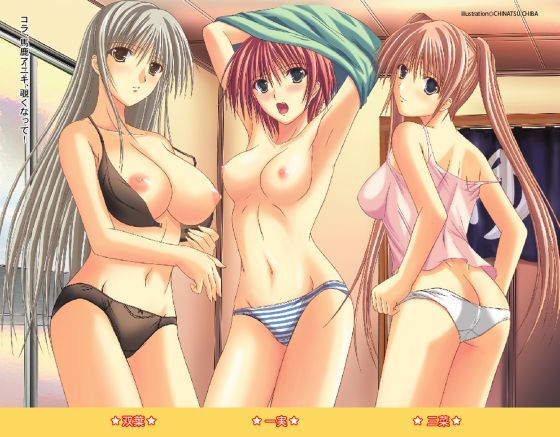
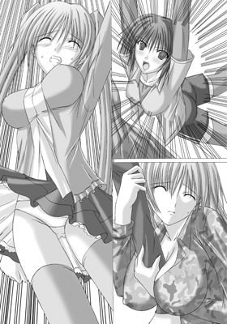
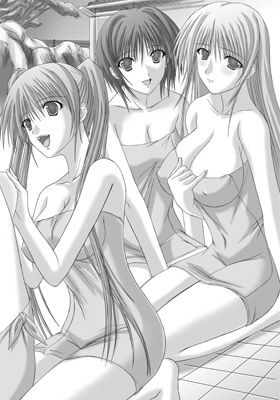
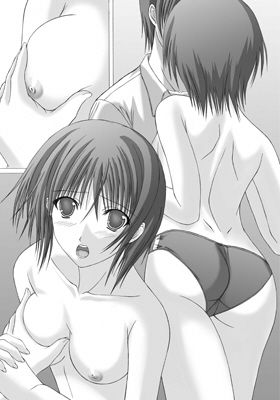
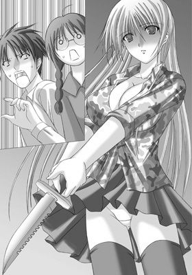
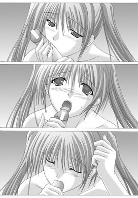
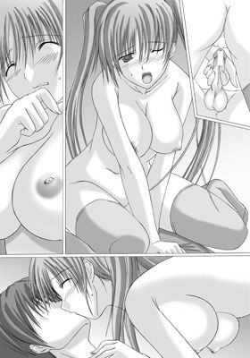
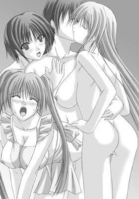

| 妹パンチ！ アニキなんて大キライ (美少女文庫) | |
| 森野 一角 | |
| フランス書院 (2006) | |

妹パンチ！ アニキなんて大キライ
森野一角
イラスト／千葉千夏
第０話 妹ピンチ！～三姉妹の兄として
１ 山羽家の事情
２ 血の繋がらない少女たち
３ お風呂でサービス？
第１話 一実～ボーイッシュな元気妹！
１ あぶない添い寝
２ 嫌われ大作戦？
３ 一線、越えちゃいました
４ 女らしさの補充
第２話 双葉～寂しがり屋のふしぎ妹？
１ あま～いひととき
２ ナイフに秘めた孤独
３ 追いかけられて......
４ お兄ちゃんと一緒
５ 二人の恋人
第３話 三菜～一番大切なツンデレ妹
１ 楽園の終わり
２ 妹を好きになるなんて
３ 同志からのアドバイス
４ お見合いスタート
５ 譲れない気持ち
最終話 妹パンチ！～お兄ちゃんなんてだ～い好き
第０話 妹ピンチ！～三姉妹の兄として
１ 山羽家の事情
それが叶えば死んでもいい。そう思えるほどの望みを持つ人間は多い。
例えば大学に合格し、高校の卒業式を終えて家族旅行に来ている山羽海彦の場合。
海彦は極めてわかりやすかった。
海彦には、大好きな三人の妹がいる。一つ年下で男の子のように元気な一実、さらに一つ年下で内気な双葉と、生意気だがしっかり者の三菜。双葉と三菜は双子だが、一卵性ではないため、容姿も性格もまったく似ていない。
昔は三人そろってお兄ちゃん子で、中学までは三人とも海彦に懐いていた。海彦のほうも、とある理由で好きと言えないでいたが、三人を同じように大切にしてきた。
ところが、海彦が高校に入った頃に状況は一変した。一実と双葉は海彦から距離を取るようになり、三菜はまるで母親のように口出しや干渉をするようになった。それでも大切な妹だという気持ちに変わりはなかったが、寂しいことも事実だった。
そんな海彦が日頃から思っている『死んでもいい状況』とは、三姉妹が『お兄ちゃん！』と叫びながら自分に抱きついてくれるというものだった。
......だったのだが。
「ぜ、前言を撤回するっ！」
魂の叫びが、海彦の口から飛びだした。
「アニキ、突然どうしたんだよ!?」
海彦の左腕につかまっていた一実が、突然大声をあげた海彦を見つめる。肩から袖に青いストライプが走る白いジャージが、不安げに震えていた。
短めの髪のせいで男の子っぽい雰囲気を持つ一実だったが、今はとてもか弱そうに見えた。
「わ、悪い。気合いを入れてたんだよ」
「そ、そっか。ごめんよアニキ......」
一実は気まずそうに目を伏せる。意志の強さを感じさせる瞳は陰り、トレードマークになっている白いハチマキも、いつものような力強い印象を与えなかった。
「オレたちのせいで、アニキまでこんな目に......」
「いいからいいから。これも兄の務めだ、気にするな」
深く息を吸い、海彦は踏ん張る足に力をこめた。
（......やっぱ、落ちたら死ぬよなぁ）
ちらりと背後を振りかえっただけで、背筋に寒いものが走った。
背後は切り立った崖で、はるか下に川が流れているのが見える。海彦は崖の縁に生えた細身の樹木に背を預け、滑り落ちそうな妹たち三人を必死に支えていた。
正面には自分たちが滑り落ちてきた崩れた斜面と、そこを降りてこようとする母親、そしてそれを必死にとめている父親の姿が見える。周囲には何人か観光客が集まってきているが、レスキュー隊員などの姿はなかった。
「お兄......」
双葉がなにかを話したそうに口を開くが、足もとが滑り、海彦の右腕にぎゅっと抱きついて口を閉じた。
海彦のお古の軍用フィールドパーカーは土で汚れ、腰まである淡い色の髪には細かい木くずがへばりついていた。
「じっとしていれば大丈夫だからな」
「......うん。信じる」
色素が薄いために赤みがかって見える双葉の瞳に、珍しく感情が浮かぶ。
海彦はぎこちない笑みを双葉に向けた後、視線を自分の腰へと向けた。
「......三菜は平気か？」
「あ、当たり前でしょ。誰に口きいてんの。海彦に心配されるほど落ちぶれてないっ！」
不満げに言うが、彼女の表情は海彦からは見えない。三菜は海彦の正面から抱きついていたため、ツインテールに結いあげられた髪とリボンが見えるだけだった。
「へいへい。三菜はそうだろうよ。そのままじっとつかまってろよ」
「しゃくだけど、従うわ。双葉たちの命がかかってるんだもの」
三菜は海彦の体をぎゅっと抱きしめ、身体を密着させる。彼女の震えが伝わってきたが、海彦はあえてなにも言わなかった。
海彦が再び正面に顔を向けると、母親が斜面を滑り降りてきていた。
「今助けるからね！」
母親はときどき腰のロープを確認しながら、できる限り素早く近づいてくる。

美しく通った鼻筋や切れ長の目、そして艶やかな唇にも普段のような輝きはない。茶色いウェーブの髪やジャケットを振り乱す姿は、とても普段クールビューティで通している英才社長秘書には見えなかった。
「お袋が来てくれたぞ。もう少しの辛抱だからな」
海彦と母親は、無茶をするところがそっくりだった。妹たちが突然の地滑りに巻きこまれたとき、海彦は安全な場所にいた。それなのに、妹たちの悲鳴を聞くと無我夢中で斜面を駆けおり、崖下に落ちそうだった妹たちを助けたのだ。
とりたてて運動神経がいいわけでもなく、筋力にも自信がない海彦にとって、それは無謀すぎる行動だった。全員が無事であることは、奇跡だった。
「ねえ、ケガとかしていない!?」
降りてきた母親は、顔を青ざめさせたまま、子供たちの名前を呼んだ。
「一実ちゃん！ 双葉ちゃん！ 三菜ちゃん！ 大丈夫!?」
あからさまに一人少ない。
「俺は無視ですか。長男なのに無視ですか」
「あら、そんなことないわよ。ちょっと名前が出てこなかっただけ」
母親は邪気のない表情で海彦に笑いかけた。
「よく三人を助けたわね。母さん、あんたを産んで本当によかったって思うわ」
「俺の十八年はそのためにあったのかよ......」
「と言うより、ようやく存在が許されたって感じ......ぐぇっ!?」
ケラケラ笑いながら近づいてくる母親だったが、海彦たちの二メートルほど手前でいきなりとまった。母親の腹に巻いた分だけロープが短くなったのが敗因だった。
「ちょ、ちょっとあなた！ もっと伸ばして！」
「もう限界だ！」
崩れた道の上にいた父親が、腕で×を作る。
「困ったわね。いったいどうしたら......」
母親が細かく首を左右に振る。
そのとき、足もとからブチブチとなにかがちぎれるような、絶望の音が聞こえてきた。
「うわわ、裂けてる、裂けてるよ。根っこが裂けてる！」
あわてて地面を見つめる一実に、いつものような陽気さはない。
「ど、どうしよう、アニキ!?」
「どうしようったって、お袋はあれが限界だし......」
海彦は周囲を見まわしたが、脱出ルートは母親経由しか存在しなかった。
（でも、少し遠いよな）
母親からここまでの距離は二メートルだが、双葉と三菜がそこまでたどり着ける保証はまったくない。たどり着けるのは一実ぐらいで......。
そこまで考えたとき、海彦の脳裏に答えが浮かんだ。
「一実」
「な、なんだよアニキ」
「お袋のところまで行って、手をつかんで、こっちまで腕を伸ばせ。それなら届くはずだ」
海彦は左腕につかまっている一実に向かってあごをしゃくった。
「そ、そんなこと言ったって......自信ないよ」
「お前の運動神経なら大丈夫だ。それに、万一落ちてきても、俺が絶対に助けるからさ」
安請け合いだとわかっていても、他の言葉が思いつかない。
「俺が保証する。お前なら大丈夫だから」
「......アニキがそう言ってくれるなら、やってみる」
一実はゆっくり海彦から離れると、ボクシングで鍛えた足腰でバランスを取りながら斜面を登っていく。
「一実ちゃんっ！」
母親が手を伸ばし、一実の右手をつかんだ。
「双葉！」
一実はすぐさま振り向き、海彦の右腕方向へと左腕を伸ばす。
その瞬間、地面に亀裂が走った。
「あ、あう......」
怯えて萎縮する双葉を押しだすように、海彦は右腕を一実へと伸ばす。双葉はそれでも戸惑って海彦を見るが、一実が腕をつかんで強引に引っ張りあげた。そして母親が双葉をつかみ、ロープへと導く。
「三菜、次はお前だ。急げ！」
「......え？」
必死に抱きついていた三菜が顔をあげる。彼女の顔には、海彦の上着の跡がうっすらとついていた。
「海彦も一緒に行かないと。もう時間がないって！」
「バカ。いくら一実でも俺とお前の体重を支えられるかよ。下手したら一実ごと落ちるぞ!?」
「で、でも、借りは作りたくないっ！」
上着をぎゅっとつかみ、三菜が海彦をにらみつける。
その背後でいきなり大地が陥没し、支えにしていた木が大きく傾いた。
「この大バカッ！」
海彦は倒れかかる樹木を足がかりに、反論しようと口を開いた三菜を一実のほうへと突き飛ばした。
「!!............」
そこからは、まるでストップモーションのように世界が流れた。
突き飛ばされた三菜の大きく見開かれた瞳。風にたなびくピンク基調の冬用ワンピースとデニム地の青いジャケット。不安げに揺れる両サイドのリボン。三菜を抱きとめる一実の手。崩れる地面と浮遊感。そして流れる景色、美しい春の空......。
（前言撤回したんだけどなぁ......）
不思議と後悔はなく、口もとに笑みが浮かぶ。
「がっ！」
突然、背中と頭部に痛みが走り、海彦の意識は断ち切られた......。
２ 血の繋がらない少女たち
目を開けると、海彦は小学生の頃に住んでいた家の玄関にいた。
視線が低く、世界が違って見える。靴を脱ごうと伸ばした手は小さく、指は短かった。
（......走馬燈ってやつか）
セピア色に染まる世界で、上がり框に腰をおろし、扉のほうを向いて靴を脱ぎはじめる。
どすん。ため息ひとつついた海彦の横に、誰かが座った。
いつの間にか、白い素足が海彦の右隣りに投げだされていた。
「おかえり、お兄ちゃん」
ひょいと顔を覗きこんだのは、男の子みたいに笑う女の子。一実。
まるで元気な子犬のように、くりっとした瞳を海彦に向ける。
（『アニキ』も嫌いじゃないけど、昔の呼ばれ方のほうがやっぱり好きだな）
「............」
左袖を引っ張るのは、銀色を思わせる淡い髪が綺麗でおとなしい女の子。双葉。
少し儚げな双葉が、感情の乏しい瞳に好意的な色を浮かべている。
「バカ。遅いよ」
ぐっと海彦の背中に重さがかかり、ツインテールの髪が頬に触れる。
（そういえば、三菜が最初にかけてきた言葉も『バカ』だったっけ）
懐かしさが胸にこみあげてくる。
見なくても、海彦は彼女がどんな表情をしているのかわかる。間違いなく、強い意志を持った目で、まっすぐに海彦を見つめている。
「......ご馳走、冷めちゃうじゃない」
肩越しに覗きこんできた三菜の表情は、想像通りだった。
「う、うん。ごめん。でも、先に食べててくれても......」
「バカ。お兄ちゃんの誕生祝いなんだから、待つに決まってるでしょ」
（そうそう。三菜も昔は『お兄ちゃん』って呼んでくれてたんだよな）
三人に手を引かれ、海彦は奥の部屋に連れられていく。
......扉を抜けると、そこは綺麗な海岸だった。
「お兄ちゃん、向こうの島まで競争しようよ！」
ワンピースの水着をまとった一実が、まぶしい光に包まれて消える。
そして、いろいろな思い出が巡りはじめた。
一緒に虫取りしたこと。川辺に寝そべって流れる雲を見あげていたこと。一実がこなごなにしてしまったスイカ割りのスイカ。迷子になった双葉を探して山腹を歩きまわり、自分も迷子になってしまった秋。野良犬に絡まれていた三菜を庇ってできた名誉の傷。三人からもらったバレンタインチョコレートは、なぜか三菜だけいつもビター。
（......そういや、そんなこともあったな）
四人一緒のクリスマス。四人一緒に迎えた正月、新世紀。四人揃って同じ中学の制服を着て、四人揃って同じ学校へ向かう。
そんな他愛のない思い出に幸せを感じていた海彦を、突然暗闇が覆った。イヤな予感がした。
「三人とも、無事か!?」
視界が開けたとき、三人は海彦から離れた場所に、背中を向けて立っていた。
「どうした？ なにかあったのか？」
「アニキ」
振り向いた一実が、海彦に向かってボクシンググローブをつけた拳を構える。
「お兄ちゃん」
振り向いた双葉が、キラリと輝くナイフを海彦に向ける。
「海彦」
振り向いた三菜が、蔑むような視線を海彦にぶつけてくる。
三人は今の呼び方で海彦を呼び、迫ってきた。
じりじりとさがった海彦の足もとで、なにかが崩れる音がする。
振り向くと、背後は崖だった。
「ちょ、ちょっと待て。早まるなッ！」
三人は一気に海彦めがけて迫ってくる。
「こんなうそっぱち走馬燈、断固拒否す......うわわっ！」
叫んだ瞬間、足もとが大きく崩れる。
「そんな、バカなぁっっっ！！！」
海彦は崖下めがけ、真っ逆さまに落下した。
（うわ、死ぬ！ 死ぬ！ 死ぬ！）
もがいた瞬間、ふっと意識が覚醒した。
（......あれ？）
気がつくと、オレンジの陽射しが海彦の瞳をまぶた越しに焼いていた。
（......なんだ、また夢だったのか）
がっかりした海彦の口から、長々と息が吐きだされる。
三人の妹が自分を頼るような都合のいい夢など、飽きるほど見ていた。
数年前までは当たり前だったことを、海彦は何度も夢に見る。今と大きく違う夢を。
いつまでも仲よくしていられると思っていたのは海彦だけで、海彦が中三のときに妹たちは距離を取りはじめた。
最初は一実だった。いつも一緒に登下校していた彼女が、部活があるからと別行動を取りだした。
つづいて、いつも海彦の後をついて歩いていた双葉が一実の後をついて歩くようになった。
三菜は離れはしなかったが、まるで母親か姉のように、細かいところまで目を光らせるようになった。
変化のきっかけがわからなかった海彦に、その様子を見ていた母親が吐き捨てるようにつぶやいた。
「女の子はね、男なんかよりずっと早く大人になるの。三人とも他の男の人とお前を冷静に見比べられるようになっただけ。そしてお前が妹に甘いだけのツマラナイ男だって気づいて、興味を失った。ただそれだけのことよ」
母親は、簡単に言いきった。
（......いやなことまで思いだしたな）
その日から、よく妹たちの夢を見るようになった。大抵はハッピーエンドの寸前まで行って、絶望で終わる夢。今回も同じパターン。......崖から二回も落ちる夢は初めてだったが。
「まったく進歩が......あ痛ッ!?」
身を起こそうとしただけで、全身に痛みが走った。
「アニキ!? 気がついた？ 三菜、母さん呼んできて！」
切羽つまった声につづき、海彦の左右の手を誰かが握る。
（まだ夢のなかなのか？......）
海彦はゆっくりと目を開けた。
視界には見覚えのない清潔な天井と、海彦を覗きこむ一実と双葉の顔。そして窓から差しこんでいたのは、清々しい朝日ではなく寂しげな夕焼けだった。
「アニキ、大丈夫か？ どこも痛くない？」
「お......兄......ちゃん」
心配そうな二人の顔と、二人が握る手の温もりが海彦に現実を伝える。
海彦はようやく、崖での出来事が夢でないことを思いだした。
「どうなったんだ、俺。崖から落ちたんだよな？」
「クッションになってくれた木に引っかかって、アニキ、宙吊りだったって......」
一実の声が曇っていく。
「......ま、アニキが頑丈なのは知ってたから、心配なんてしてなかったけどさ」
ぽたぽたと、一実と双葉の瞳から溢れた涙が海彦の頬に落ちる。
海彦は握られていた手をゆっくりと離し、二人の頭を数年ぶりに撫でた。
「ま、二人が無事でよかった......って、そう言えば三菜は!?」
「無事に決まってるでしょ、海彦と一緒にしないでくれる？」
声の主は、病室の入口に立っていた。
「心配することないって言ったでしょ。海彦の生命力はゴキブリ並みなんだから」
「あのなぁ、ゴキブリだって踏まれたら死ぬんだぞ？」
「なに？ ツブされるようなドジ踏むつもりで、私を投げ飛ばしたっていうの？」
病室に入ってきた三菜が、不機嫌そうな顔で海彦を見つめる。
「私に一生負い目を感じさせる気だったワケ？」
「バーカ。無我夢中に決まってるだろ。でも、三菜も無事でよかった」
思わぬ言葉を聞いたように、三菜は目を真ん丸くした。
「ちょ、調子狂うわね。......一応礼儀として感謝しとく。ありがと」
「礼儀で充分。負い目なんて感じられたら、やりにくいからな」
海彦は肩をすくめ、三菜の後をついてきた母親に視線を向けた。
「はい、そこまで。お母さんは海彦に話があるから、三菜、二人をお願い」
それがお願いではなく、命令であることは明らかだった。
「はーい。旅館の人に夕食の準備を頼んでおいていい？」
「そうね。そんなに時間はかからないわ」
三菜は小さくうなずき、一実と双葉を連れて病室を出ていった。
「ほんと素直でいいわね。やっぱり子供を持つなら女の子だわ」
扉が閉まるのを待ち、母親はベッドサイドにやってきた。
「お手柄ね、海彦。ほんと、お前を産んでよかったわ。お前は今日のために生まれてきたのね」
「開口一番それですか......そうですか。だと思ったけど」
海彦は大きなため息をついた。
「当たり前じゃない」
母親――山羽今日子は満面の笑みを浮かべた。
「あの子たちはやっと手に入れた宝石なんだから。それとも海彦はそう思わないわけ？」
うっとりした表情のまま、今日子はベッドに腰をおろした。
「女の子は最高よ。一緒に住んでいるだけで、甘い香りにクラクラするわ」
「そんなもんかな」
「海彦は学校で女の子と普通に会っているから、気づかないのよ」
今日子はやれやれと首を振った。
「いい？ あの子たちは最高なの。一実はとっても元気で、見ているだけでこっちまで元気になるわ」
「同意」
海彦は、今日子の定番セリフに定番の答えをかえした。
「双葉はとっても儚げで、守ってあげたくなる。愛らしくてたまらないわ」
「極めて同意」
「そして三菜はしっかり屋さん。今から将来が楽しみだわ。母さんみたいにやり手に育つことは間違いないわね」
「嬉しくないけど、激しく同意」
そこまで言って、海彦は大きく息を吐いた。
「どうもすみませんね、俺が男で」
「ほんと、自分の産んだ子が男の子だとわかったときは、目の前が真っ暗になったわよ」
当てこすりを正面から撃破し、今日子はベッドサイドから腰をあげた。
高校時代に未婚のまま海彦を産んだ今日子はまだ若々しく、あか抜けたファッションや仕草からよく二十代後半に見られる。普通なら自慢の母親になるはずだったが、海彦は彼女の容姿と性格のせいで散々苦労していた。
一番苦労したのは、小学校にあがる寸前にやってきた見知らぬ男と、彼が連れてきた三人の妹との生活だった。父親になった登は海彦に本当の子供と同じように接してくれたが、母親は三姉妹を一方的に可愛がり、海彦はそのしわ寄せに苦しんだのだ。
「でも、さすがにお前は私の血を引いているわね。見直したわよ？」
「お、お袋、そんな話題は......」
あわてて扉を見るが、採光用すりガラスの向こうには誰もいなかった。
三姉妹たちは早くに母親を亡くしていたが、彼女たちはそれを知らない。子供を悲しませないために父親がついた『母さんは遠くに行っている』というウソを信じていた三人は、今日子を帰ってきた本当の母親と認識していたのだ。
そして同様に、『お兄さん』である海彦も初めからいたと教えこまれた。
実際は、娘が欲しかった今日子が、息子が欲しかった上司（当時は営業部長）を口説き落とした連れ子再婚だったが、それを知っているのは両親と海彦だけだった。海彦も幼かったが、彼を口説き落とす片棒を担がされていたため、イヤでも記憶に残ったのだ。
「あの人だけじゃなく、娘も手に入るなんて最高だと思わない？ あんないいお父さんはお前にもったいないんだけど、こればっかりは仕方ないわね」
母親が娘だけを目当てに再婚したわけでないのが、海彦にとってただ一つの救いだった。
「精密検査の結果も良好。もう帰っても大丈夫だって」
「よかった。せっかく父さんに休みを作ってもらった旅行が台なしにならなくて......って、あれ？ お袋、父さんは」
「急な仕事が入って、三カ月ほど海外巡りだって。社長も大変よね」
母親は肩をすくめた。
「また？ 父さんも本当に大変だなぁ。って三カ月？ 春休みどころかＧＷ（ゴールデンウィーク）も全滅!?」
「そうよ。せっかく今日、ひな祭りも兼ねた旅行だったのに。あの人はいない、娘たちを着つける時間も取れない。もう、最悪だわ」
「三人とも無事だったんだから、いいじゃないかよ」
海彦はゆっくり起きあがり、体を動かした。ところどころ少し痛むが、その程度ですんだことに自分で驚く。念のため頬をつねり、痛みで現実だと確認した。
「起きたわね？ それじゃ、さっさと旅館に行くわよ。あの子たち、お前が目覚めるまでご飯を食べないって頑張ってたんだからね」
「え？ あの事故って昼前だったろ？」
「そうよ。だから母さん、一人寂しく外にランチを食べに行ったわよ」
海彦を責めるようににらみ、今日子は肩をすくめた。
３ お風呂でサービス？
夕食は申し分ないどころのものではなかった。
元々一食抜いていたのもあるが、海彦の活躍を知った女将が料金以上の料理を用意してくれたのだ。
「ふー、極楽、極楽」
そして今、海彦は旅館の目玉である貸しきりの露天家族風呂に浸かっていた。
「ここの温泉は打ち身にも効くんですよ。ゆっくり入ってください」
女将の粋な計らいを全身で堪能しつつ、広い風呂を見渡す。風呂は縁を岩で作られ、側にあるシャワーや身洗い場が見えなければ、天然温泉気分が堪能できそうだった。
濁り湯の温泉はどこか神秘的で、命がけで妹を助けたご褒美に相応しい、とても素晴らしいものだった。
「妹たちともまた仲よくやれそうだし、無理をした甲斐はあったかな」
満足げに体を伸ばし、満天の星が輝く空を見あげる。
コンコンとすりガラスの扉がノックされたのは、そんなときだった。
「アニキ、入ってる？」
「一実か。もうすぐ出るよ」
「ううん。出なくていいって。......というか出られると困る」
意味がわからず扉を見ると、すりガラスの向こうに白いタオルを巻いた姿が見えていた。
「か、一実？」
ゆっくり扉が開き、一実が入ってくる。やはり、裸体にタオル一枚を巻いただけの姿だった。
そしてその後ろから顔をのぞかせているのは双葉。さらに不機嫌そうな三菜までが同じ姿で家族風呂に入ってきた。
三人は海彦をちろちろ見ながら湯を浴び、まず一実がタオルを巻いたまま温泉に身を沈める。
「あー、いいお湯だね」
「そりゃいいお湯だが......って、おい？」
伸びをする一実の肢体に、湯を吸ったタオルがピッタリと貼りついた。
（うわ！）
思わず反応する下半身に視線を落とし、ここが濁り湯であることを神に感謝した。
双葉は一実の隣りに深々と身を沈め、顔を洗うように湯を顔にかける。さらにその隣りでは、三菜までが湯船に足を浸していた。
「熱っ......」
熱さに弱い三菜は、ゆっくりと身を沈めていく。
「ちょ、ちょ、ちょっと。三菜、お前までどうしたんだ。......正気か？」
「......どうして私にだけそういう言い方するかなっ」
「だって普通、お前はとめる役だろうが」
「仕方ないでしょ。これは姉妹会議で決まったことなの」
不満げに唇を尖らせ、三菜は肩をすくめる。
濁り湯のうえ、タオルを巻いている妹たちの裸が見えるわけではないが、海彦は意識的に三人から視線をそらした。
一実は三菜が浸かりきるのを待ち、おほんと咳払いした。
「名づけて『温泉で水に流そう』作戦。今日助けてもらったことを、一緒にお風呂に入ってチャラにしようってアイデア。どう？」
「ど、どうって言われてもなぁ」
さすがに、嬉しくてたまらないと素直に言えるわけもなく、海彦は言葉を濁した。
「ま、アニキ相手にできる精いっぱいの感謝の印ってことで、背中を流してあげようかなって」
「せ、背中を流すって......」
予想外の提案に、海彦の心臓がドンと強く脈を打った。
「そんな声出さなくてもいいじゃないか。昔よくやってたろ？ 感謝の丸洗い」
「い、いつの話だよ」
「小学校ぐらいかな。覚えてない？」
一実はニヤリと笑った。
「ずっとギクシャクしてた分も、これで水に流したいなぁ......なんて思ったりして」
ニヤリと笑ったまま、一実がゆっくりと近づいてくる。
「というわけで、おとなしく洗われるように！」
一実がタオルの位置を整えながら、静かに移動しはじめる。
彼女の身体の輪郭が見えるだけで、海彦の体は素直に男の反応を見せはじめた。
「ちょ、ちょっと待て。気持ちだけで充分だから！」
「こっちは充分じゃないっての！」
一実は立ちあがり、容赦なく接近してくる。彼女の肢体を隠すタオルはやや小さく、太腿の少し上で途切れていた。
（うわ、うわわわ......）
湯を押しのけるように大きく足を出すたび、バスタオルの裾が大きくはだける。太腿の間にある空間に、なにかがちらちらとのぞく。それが女の子の神秘のエリアだと気づいたとき、海彦のモノは爆発するように起きあがった。
白いタオルと、日焼けしていない白い小丘。それが近づいてくると思うだけで、海彦の胸がきゅっと痛くなる。
海彦は渇いた喉を潤すように、ごくりとツバを呑んだ。
「観念してくれたみたいだね」
いつもの笑顔が、妙に蠱惑的に見える。
彼女が湯に起こした波紋が届くたびに海彦の体は男の反応を見せ、女の空間を埋めるための生殖器官をビクビクと脈動させた。
ドクンドクンと、激しい鼓動が耳のなかでこだまする。息が苦しい。そして海彦の突起は経験したことがないほど硬く勃起し、妹たちの到着を待ちわびる。
（やばい、やばい。やばすぎる！ 嫌われるどころじゃすまないッ!!）
海彦が彼女たちを『女』として見ていることは、絶対に知られるわけにはいかなかった。
「や、やっぱり気持ちだけで充分だって」
「ええい、往生際が悪い。素直に感謝させてよ！ 双葉、三菜、まわりこんで！」
双葉が左、三菜が右に分かれて迫る。
体を反転させ、温泉からあがろうとした海彦だったが、一実に腕を取られて動きがとまった。彼女の腕の感触がそうさせた。『女』に触れられているという意識に、海彦の体は身動き一つできなくなっていた。
「アニキ、そんなにイヤなのかよ」
ふうっと、一実の息が首筋にかかる。
振り向いて抱きしめたくなる衝動を堪えるために、海彦はぐっと拳を握りしめた。
「イヤなわけないだろ。だけどな、恥ずかしいんだよ」
「オレたちだって恥ずかしいんだけど......」
背後から不満げな一実の声が響く。振り向くことができない海彦だったが、一実の表情は大体想像できた。
......海彦は、せっかく歩み寄ってくれた妹たちを拒絶することができなかった。
「わ、わかったよ」
渋々という風を装い、タオルを腰に当てて勃起した己の欲望を隠し、温泉からあがる。そして緊張していることを気づかれないように座椅子に腰をおろし、自分のモノを太腿の間に挟みこんだ。
「それじゃ、よろしく頼むよ」
「任せといて」
三菜は軽く海彦の頭を撫でると、スポンジを背中に押し当てた。
「海彦、痛かったら言ってよ」
耳もとで三菜の声が聞こえる。
彼女が操るスポンジは強すぎず弱すぎず、優しく背中を磨きあげていく。そのタッチや、ときどき肢体を支えようと海彦の肩や背中に触れる彼女の指の感触に、海彦の下半身がよりいっそう硬度を増した。
流れ落ちてきたボディーソープのために、肉茎を押さえるのが難しくなる。
（こら......おとなしくしろっ！）
海彦は必死に太腿を閉じ、股間の反乱分子を必死に押さえつけた。
「どうしたの？ どこか痒い？」
突然、三菜が海彦の背に肢体を預け、ほっそりとしたあごを肩に乗せる。タオル越しに伝わる柔らかい膨らみと、肩に触れる滑らかな皮膚の感触。三菜の温もりと耳もとで話す仕草に、海彦の注意力が一瞬途切れた。
――ぴょこんっ。
（お、おいっ!?）
太腿から現われる様子はコミカルだったが、顔をのぞかせたモノは醜悪だった。
隆起したモノは股間にかけたタオルを弾き、ヘソ近くまで身を起こす。
（こんなもの見られたら、俺は社会的に抹殺されるっ！）
海彦はあわてて股間に手を当て、背中を少し丸めた。
「アニキ、寒いの？」
「い、いや、違うよ」
海彦は、横から顔をのぞかせた一実に向かって肩をすくめる。それ以上、体を動かせなかった。
「じゃあ、腕をあげてよ。それじゃ洗えないからさ」
「お、おう」
一実と反対側に顔を向け、腕を突きだす。
「素直でよろしい。じゃあ、一気にいくよ」

ヌルリとした感触とともに、一実の指が海彦の腕を滑る。一実はスポンジを使わず、しごくように強引に腕を洗いだした。
腕を走るひやりとした指と背中を擦るスポンジが、海彦をいっそう高ぶらせる。
「それじゃ、双葉は前を頼むな」
「......うん。任せて」
「こ、こら。ちゃんとタオルを巻けっての。アニキの前に立つんだからさ」
背後で繰りひろげられる会話も、海彦の股間を刺激した。
（ど、どうしよう......。前に来られたら、さすがにばれるぞ!?）
だが、こうなっては拒否することはできない。
天国と地獄の狭間で、海彦は顔をしかめる。
そんな彼の救いの手は、外部からやってきた。
「ちょっとッ！ なにをやっているの!!? 海彦!!!」
「は、はいっ!?」
突然響いた今日子の声に飛びあがり、海彦は思わず振り向いた。
（う、うわ、うわわ！）
目の前に林立する三人の裸体から、白い湯気があがっていた。
逆光と湯気でハッキリとは見えないが、丸みを帯びはじめた肢体のラインに釘づけになる。
最後に見たときとまったく違う、熟れはじめた肢体。スレンダーな一実の脇にいる双葉のタオルは胸もとが大きく膨らみ、三菜は背中を向けているが、その背中も色っぽい。
海彦は母親の投げた風呂桶が迫ってきても、三人から目を離せなかった。
「ぎゃっ!!!」
頭部直撃。損害評価、大破。海彦は幸せな気分のまま失神した。
幸いなことに、大きくなった部分は風呂桶が隠してくれたが、もちろん本人は知るよしもなかった......。
第１話 一実～ボーイッシュな元気妹！
１ あぶない添い寝
海彦は、息苦しさに目が覚めた。
自室の布団なのに、妙に寝心地が悪い。
昨日までの旅行で妹たちと関係を改善できたことや、一緒に風呂に入ったことなどが遠い出来事に思えるほど、今の海彦はブルーな気分に浸っていた。
あの日、今日子は一方的な説教につづき、こう言い放ったのだ。
「お前、家から出ていきなさい。家賃は出すから、一人暮らしするの。いいわね？」
「だから、今回のことは誤解だってば」
「なにが誤解だっていうのよ」
今日子は肩をすくめ、ふーっと息を吐いた。
「私が心配してるのはね、お前があの子たちを異性として見てるってこと」
「で、でも大丈夫だって。兄妹なんだから」
「そんな戒めなんて、いざというときには役に立たないわ。お前は私の子供なんだから、本当に欲しくなったら一線を越えるわよ」
イヤな意味で説得力がある言葉に、海彦はがっくりとうなだれた。
「お前が年中発情男じゃないことは私も知ってるわ。でも、万一ってことがあるでしょ。あの子たちが男の手にかかるなんて想像もしたくないの」
「結局、オチはそこですか......」
抵抗したかったが、父親がいない今、今日子の決定は絶対だった。
「でも、急に部屋の契約なんて無理じゃ」
「仕方ないから、母さんたちのセカンドハウスを貸すわ」
「......そんなモノを持ってたんだ」
退路がすべて閉ざされていることを悟り、海彦は素直に抵抗を諦めた。
（引っ越しの準備をしなきゃ......）
海彦は重い体に力を入れたが、左腕が痺れて動かなかった。
（また、変な寝方をしちゃったか）
深呼吸し、自由にならない左腕を引っ張る。
「......んっ」
誰かの声がした。
誰かの吐息が首筋にかかる。
極めてイヤな予感がして、ゆっくりと左腕を眺めた。
「か、一実ぃ？」
......海彦の左腕を枕にして、一実が眠っていた。
柔らかそうな髪と寝間着越しに想像できる彼女の肢体が、寝ぼけていた海彦の意識を激しく突き動かす。一実は細身だがとても触り応えがありそうで、規則正しく上下する胸の膨らみから目が離せなくなった。
（ヤバイぞ。な、なにか知らないが、極めてヤバイ）
自分の運のなさと間の悪さに自信がある海彦は、一実を急いで起こそうと......。
「海彦、朝だよ。さっさと起きて」
いつものように、ノックもなく三菜が入ってきた。
「引っ越......」
まるで世界が凍ったように、三菜と海彦の動きがとまる。
「......ん？ ああ、おはよ、三菜」
ごく平然と、一実が挨拶した。
「なんだよ、その顔」
「な、なんだじゃないでしょ。どうして海彦の布団で寝てるの!?」
「練習に付き合ってもらおうと思ったのに、アニキが寝てたから」
一実は不思議そうに三菜を見つめた。
「理由になってない！ まったく、男女が同じ布団で寝るっておかしいでしょ」
「なんで？ 昔はみんなで昼寝とかしてたじゃない」
「小学校の頃の話を持ちださない！」
三菜は布団に近づくと、力任せに掛け布団を引き剥がした。
「......な......に？」
海彦の右脇あたりで器用に丸くなっていた双葉が、眠そうな目を三菜に向けた。
「な、なにやってるのよ、双葉まで......」
「......狭いところ、好き」
無表情のまま言い放つと、双葉は海彦にぎゅっと抱きつく。
「好きとか嫌いじゃないでしょうがっ！」
三菜は拳を握りしめ、力いっぱい床を踏んだ。
「ああもう！ みんな死んじゃえ！」
物騒なセリフを吐き、三菜は掛け布団でバンバンと三人を叩きはじめた。
「ま、待て、三菜っ！ 俺が悪いのかよ!?」
「さっさと起きない海彦も悪いっ！」
海彦をポカッと殴った後、三菜は掛け布団を投げ捨てた。
「もう朝食の準備できてるから、さっさと起きてよね」
「俺の分、メシが用意されているんならいいけどな」
「私はそこまで鬼じゃないわよ」
「......三菜はな」
扉の前に立ってにらみつける三菜の背後では、今日子がさらにものすごい顔で海彦を見つめていた......。
２ 嫌われ大作戦？
それは食後の軽い運動のはずだった。
「痛ッ、いててててっ、痛いって、痛いってば」
海彦はリビングルームの床に座った状態で背中を押され、悲鳴をあげていた。
「アニキの体が固すぎるんだって」
ジャージにショートパンツ姿の一実が、さらに海彦の背中を押す。
「いたっ、折れるっ！ 割れるっ！ 裂けるっ！」
「もう。大げさだなぁ」
「お、大げさじゃ......」
痛みに耐えきれず、ぐっと体を起こす。
......背中になにやら柔らかいものが触れた。
「まだだ、まだ終わらんよ！」
一実はもう一度胸を背中に押し当て、ぐっと体重をかけた。
「痛い、痛いって！」
耐えられず、海彦は悲鳴をあげた。
「そっ、そもそもっ、なんで俺がっ、ストレッチをっ......」
「そりゃ、しっかりほぐしておかないと、練習のときにケガするからだよ」
さらに胸を押しつけるようにして、一実は海彦の背中を押す。
「ぎゃー、死ぬ、死ぬ！」
体の痛みと、向こう側からにらみつける今日子の刺すような視線に、本当に死ねると思った海彦だった。
三十分後。海彦は河原の斜面で黄昏れていた。
一実のロードワークに付き合って走りだしたが、途中で脱落したのだ。一実は海彦の回復を待とうとしたが、彼女の練習にならないからと断った。
「もう走れない、か」
それは五十パーセントほどウソが含まれていた。体力不足は事実だったし、走るのは得意ではなかったが、途中で別れた理由はそれだけではなかった。走っている彼女の脚や尻の動き、光る汗......そして彼女のすべてが気になり、走るどころではなくなったからだった。
「お袋の言う通りだよな」
朝、もしも三菜が来なかったら、もしも他に誰もいなかったら、兄妹だからという戒めは破られたかも知れない。少なくとも一実に異性の魅力を感じていたことは確かだった。
そのうえ、ピンチを救ったからか、一実自身は海彦をまったく警戒していない。さっきのようなストレッチならまだしも、普通にスキンシップを繰りかえされたら、きっと取りかえしがつかないことになる。
（いったい、どうしたら......）
ぼんやりと河原を眺めていた海彦の目に、サッカーをしている子供たちの姿が映った。
子供たちは髪の毛をキラキラ輝かせ、サッカーボールを蹴りつづける。
「シュート！」
元気な声。そんな子供たちに、小さい頃の一実の姿が重なった。
海彦は、妹たちと引き合わされる前に一実と遊んだことがあった。それは、母親一人でも手にあまるのに、さらに三人の女家族が増えると言われ、しょぼくれていたときだった。
「ねえ、一緒に遊ばない？」
一実はサッカーボールを手に持ち、男の子のような笑みを浮かべていた。
再会は翌日、妹たちと初めて顔合わせしたとき。海彦と一実は互いに指で指し合って「あーっ!?」と叫び、両親を驚かせた。妹たちと上手くやっていけるか不安だった海彦にとって、彼女の存在は救いだった。
海彦の妹になった一実は、まるで子犬のようなまっすぐさで海彦を追いかけてきた。
一緒に遊び、一緒に走った。一緒に笑った。
「あの頃に戻りたいな」
昔のように仲よくしたい。それはやましい祈りではなかったが、結果はやましいモノになりそうな予感がする。兄を慕ってくれる一実に、兄として応えつづけられる自信がなかった。
「どうすればいいんだよ......」
「ずいぶんとお悩みのようですなあ。山羽君」
「そりゃ悩む......って、はいぃ!?」
突然隣りから聞こえた声に息を呑んだ。
声の主は、ぼさぼさの前髪がべっ甲の厚縁眼鏡にかかっていることを気にする様子もなく、化粧気のない顔を向けて海彦を見つめている。
いつの間にか隣りに座っていたのは、一言で表現するとオタク系の少女だった。
首の後ろで適当なお下げ髪をまとめたその顔に見覚えがあり、意外と早く彼女の正体を思いだせた。
「なんだ、鈴木さんか」
「なんだとは、これまたずいぶんなご挨拶ですな」
彼女は肩をすくめた。
「いかにも、鈴木美崎ですとも。しかし、その薄いリアクションはなにかね。立派な芸人になれないですぞ？」
「いや、ならないし」
海彦はサックリと会話の流れを切ろうとしたが、美崎は意に介さず言葉をつづけた。
「固い絆で結ばれた運命の相手との再会......とか思ったりはしないのかね？」
「どんな固い絆だよ」
「三年間同じクラスで、三年間日直のコンビ！」
「......柔すぎだっての」
ため息をつきつつ、海彦は美崎を眺めた。確かに美崎とは三年間同じクラス、そして三年間日直のコンビだったが、正直なところ海彦は彼女が苦手だった。というか邪魔だった。
「ま、あたしなんぞ、眼中になくても仕方ないか」
美崎は腕を組み、うんうんとうなずく。
「山羽君は妹しか見えない、妹ぞっこんラブでしたからなぁ」
「なっ!?」
いきなりの直球ストレートに、海彦は絶句した。
「な、なんだよ、その言い方は。それじゃ俺がまるでシスコンみたいじゃないか」
「違うような言い方しても、無駄無駄無駄ァ!!」
美崎はにんまりと笑った。
「シスコン確定だって。見てたから間違いない。昼休みとか放課後とか、三菜ちゃんが訪れると表情大変化！ ついでに、あたしが会話に割って入るとすっごい不機嫌だったもんね」
「......ずいぶんしっかり見てたんだな。ていうか、俺がいやがってるのわかってて、話しかけてたのかよ」
「ザッツ・ライト！ でも勘違いは勘弁。あたしが見てたのは三菜ちゃんだから。三菜ちゃん目当てで話しかけてたんだから、誤解なきように」
ちっちっちと舌を鳴らし、美崎は右眉を持ちあげた。
「誰が誤解するかよ。それより、妹目当てってどういうことだよ」
「そんなこと、決まってるでしょ？」
美崎はぽっと頬を赤らめた。
「あんな可愛い妹が欲しい。いっそ彼女になってくれたらなぁって」
「彼女ぉ？ お前、ソッチ系か？」
「イエース！ オフコース！」
聞き間違いかと思って美崎を見るが、彼女は大きくうなずいていた。
「もうラブ、ラブしまくり！ 三菜ちゃん攻め一実ちゃん受けで何冊書いたことやら！」
「......ええっと。邪魔したな」
おもむろに立ちあがろうとした海彦の腕を、美崎がマッハの勢いでつかんだ。
「大丈夫大丈夫。現実と妄想の区別はできてるから」
「そういう問題じゃないような」
自分の知らない世界から目をそらすように、海彦は大きく頭を振った。
「でさ、妹さんたちのなんで悩んでんの？ よかったら相談に乗ってあげるけど」
「は？ どうして妹がらみだってわかるんだよ」
「山羽君、それ以外で深刻に悩みそうにないから」
さっくり言いきると、美崎は自分のあごに指を当てた。
「こういうとき、女の子の意見って重要だと思わんかね？」
「女の子と言うには一般的じゃない気もするが、そうだな。鈴木さんなら妹たちの側に立った意見を聞けそうだ」
「当たり前。私は妹派。兄くんには悪いがね」
美崎はすっと手を差しだした。
「今ここで、妹同盟の発足を宣言するぞ！ 来たれ同志！」
「......同志って俺のことかよ。強引なんだな、鈴木さんって」
仕方なく握手する。......ペンだこのゴリゴリした感触が特徴的だった。
「あっと。さんづけはいらないから。同志に敬称は不要だからね。で、なにがどうなった？」
「切り替え早ッ。ま、そのほうがありがたいか」
海彦は深呼吸してから、旅行の際にあったことを美崎に話しはじめた。美崎はときどき相づちを打ちながら、海彦の言葉に耳を傾ける。彼女の興味津々といった表情は気に食わなかったが、他に選択肢はなかった。
「......なるほど。吊り橋の恋と昔の思い出のダブルコンボね。こいつはやっかいだ」
「吊り橋の恋？」
「危険でドキドキしたのを恋と勘違いするって奴。物語作る人間には常識だよ？」
「いや、俺は作らないし」
美崎は海彦の言葉を無視し、何度もうなずいた。
「こりゃ、一実ちゃんに嫌われるしかないね」
「いきなりなにを言いだすんだよ」
「それしか手がないじゃん。一人暮らししてるところにやってこられて、ベタベタされたり、シャワー浴びて薄着で出てこられたりしたら、ぐっとこない？ タオル一枚とか、着替えがないからって兄くんのシャツを着たりとか、そういうのを想像してごらんよ」
......想像しただけで、海彦の下半身が少し元気になった。
「妹の安全と自分への好意、どっちが大切？」
「妹の安全」
海彦は即答した。
「うむ。よい心がけだ。さすがはマイ同志。というわけで、いい作戦を授けて進ぜよう」
美崎はニヤリと笑い、海彦の耳もとに口を近づけた。
３ 一線、越えちゃいました
海彦はなぜか、自宅の庭に潜んでいた。
「これのどこが、いい作戦なんだよ......」
ため息をつきながら、洗濯物が干されたエリアに目をやった。美崎が考えた作戦は、下着を盗んでいるところを一実に見せて、嫌われるというものだった。
「早く庭でトレーニングしてくれないかな。いい加減、風邪を引きそうだ」
じっと隠れて待っていると、誰かが庭にやってきた。
（一実？ いや、違う）
それは見慣れない男だった。男は周囲を見まわしながら、ゆっくり物干竿へと近づいていく。
（ほ、本物の下着泥棒か!?）
男が下着に手を伸ばし、ショーツをポケットに入れた瞬間、疑念は確信に変わった。男は手慣れた様子で下着をしまいこんでいく。
「あ、こら！ なにやってる！」
海彦の背が縮みあがった。ちょうどトレーニングに出てきた一実の声だった。
男は海彦以上に驚き、海彦が隠れている場所へ向かって逃走しはじめる。
このままでは男と鉢合わせしてしまい、そして一実にも気づかれる。パニックを起こした海彦は、勢いよくやぶの陰から飛びだした。
「待てッ！ ここは通さない！」
腕をひろげた海彦に驚き、男は急にコースを変える。そして塀への最短コースを走り、勢いよく飛び越えた。
「アニキ、追うよ！」
「あ、ああ！」
一実はひらりと塀を越える。
......海彦も、なんとか塀を越えた。
下着泥棒は、昼間ロードワークで通った道を走っていく。
逃げる執念と追いかける執念がぶつかり合い、男と一実は海彦を置いて走っていく。
（一実......）
酸欠で頭がクラクラし、足もあがらないが、それでも必死に追いかける。
一度見失った後、ようやく発見した二人は、拳を構えて対峙していた。
「い、いい、度胸じゃない......」
ボクシングのスタイルで拳を構えた一実に、男は戸惑うことなく拳を掲げる。
肩で息をする二人の体から、白い湯気のようなものが立ち昇っていた。
「土下座して謝れッ！」
一実は男の攻撃を左右にかわし、拳を腹に叩きこむ。流れるような動きに男は翻弄され、効果的な反撃さえできずにいた。
（さすが一実。下着ドロなんてしてたら、半殺しにされてたな）
背筋に寒いモノを感じながら、海彦は決闘場へとよろよろ走っていく。
「......あっ!?」
突然、圧倒的だった一実の足がもつれる。
男が力任せに振りおろした腕が一実をとらえた。
「キャァッッ！」
服が裂ける音と一実の悲鳴が響く。
胸を押さえてペタンと座りこんだ一実を男がにらんだ。
「なんだその胸。ハズレかよ」
侮蔑の言葉につづき、胸もとを隠す腕を蹴り飛ばす。
その瞬間、海彦のなかでなにかが切れた。
「やめろッッ!!」
勢いよく倒れる一実の横を抜け、一気に男に迫る。勝算もなにもないが、とまらない。
「うわっ!?」
男の目前で足が滑り、前方へと体が滑る。
男の拳は沈んだ頭の上で空振りし、逆に海彦の頭が男のみぞおちをとらえた。
「ぐ、ぐぇぇぇ......」
つぶされたカエルのような声をあげ、男は動かなくなった。
「痛てて。か、一実、大丈夫か？」
「アニキっ！」
一実は涙目のまま、抱きつこうと大きく腕をひろげていた。
破れたシャツがぶらさがり、外気に晒された小振りな胸が海彦に迫ってくる。
膝をついていた海彦の顔面へと一実の乳房が......。
「うわああっっ！」
海彦は反射的に一実を突き飛ばしていた。
「あ、アニキ？......」
一実は海彦の視線を追い、自分の胸を見つめた。
とてつもなく気まずい空気に、海彦は窒息しそうになる。
「か、一実。その格好で帰るわけにもいかないだろ。俺の部屋に寄って着替えなよ」
「......う、うん」
一実はぎゅっと胸を隠し、小さくうなずいた。
「うわ、結構広いな」
玄関の扉を開けた海彦が、部屋のなかを見まわした。
そこは想像以上に綺麗な部屋だった。玄関を開けるとすぐにリビングルームがひろがり、玄関から見て右隣りには小さいキッチンとガスコンロがあった。
『ガス栓は閉め忘れないように！』
三菜のメッセージが書きこまれたケトル以外、リビングに生活感はほとんどない。この部屋があまり使われていないのは確かだった。
「ここ、お袋たちのセカンドハウスなんだってさ。実は俺も入るの初めて」
「............」
つづかない会話に戸惑いながらリビングを歩き、着替えを探して正面にあるドアを開ける。
部屋のなかには、甘ったるい芳香剤の香りが充満していた。
「スイッチ、スイッチは......っと」
必要以上に明るくしゃべりながら、海彦は壁際を手探りし、明かりをつけた。
......そこは作りつけのクローゼットとエアコン以外はダブルベッドしか存在しない、まさに『寝る』ためだけの部屋だった。
（セカンドハウスって、そういう意味かよ......）
出そうになるため息を呑みこみ、部屋に入って周囲を見まわす。
エアコンのリモコンが、ベッドサイドに転がっていた。
「寒いだろ。もうちょっとの辛抱だからな」
海彦はエアコンのスイッチを入れ、サイドボードの上に置いた。
「はてさて。俺の荷物はっと。......あったあった」
ダブルベッドの脇に『ちゃんと分類するように！』というメモが貼られた段ボール箱がいくつか転がっていた。
「三菜のやつ、本当にマメだな」
「............」
一実は答えず、ベッドに腰をおろした。
「あ、あのさ、アニキ」
「どうした？」
「さっきは......粗末なモノを見せてごめん」
誤魔化すように髪をかき混ぜ、一実は無理に笑顔を作った。
「その、見せるつもりじゃなかったから......」
「粗末ってなんのことだよ」
「これ。わかってるくせに聞かないでよっ」
一実は左手で乳房を隠しながら、右手で自分の胸もとを指さす。
ベッドの上に座った一実は、元々の身長よりかなり小さく見えた。
「双葉ほど大きくないし、というか三菜よりも小さいし......」
「ば、バカ。そんなこと関係ないって」
「あるよ。さっきのアニキの顔、すごかった。すごい顔で突き飛ばされた......」
「あのなぁ。ビックリしたからに決まってるだろ。その、触ってしまいそうだったから」
海彦はどう言っていいのかわからず、昔のように一実の頭を撫でようと手を伸ばすが、身体に触れる勇気が出ない。
まるで叱られた子供のように、海彦の心は落ち着かなかった。
「そっか。触れたくないから突き飛ばしたんだ」
「違うって！」
思わず否定するが、次の言葉が出てこない。
一実は少し海彦の言葉を待ったが、つづきがないと知ると、がっくりとうつ向いた。
「気を遣ってくれなくてもいいって。オレが女の子らしくないのは、オレが一番よく知ってる。さっきの奴がハズレって言ったのも正解なんだ」
「だから違うって」
「どう......違うのさ」
一実はゆっくりと胸を隠していた腕をさげ、トレーニングウェアと破れたシャツを一気に脱ぎ捨てた。
「か......ずみ？」
均整の整った上半身と小振りな乳房、そしてすらりと伸びた脚と汗を吸ったショーツが海彦の目の前に晒される。タオルで隠していた家族風呂のときと違い、一実は胸を隠そうとしない。
海彦は、晒された裸体と白いショーツに息を呑んだ。
「み、見ればわかるだろ？」
恥ずかしさに少し頬を赤らめながらも、一実はじっと海彦を見つめつづける。
「これのどこが女らしいって言うんだよ。筋肉がついてて、胸も小さくて......」
一実が力説するたび、彼女の小振りな双丘が上下に揺れる。
海彦は思わず視線をそらした。
「アニキも上を脱いでよ」
「......え？」
「比べたら、アニキの胸と大差ないってわかるから。早く！」
迫力に気圧され、海彦は上を脱ぐ。一実は海彦が脱ぎ終わるのを待って、そっと手招きした。
「ほら、変わりないだろ？」
海彦の真っ正面に立ち、一実が手を伸ばして胸板に触れてくる。
ひんやりとした感触に、海彦の鼓動がいっそう速まった。
思わず投げた視線の先では、慎ましい一実の膨らみと突起が揺れていた。
「ば、バカ。やめろよ」
見つめていたら、思わず抱きしめてしまいたくなる。とまらなくなる。それがわかっていて、見つめつづけることはできなかった。
「ほら......やっぱり目をそらした。男みたいな胸を見ててもつまらないもんな」
「だから違うって言ってるだろ」
つめ寄ろうとする一実の肩をつかみ、距離を取る。だが、その手から伝わるひんやりとした感覚さえ、極めて危険だった。
「じゃあ、どう違うのか言ってよ」
「そ、それはだな......」
海彦は、直球で問うてくる一実につけるウソを知らなかった。
「さ、触りたくなるからだよ」
「触るって......オレの胸を？ アニキが？」
「そ、そうだよ。兄妹だって言っても、一実は女で俺は男なんだぞ？ 目の前に裸の女の人がいたら、触りたくなって当然だろ」
一実は目を見開き、真偽を確かめるように海彦の瞳を覗きこむ。
軽蔑の言葉を想像していた一実の口から、意外な言葉がもれた。
「......それって、オレが女だってことをアニキが証明してくれるってこと？」
「え？」
「そ、その、そのさ。アニキが触ったら......証明になるってことだよな？」
一実の瞳が熱を帯びはじめる。
海彦は自分の失言に追いつめられるのを避けるように、顔をそむけた。
「ば、バカ。俺たちは兄妹なんだぞ」
「胸を触るぐらいなら、かまわないじゃないか。......アニキに触ってほしかったのに」
一実のテンション低下と反比例して、海彦のテンションが跳ねあがる。
アニキに触ってほしかった。その言葉が海彦の心を串刺しにした。
「さ、触っていいのか？」
「......え？」
「本当にいいのか？」
耳の奥から聞こえる鼓動のせいで、周囲の音がぼやけていく。
一実は海彦の顔に両手を伸ばすと、ぐっと自分のほうへと引き寄せる。
海彦の視線は、ごく自然に一実へと向いた。
「アニキなら、いいよ」
顔から離れた白い指に導かれ、海彦の手が小丘に触れる。控えめな膨らみは手のひらにぴったり収まり、しっとりと張りついた。
「どう......かな」
海彦は返事の代わりに、ぎゅっと乳房を握った。
「んっ......」
鼻から抜けるような声がもれる。一実は戸惑いがちに、それでも必死に胸を突きだした。
「確かに小振りだけど、柔らかいな、一実のおっぱいは」
「あぅ......っ、アニキ、言い方......エッチだよぅ」
「そりゃ......だって、一実のを触ってるんだぞ？ エッチにもなる......だろ」
しどろもどろになりながら、それでも乳房を揉みつづける。
「だからって......ひあっ！」
力強く握った海彦の指に肉丘の先端部を擦りあげられるたび、一実は甲高い声をあげた。
一実は海彦の腕につかまって身体を支えながら、紅が浮いた頬を海彦に向ける。そんな女らしい反応と仕草に、海彦の脈拍は一気に速まった。
「じゅ、充分女らしいぞ......。うん」
「ほっ、本当に、そう思う？」
身を乗りだした一実に押し倒されるように、二人はベッドの上に倒れこんだ。
一実は身体をピッタリとくっつけ、指に覆われていない乳房の先端部を海彦の胸板を擦りつける。それは無意識のものだったが、海彦にしてみれば、無意識でも故意でも同じことだった。
ゾワッと毛が逆立つような感覚が背筋を走り、腹の奥で生まれた黒い炎に肉茎が腫れはじめる。
「だ、大丈夫か？」
「うん......アニキ、ドキドキいってるね」
「あ、当たり前だろ。一実と体をくっつけてるんだから」
「オレのせいなんだね。なにか、嬉しいな。オレも......ドキドキしてるよ？」
海彦の胸板の上で、妹がはにかむように笑う。昔と同じようでまったく違う、とろけるような少女の笑みに、海彦の理性が悲鳴をあげはじめた。
「ね、アニキ......。キス、してくれる？」
一実は潤んだ瞳を向ける。風が吹くだけで揺れそうな理性が軋む。
「だ、ダメだ」
「どうして？ やっぱり、オレ......」
目を伏せた一実が言葉を紡ぐ前に、海彦は強引に言葉を割りこませた。
「違うって。その、キスしたらとまらなくなりそうなんだ」
「とまらなくなる......って？」
「わかるだろ。兄じゃなくて男になりそうなんだ。まずいだろ」
一実は身体をぴくっと震わせ、あちこちに視線をさまよわせる。そして一度深く瞳を閉じ、ゆっくりと開いた。
「じゃあ、キスして」
「ちょ、ちょっと、お前、人の話を」
「聞いたよ。アニキがオレを求めてくれるって」
一実が、ゆっくりと顔を近づけてくる。
「きょ、兄妹なんだぞ？」
自分に言い聞かせるように海彦が首を振る。
「それは、兄に生まれたアニキが悪いんだよ......」
実際には、兄に生まれたわけではない。そのことを告げるかどうか悩んだ一瞬のすきに、一実は海彦の至近距離まで顔を近づけた。
「怖いけど......アニキが抱いてくれたら、信じられる気がする」
「本当に、オレでいいのか？」
「うん。アニキがイヤじゃなきゃ、だけど」
一実は不安げな視線を海彦に投げる。
海彦は言葉の代わりに一実の背中に腕をまわし、ぎゅっと彼女を抱きしめると、体を半回転させた。
「えっ？」
さっきまで押し倒していた一実が、今は逆に海彦の腕のなかにいた。
「アニキって温かいね」
一実がそっと目を閉じる。海彦は優しく一実の髪を撫で、そっと唇を重ねた。

カチンと歯が当たるが、かまわず深く唇を吸う。一実もそれに応えるように唇を尖らせた。
「......アニキも初めてだったの？」
「そうだよ。下手でごめんな」
「ううん。嬉しいよ。アニキと一緒に進めるんだもん」
今度は一実からのキス。海彦は迎え撃つように彼女の唇を割り、舌を差しこむ。
「んふっ......」
必死に舌を絡め合い、吸い合う。二人の唾液が混ざり合い、一実の口のなかへと流れこんでいく。彼女は喉を鳴らしてキスの残照を呑み干すと、ぎゅっと海彦の背中にまわした腕に力をこめた。
「あっ......」
海彦の唇が耳たぶに触れただけで、一実は可愛い鳴き声をあげる。
「くすぐった......はぅっ！」
甘噛みされ、一実の肢体がピクリと震える。海彦はその反応を楽しむように、耳から首筋へと舌を滑らせた。
ほんのりと塩味の効いた一実の肌が、海彦の唾液で別の味へと変わっていく。
「んっ、んっ......」
少しずつ荒くなっていく吐息に合わせ、一実は細かい声をあげた。
首筋を走るゾワゾワとした触感に、一実の鼓動はより速くなっていく。
「可愛いな、一実は」
「ば、バカ......っ！」
貪るように首を舐めあげ、鎖骨の窪みを舌で抉る。まるでマーキングするように丹念に磨きあげながら、ゆっくりと授乳器官へと唇を進ませていく。
小振りだが形のいい乳房は横になっても形を崩さず、つんと天に向かっている。海彦は左手で右の乳房をつかみ、ゆっくりと揉みしだいた。
「......あふっ、う、んっ......」
手のなかで乳房が形を変えるたび、一実は控えめな喘ぎをあげる。先端の赤い芽は手のひらを押しかえすように硬く屹立していた。
海彦は、かまわず寂しげに起きあがった左乳房の先端部をじっと見つめた。充血していちだんと高くなるピンク色の乳輪と、その真んなかで控えめに自己主張する突起は、誘うように色づいている。
まるで吸い寄せられるように、海彦は小丘に実った小さな果実を口に含んだ。
「うぁっっ！」
ザラリとした舌の感触に、一実の背がぐっと反りかえる。まるで『もっと味わってほしい』と自己主張するように、乳房が海彦に押しつけられた。
「......やだ、だっ、あぐっ！」
カリリと甘噛まれ、一実の意識が一瞬遠くなる。肢体は赤みを増し、感じたことのない痺れに股間がジュンと濡れる。
自分が恥丘を海彦に擦りつけていることに気づき、一実は両手で顔を覆った。
「下着......汚れちゃうっ......」
「濡れた？」
「ば、バカアニキ......っ」
弱々しく海彦の頭を叩く一実。海彦はそっと体を起こすと、一実のショーツに手をかけた。
「脱がすよ？」
「......き、聞かないでよ」
一実は顔を隠しながらも、そっと腰を浮かせる。白い無地のショーツは一実によく似合っていたが、今は邪魔だった。
海彦は指に力を入れ、ショーツをそっと引きおろす。
一実の乙女を守っていた布切れは、引き剥がされる瞬間、ネットリと糸を引いた。
海彦はショーツの裏側を指でなぞり、まとわりついた蜜を彼女の太腿に塗りつけた。
「確かに濡れてるみたいだね。......見せて」
「や、やだっ......」
一実はあわてて自分の股間を手で覆う。指が粘液に触れ、つるりと滑った。
「やんっ......」
突然生まれた異質な悦楽に、一実の腹筋がきゅっと収縮する。彼女は荒くなった呼吸で上下する乳房の向こうから、太腿の間に座る海彦に潤んだ瞳を向けていた。
「一実、それじゃよく見えないよ」
蜜が気化する匂いが股の間からあふれ、海彦の男を刺激する。
「で、でも......」
「証明したいって言ったの、一実だろ？」
太腿が閉じられないように体を割って入れると、ぐっとＭ字に開かせる。
まるで解剖台の上のカエルのように、一実は怯えた目を向けた。
「それとも自分の指で触りたい？」
「......え？ や、んっ......」
海彦は覆いとなっている彼女の指の上に自分の手を重ね、グリグリと動かした。
「う......あぅ......ひっ」
細い指から生みだされた重い悦楽に、一実の身体が小刻みに揺れる。蚊に刺された箇所を押しつぶすような心地よい痺れに、一実の緊張は溶け落ちた。
「や、やん......あぁん......」
蜜まみれの指を強引に動かされるたび、一実は甘い声をあげる。抵抗しているように見えて、もう彼女は海彦のなすがままに流されていた。
「ほら、見せてごらんよ」
優しく一実の手をつかんで押しのけると、その下には可憐な蕾が芽吹いていた。
薄く茂みが生えた恥丘の下に見えるクレヴァスは子供のように清楚で、充血して左右に花開こうとする姿も美しい。
「綺麗だ、本当に綺麗だ」
海彦は初めて間近で見る女性器に顔を寄せ、ほんのわずかにのぞくラヴィアを指で触れた。
「ひっ！」
チリッと焼きつくような感覚に一実の腰が動き、外の帳が隠していた花びらが息づくように左右に揺れた。
（これが、女の子の......オマ×コなんだ）
生まれて初めて目にする魅惑の園を、ゆっくりと指で押し開いた。
「あ、アニキぃ......目が怖いよ......」
ぶるぶると肢体を震わせ、太腿で海彦を挟みこむ。
肉ヒダは鮮やかなピンクで、ひくひくと震える女穴から溢れる蜜が艶を与えていた。
「すごい綺麗だよ」
充血したヴァギナは鮮やかに上気し、産毛のような茂みや後ろの穴までが蜜に濡れて光っている。外見は幼くても、色づきや艶が女であることを主張していた。
海彦は、ラヴィアの先端部近くに生えた肉芽の存在に気づいた。クリトリスは半分皮をかぶったまま、ぷっくりと腫れている。まるで隠れている風情の突起に指を当て、ぐっと皮を剥いだ。
「あぁぅっ！」
全身に走る甘い痛撃に、一実の意識が一瞬とぎれかかる。触れられている悦びが後を追い、彼女の心に霞がかかりだす。初めての衝撃に、一実はシーツをギュッと握った。
「もっと触ってあげる」
「あ、アニ......ひぁ......あぅぅ......」
海彦は指の腹で肉芽を弄び、指紋のざらつきで優しく擦りつける。
一過性の悦楽を絶え間なく与えられ、一実の横隔膜が痙攣して激しく波打つ。指の圧力が生みだす熱が、牝唇をよりいっそう紅く染める。
「きゃぅ......っ!!」
押しつぶすように激しくこねられ、一実の肢体が感電したように飛び跳ねた。
「やっ、な、なに......こ、こわっ......はひっ！」
バシバシと脳内にスパークが飛び、一実の意識が細切れに分断される。
火が点いたように肢体は薄紅に上気し、のぼせたような感覚が一実を包む。
少しずつ高ぶっていくなにかに怯えながら、妹は股を大きく開いた。
「や、やだぁ......あっ......あぁんっ」
腰を揺すって肢体をくねらせる一実の痴態に、海彦の本能が高ぶる。
海彦はよりいっそう激しく指を動かした。
「だっ、やっ......ひぃんっ」
ピンク色の淫肌が指に絡むように妖しく蠢き、一実の震えに呼応してかすかに震える。
充血して色づいた肉の帳は、蜜を浮かべてキラキラと輝いていた。
海彦はまるで蜜に引き寄せられる虫のように、彼女の茂みに顔を近づける。その吐息は産毛のような淡いヘアを揺らし、露出した敏感な肌を撫でた。
「だ、だめっ！」
一実が太腿を閉じて急所を隠そうとするが、海彦の舌のほうが早い。あらわになった乙女自身をとらえられた瞬間、ぐんと一実の背中が大きく反りあがった。
「......ぁ！ ひぃはっ......あぅぁあ......っ」
丸裸のクリトリスを舐めあげられ、一実の腹筋にさざ波が走る。燃えるような濁流に下半身を焼かれ、一実は何度も鳴き声をあげる。
「や......きゃふッ！ あぅ！」
充血して身を起こした突起の上を舌が動くたびに、白い足が宙で躍る。
「あっ！ あぁッ！」
さらに充血しだしたピンク色のラヴィアが、芽吹くように盛りあがっていく。
一実のもっとも尊いエリアは愛液と唾液にまみれ、粘っこい輝きを放った。
「アニ......っ、み......見ない......あっ！」
己の急所をとらえられた恥ずかしさに、一実が肢体を何度もくねらせる。
海彦は、太腿や腹筋が動くたびに微妙に姿を変える柔肉に口をつけ、音をたててすすった。
「――アッッ！」
己を吸いだされるような感覚に、一実が断末魔の声をあげる。
汗の塩味でわずかに味つけされた愛液は、ほんのりと一実の味がした。
「やはっ......あひっ、おかし......っ」
舐められるたびに灼けるような悦楽があふれだし、一実の肢体にゾワゾワと震えが走る。全身の毛根が開き、毛が逆立っていく。
舐められてふやけたように膨らんだ秘裂は大きく開き、めくれあがった。
（ここに入れるんだ......）
はっきりと顔を出した膣口に人差し指を当て、指で縁を撫でまわす。
「うぁ！」
全身を貫く焦燥感に一実は全身を収縮させ、急所へとつづく蜜まみれの肉門はその身をひくひくと震わせる。
海彦は、まるで内側に引き寄せるように蠢く門に当てた人差し指に、そっと力をこめた。
初めての異物感に一実はぎゅっと目を閉じ、歯を食いしばった。
「あは、ふぁ......はぁ......っ！」
ズブズブと沈む速度に合わせ、一実が息を吐く。
彼女の淫口の締めつけはきつく、牝道はすでに熱くたぎり、海彦を誘うように脈を打つ。
海彦は第一関節までで諦め、ゆっくりと周囲を触診しはじめた。
そして、指の腹で肉壁を擦りあげながら、クリトリスに舌を躍らせる。
「だ、めぇ......っ」
二カ所から生みだされる波に、一実がいやいやと首を振る。沸きたつ熱で脳を溶かされる感覚に、自然と腰が躍った。
「いや......やぁっ！ へっ......変だよぉ......」
海彦の頭をつかみ、己の急所へと引き寄せて一実が喘ぐ。
次々に生みだされる悦楽に肢体がピンクに染まり、その悦びすべてを無抵抗で受け入れていく。そして......。
「ひぁッ!?」
舌先で陰核を強く押しこまれた衝撃が、一実の意識を一気に断ち切る。
「いやぁぁっっ!! 怖......こっ、あっっ！ ああぁぁっっ!!」
襲いくる濁流に呑みこまれ、一実の肢体が激しく痙攣する。さんざん翻弄された後、心地よいぬるま湯に浸かっているような、幸せな感覚が彼女の心を真っ白く染めあげた。
「イッた？」
一実はただぼやけた視線を天井に向け、荒くなった息で胸を上下させている。
妹がぼんやりと見ている前で、海彦はズボンと下着を脱ぎ捨てた。
すでに鉄のように硬くなっていた海彦の生殖器官は、天を向いてそびえ立つ。
腰をつかまれて覚醒した一実が、海彦のモノに目を向けた。
「それ......入れるの？ 大きすぎるよ......絶対入らないよ」
「そんなことないよ。一実はちゃんとした女の子なんだから」
海彦は小さな膣口に肉茎の先端を押し当てた。
熱い肉茎が触れる触感に、一実の肢体が硬く強ばる。
「力を抜いて。いいね」
一実は小さくうなずき、ぎゅっと目を閉じる。
海彦は腰に力をこめ、侵入を開始した。
「ん――――ッ!!」
痛みを伴う圧力に、一実のゲートが拡張される。
ずるりとなにかがめりこんでくる熱い感触に恐怖と期待を覚え、一実は小さく首を振った。
「せ、狭いな。一実のオマ×コは」
たっぷりと溢れた蜜にまみれていても、未通の膣口と未成熟な膣壁が激しく締めつけ、海彦の侵入に抵抗する。痛いほどの圧力と焼けるような摩擦熱。それでも鉄のように硬くなった男の象徴は、強引に押しひろげながら一実を貫いていく。
「ひっ、あっ、くあ......っ」
軋んだ痛みに、一実の口から獣のような悲鳴がもれた。
痺れるような摩擦に、海彦も声をもらしそうになる。
カリがなにかに触れたときには、思わず息をもらした。
「......あ」
異変を感じ、一実が声をあげる。迎え入れた肉茎が未通の乙女に触れていた。
「......本当に、初めてだからね」
「お前を疑ったりしないよ」
「もらってくれる......よね？」
海彦は伸ばされた右手を恋人握りし、一実の指を眺める。
本当の意味での一線を越えることをためらっている海彦の背中を押すように、一実はぎゅっと握りしめた。
「ああ。一実の初めてをもらうよ」
海彦は腰を押しつけるようにして、黒い凶器でリング状の処女膜を攻める。
「ぐっ......」
痛みを堪えるように、一実の左手がシーツを強くつかむ。
「あぐぅっ!!......」
耐えきれずに一実が悲鳴をあげた直後、バツンとゴムがちぎれるような音が胎内から響いた。
「痛......っ」
破瓜の痛みにうっすらと涙を浮かべ、一実が小さく首を振る。そしてぐっと反りあがっていた背中が、力なくベッドに沈んだ。
大切な箇所を犯されて苦しむそのか弱い姿が、海彦の本能を激しく高ぶらせる。自分が彼女を女にした悦びが、海彦の心を包んでいた。
「力を抜くんだ。いいね？」
うなずくのを確認し、海彦はゆっくりと着実に犯しはじめた。
灼熱の杭を、一実の一番奥深くまで押しこんでいく。
「あ......熱いぃっ！」
誰も触れたことのない肉襞をかき分けられ、一実が悲鳴をあげた。
（狭いうえに、ぎゅうぎゅう締めつけてくるっ！）
狭い女の器官に、海彦は歯を食いしばって己を沈めていく。処女を散らせたときと同じように、ぐっと腰に力を入れた。
「うっ」
思わず海彦の口から喘ぎがもれる。一番奥にある壁にぶち当たり、焼けつくような悦楽が杭を伝い昇ってきた。
「あ......っ」
子宮口を擦りあげられ、一実はほんの一瞬、痛みとは違う声をあげた。
「はぁ......っ」
まるで胎内にあった空気が押しだされたように長く息を吐き、一実はそっと下腹部に手を当てる。海彦は一実を埋めつくし、その奥で鼓動を刻んでいた。
「アニキが......ここにいるんだね」
「ああ。わかるか？」
「うん。アニキ......熱いよ」
痛みで涙を浮かべた一実が、それでも嬉しそうに目を閉じる。海彦は一実に覆いかぶさると、そっとキスをした。
「それじゃ、動くぞ。痛くてどうしてもダメだったら素直に言えよ？」
一実はぎゅっとシーツを握りしめ、小さくうなずく。海彦はゆっくりと腰を動かし、前後に抽送を開始した。
「あぐっ、はぁっ」
海彦の動きに合わせ、一実の口から途切れとぎれに悲鳴がもれる。
抽送のたびに破瓜の血がかきだされ、シーツに染みを作る。彼女を貫く赤黒い肉茎は醜悪な凶器だった。
「アニキ......気持ち......いい？」
痛みに耐えながら、一実が問う。一実の胎内もまた凶器だった。
「気持ちよすぎる......。すぐに出そうだ」
「......いっ、く......嬉しいっ」
ギュッと膣が締めつける。魅惑の圧力と摩擦に、海彦の興奮は一気に高みへと向かって走りだした。
「もう少しだから、我慢してくれな」
一実の右足と海彦の腹がぶつかって音をたて、その振動が肢体全体を激しく揺らす。
「あぁ、熱いッ！......んっ」
充血した肉茎を深く挿入され、子宮を擦りあげられた一実が悲鳴をあげる。
「ひぅ......んっ、そこ......そこっ、あっ......」
一実の声に、だんだんと甘い喘ぎが混じりだす。彼女は全身を桜色に上気させ、少しずつ海彦の抽送に応えはじめた。
「奥を......グリグリしてぇ......アニキぃ......グリグリ......」
恥ずかしい告白をするように、一実は視線をそらせる。
海彦は一番奥まで挿入し、腰をグラインドさせた。
「やんっ、そ、そこっ！」
一実はハッキリと反応をかえす。一方的でない行為に変わったことが嬉しく、海彦は奥深くを犯したまま腰をまわした。
「きゃふっ！ ふぁ......あっ!!」
コリコリした子宮口に刺激され、ヘソの下が噴火寸前のマグマのように煮えたぎる。
できる限り二人で気持ちよくなりたい。もっと繋がっていたい。海彦は射精感をこらえるために、腹筋が痛むほど力をこめた。
「へ、変っ......あぅっ、気持ちい......アアッ！」
一実はシーツに爪を立て、激しく身体を振動させた。
強烈な刺激に肉茎がいっそう膨張し、自然と前後の抽送に戻る。
求められる悦びに本能を刺激され、海彦は奥深くへと肉茎を叩きこむ。
「......アッ、あ、あっ！......」
腰をひねった一実の胎内で、肉茎の排出口が子宮口とまともにぶつかった。
（も、もう......出るッ!!）
一気に射精感が高まり、一実のなかに射精したいという牡の欲求が頭をもたげる。それを阻止したのは、ほんのわずかだけ残っていた理性だった。
急いで引き抜いた牡の突起から、海彦の樹液が一気に噴出した。
「あ、あっ！......あ......」
射精された体液が、一実の腹から胸、そして首筋まで飛び散る。
「熱......熱いよぉ......」
膨大な量の子種液を身体の上にぶちまけられ、一実は何度も首を振った......。
４ 女らしさの補充
心地よい陶酔感のなか、海彦は一実をそっと抱き寄せた。
「ヘヘ。この距離ってちょっと照れるね」
鼻と鼻がくっつきそうな至近距離で、一実は微笑んだ。
「一実......大丈夫か？ その、痛そうだったけど」
「う、うん。今、自分が女の子だったんだって、文字通り痛感しているとこ」
一実は、掛け布団の下で身体をもぞもぞと動かした。
「でも......本当に俺でよかったのか？」
「アニキだからよかったに決まってるだろ？ 知らない人とかだったら......いや、知ってる人でも絶対にイヤだよ。アニキじゃなきゃイヤだ」
「そ、そっか」
そう言われた海彦は、複雑な気持ちになった。一実は兄だからよかったと言ったが、海彦は実の兄ではない。もしも血の繋がりがないとわかったときに一実がどんな反応を見せるのか、確信が持てなかった。
（......しばらく黙っておいたほうがいいかな）
そんなことを考えている最中に、一実が目を伏せた。
「でも、それはこっちのセリフだよ。アニキ、同級生に......好きな人がいるんだろ。それなのに、オレが最初でよかったの？」
「......は？」
予想外の言葉に、海彦は目を丸くした。
「その反応はなんだよ。結構遠慮してたんだから。......隠さないで、誰なのか教えてくれると嬉しいな」
「そう言われても、心当たりはないぞ」
念のため記憶を漁った海彦だったが、思い当たる節がなかった。中高の六年間で一番多く言葉を交わした女子は鈴木だったが、今日会話を交わすまではただの級友にすぎなかった。
首を傾げた海彦の顔を覗きこむように、一実はさらに顔を近づけた。
「本当に？」
「一実にウソを言ってどうするんだよ」
「じゃ、本当にいないんだ!?」
一実は目を真ん丸くした。
「......そう聞いたから、邪魔になると思って一緒に帰るのやめたのに。オレ、なんかバカみたいだ......」
「あのなぁ。そういうときは素直に聞けっての」
「き、聞けるわけないだろ、そんなの」
すっと視線をはずし、一実は唇を尖らせた。
「でも、おっかしいなぁ。三菜が言ってたから、間違いないと思ったのに」
「なんだ、ニセ情報の出所は三菜かよ」
「うん。教室でアニキが女の子と話してるのを見た、あれは特別だよって」
一実は布団のなかで器用に肩をすくめた。
「たぶん、日直の相手か誰かを勘違いしたんだな。気を遣ったつもりなんだろうが、困った奴だ。後で文句の一つも言ってやるか」
「ううん、もういいよ。......そんなことしたら、怪しまれそうだし」
少し身をよじって距離を取ると、一実はゆっくりと上半身を起こした。
「シャワー、浴びてこようっと。......こんな匂いをさせて帰ったら、ばれちゃうから、さ」
一実はベッドから降り、海彦に背を向ける。
たった一度愛を交わしただけなのに、その肢体は妙に艶めかしく見えた。
「......あっと」
そんな海彦の視線に気づいたのか、一実はゆっくりと振り向いた。
「ねえ、アニキ」
「なんだ？」
一実が頬を染める。
「たまにでいいから、これからも女らしさを補充してほしいな」
言い終わると、一実は返事を待たずにバスルームへと消えていった。
「たまに、か」
一度抱いてしまうと、タブーは感じなくなる。
『たまに』ですむのかどうか不安になった海彦だった。
第２話 双葉～寂しがり屋のふしぎ妹？
１ あま～いひととき
海彦の予想ははずれ、二人が体を重ねたのは、数日に一度ぐらいの頻度だった。
理由は単純明快、なかなか二人きりになれないからだった。
あれから三週間近く経った今も引っ越しは終わっておらず、海彦は今も自力で運んだ荷物を収納し、夜は自宅に帰るという生活を送っていた。母親が引っ越し業者を雇わないのは、息子がよからぬことを考えないようにと、忙殺する作戦をとったせいだった。
そんな状態で一実と二人きりになるには、海彦がマンションで引っ越し作業をしているときに一実が合流するしかないのだが、これが簡単ではなかった。
春休みに入るまで一実には授業に加えて部活があり、土日以外は一緒に家に帰るのが精いっぱいだった。そして春休みに入ってからは、別の障害が二人の仲を阻害していた。それは......。
「......あ」
シャワーを浴び、厚手のタンクトップとショートパンツに着替えてきた一実が、間の抜けた声をあげた。一瞬『よりによって』という顔をしたが、もちろん気づかれる前に表情を変える。
（今日もだめかな）
海彦は気まずそうにバスルームのドアを閉めた一実につづき、彼女の正面に立っている妹に目をやった。
「姉さん、その格好はなに？ どうしてシャワーを浴びたのよ」
「な、なにって、掃除しやすい服装に決まってるだろ。それに、シャワーぐらいなんだよ。部活で汗かいたままってのも気持ち悪いし、使えるものを使わせてもらっただけさ」
「......ふぅん」
三菜の値踏みするような視線に、一実は身体を硬直させた。
そう。一実が来る前に三菜が先に部屋にやってきて、引っ越しの片づけを手伝っていることが多かったのだ。
そしてここ数日は珍しく三菜が来なかったが、その期間は一実が生理だった。
三菜は一実に近づくと、彼女の服装をちらちら眺めた。
「ふーん。なにか気合いが入ってるみたいだけど、姉さんってホントは片づけが苦手でしょ。姉さんに任せてたら全然片づけ進まないんだけど」
身軽な服装の一実にぶつくさ文句を言いながら、三菜がてきぱきと片づける。
「海彦も自分のことは自分でやらないとだめじゃない。私がいないとなにもできないわけ？」
「悪い。どうも三菜には甘えっぱなしだな。いや、ずっと甘えてたら楽でいいか」
「こんな大きな子供を持った覚えはないっ。ほら、手を動かす！」
まるで母親のように叱りつけ、三菜がため息をつく。
「食材の買い出し、姉さんが行ってよ。私がつづけて片づけるから」
一実はピクンと身体を震わせると、ちらりと海彦を見た。
「......い、いや、オレってそういうの苦手だから。あとで文句言われるより三菜が行って選んだほうがいいと思うな」
「どしたの。言い逃れしてるみたいな雰囲気。なにか怪しい......」
なぜか海彦までがギクッとした。
「違うって。ほらオレ、この前、豆腐頼まれて卵豆腐とごま豆腐買っただろ？ そういうの、よくやるから」
「......ごま豆腐が泳ぐ鍋は新鮮だったね。でも買い物は慣れないと覚えないんだよ？」
「アニキの引っ越しが終わったら覚えるよ。部活帰りに買い物とか手伝うつもりだから」
「それって、新学期以降のこと？」
三菜はちらりと海彦を眺めた。
「あんまり海彦を甘やかさないでよ。教育によくないんだからね」
「あのな、三菜。子供扱いするなって。俺はお前より二つ年上だっての」
「言葉より行動で示してくれるかな。私から見たら海彦なんてまだまだ子供だよ」
三菜は肩をすくめた。
「それじゃ、買い出しして直帰する。晩ご飯は八時だから、それまでに片づけを切りあげて戻ってきてね」
「ああ、わかった」
三菜は海彦の返事に満足げにうなずき、玄関の扉へと向かう。
そして、ほっと胸を撫でおろした海彦と一実のほうを振り向いた。
「ああっと。それと、姉さん」
「な、なに？」
一実はあわてて視線をそらした。
「海彦が変なことしようとしたら携帯鳴らして。助けに来るから。......ま、海彦にそんな度胸なんてないだろうけどね」
「う、うん。わかった。ありがと。三菜も気をつけて」
部屋を出ていく三菜を見つめる一実の笑顔は、どう見ても作りものだった。
「あー、心臓がとまるかと思った」
扉が閉じた後、一実が安堵の息をつく。
「変なことをしようとしたら連絡くれって言われても......変なことじゃないよね？」
「イケナイことかもしれないけどな」
「それは、連絡しなくていいことだよね」
少しはにかんで笑うと、一実はベッドの上にいる海彦に飛びついた。
「おわっ、一実!?」
「えへへっ」
抱きついたまま身体をローリングさせ、海彦ごとベッドの上をごろごろ転がる。
小さい頃よくそうやっていたことを思いだし、海彦はされるままに何度も転がった。
そして一実と向き合ったまま、右肩を下にしてとまった。
「やっと二人っきりだね。アニキ」
「そうだな」
「キスして。アニキ......」
言われるまでもなく、その柔らかい唇にキスをする。そして、ぎゅっと一実を抱きしめ、髪の毛を撫でた。
一実は猫のようにぺったりと海彦の腕のなかに身を沈める。
その仕草は、外見と無関係に女の子そのものだった。
「アニキ、あのさ......」
「なに？」
「その、オレ、終わったばかりだから......そのままでいいから」
なにを言われたのかわからず、海彦は薄く上気した一実の頬をじっと見つめる。
「最後まで、そっ、そのままで大丈夫だから」
「......そのままって？」
「い、言わなきゃわからないのかよっ」
一実の顔が真っ赤に染まった。
「お、オレのなかに......なかに出していいから」
ぎゅっと痛いほど海彦を抱きしめ、一実がなんとか言葉をひねりだす。
「ううん。......なかに欲しい。アニキを......最後まで感じてたい」
「えっ？ それって」
「きっ、聞きかえさないっ。......は、恥ずかしいんだぞ、い、言うの」
いきなり高ぶった鼓動に戸惑いながら、海彦もぎゅっと抱きしめかえす。こういうお願いは大歓迎だった。
「......アニキも、してほしいこと言っていいよ？」
一実のかすれるような小さな声が、海彦の耳に届く。
「一実と一つになれるだけで充分だよ」
海彦は一実の甘い香りを吸いこむ。こうしていられるだけで、海彦は信じられないくらい幸せな気分になれた。腕のなかに一実がいる、それだけで充分だった。
トクントクンと、二人の鼓動が混じる。
海彦はそっと腕を緩め、一実の背中を優しく撫でまわしはじめた。
自然と互いに撫で合い、足が絡み合う。海彦が肩胛骨あたりを撫でると、一実はピクピクと小刻みに背を反らせた。
「ふぅーっ」
なにかに耐えるように一実が息を吐く。
その仕草のつづきが見たくて、海彦はタンクトップの裾から左手を差し入れた。
「えっ......あぅっ！」
乳房に触れられただけで、一実が甘い喘ぎをもらす。
「ずいぶん感じやすくなったな」
「......あ、アニキのせいだよぅ。アニキがこんなに......あんっ！」
海彦が、唇を尖らせた一実の、同じように尖った胸の部位を捻る。キュンと刺さるような甘い痛みに、一実は色づきはじめた肢体を何度もくねらせた。
「あ、あっ、あっ......」
彼女は仕返しのように、海彦の作業用ズボンに手を差しこむと、もう大きくなっていた海彦の分身をまさぐり、前後にさすりあげた。
好きな人に触られ、弄られる悦びが海彦の本能を刺激する。
ひんやりと冷たい指の感触に、海彦の硬度はいっそう高まった。
「うっ」
怒張したモノを握られた瞬間、海彦の体に痙攣が走る。その動きを楽しむように、一実の動きが激しくなっていく。
「あ......アニキッ......かわいいっ」
海彦は仕返しの仕返しで、彼女のショートパンツにぐっと右手を突っこみ、ショーツのなかへと指を差しこむ。柔らかな手触りの布切れは、海彦に対しては無力だった。
「やっ......ずる......ぃっ」
一実は必死に腰を揺すって逃げようとするが、海彦の指は確実に彼女の急所に伸びていく。
「ひぅっ!?」
一実の女の部位はたっぷりと蜜を生み、触れた海彦の指を柔らかく受け入れた。
湧き水に濡れた秘所を触れられ、カッと灼けるような痛痒い感覚に白い肢体が緊張する。二人は互いの性器を直接愛撫しながら、数度キスを交わした。
「アニキ......キスが......上手くなっ......た」
「キスだけじゃないぞ」
重ねられた一実の柔らかい唇を充分に堪能し、割るように舌を差しこむ。
ごく自然に絡み合う舌の動きに釣られるように、海彦はタンクトップのなかの手を動かした。じっとりと汗で濡れた肌が張りつくように、潔いほど小振りな膨らみが指に押しつけられる。
「ンっ......んんっ......」
心臓をわしづかみにされるような感触に、一実の肢体がぶるりと震える。唇と乳房、そして女の器官の三つの急所を押さえられた一実は、存在すべてが海彦の手中にあった。
「あぅ、ん......ぷふっ......やぅ！」
海彦の左手が胸の上を躍り、右手は摩擦で火を点けるように、敏感な肉芽を腹で前後に擦りつける。身体の芯が引火したようなチリチリする鋭い快感に一実が全身を震わせた。
肢体の自由が失われ、ズボンに差しこんで海彦を握っていた手がスルリと抜け、先走り液に含まれた牡の匂いを空気中に拡散させた。
「ウン......ンンンッ、アンッッ！」
一実の肢体が、海彦の指に従って躍る。抵抗がなくなったのを確認し、海彦はタンクトップをぐっと押しあげた。小振りだが充血した乳房が覆いを奪われ、その姿を海彦に晒す。硬くなった先端部は屹立し、食べ頃の野いちごのように見えた。
海彦は一実の唇を解放し、顔を彼女の胸もとに寄せた。
「......あぅっ！ ひあぁんっ......あんっ！」
突起に加わった歯の圧力が一実の理性を突き崩し、悦びにまみれたまま海彦の顔を胸に引き寄せる。海彦は舌と口でその要求に応え、激しく舐めまわし、何度も甘噛みを繰りかえす。海彦の右指は、いつの間にか一実の蜜にまみれていた。
（もうベトベトだ。......ずいぶんエッチになったな）
一実の目がトロンと溶けたことを確認し、海彦は上半身を起こした。
「......え？」
突然の休止に戸惑う一実の腰の側にしゃがみこむと、海彦はショートパンツに手をかけた。一実は腰を浮かし、海彦がショートパンツとショーツを脱がすのを手伝う。海彦は一実の顔がある方向に足を伸ばして横になると、右太腿を持ちあげて脚の間に顔を入れた。
厚手の外周部を押し開いて顔をのぞかせる艶やかな貝肉が、指にほぐされて紅に染まっている。一実の未成熟な華は蜜を浴び、優れた食感を持つ具材のように艶々と輝いていた。
「あ、アニキ......」
大切な場所に海彦の息吹を感じ、一実がきゅっと脚を閉じる。
「やっ......」
一実が尻を振るが、もちろん海彦の手は離れない。
海彦は一実の敏感な箇所に顔を近づけると、わざと音をたて、花園を隠すスリットを舌で舐めまわした。薄皮のように厚みのなかった肉ビラが、血を集めて見るみる膨らんでいく。まるで海彦の舌でスイッチを入れられたように、一実の赤い溝はさらに香ばしく色づいた。
「だ、やっ!! やぁっ！......」
望む以上の熱い濁流が、一気に一実を駆け昇っていく。
海彦に柔肉をゾリリと舐めあげられ、一実は呼吸を忘れて熱に身を溺れさせた。
「やあぁんっ！」
震える尻の動きが、舌に横方向のベクトルを与える。まるで自らの死刑を執行する罪人のように、一実は小刻みに尻を震わせつづけた。
海彦は腰をつかんでいた手を一実の頭のほうへと動かし、タンクトップを彼女の乳房より向こうへ押しやる。あらわになった乳房は下向きの重力でほんの少し大きく見えた。
「あんっ......アニキだけ......ずるい......」
一実はシックスナインの形へと持っていくと、海彦のズボンのファスナーを引きおろし、下着に開いている小窓から隆起している肉茎を引きだした。
一実は肉茎を口に含み、まるでキャンディを舐めあげるように、ていねいに舌を絡ませる。
彼女の脚の間からのぞく光景は、あまりにも淫猥だった。
（一実が俺のものを舐めてくれてる？......）
初めてのフェラチオに、海彦のモノがいっそう硬くなる。その反応を喜ぶように、一実はチュバチュバと音をたてて生殖器を磨きあげた。
「んっ......んふっ......」
自主的に咥えてくれた嬉しさに、海彦もよりいっそう丹念に一実の華を舐めあげる。
シックスナインで互いのモノを愛し合う音が、エアコンの駆動音に混じって響く。
「あっ......アニキの、美味しいよ......」
根元から先へと舌を這わせ、一実が肉茎を磨きあげる。
彼女が自分を貫くモノを舐めて清めている姿を想像しただけで、下半身の一点に血が収束していった。
ねっとりとした舌と圧迫感が海彦の体に火をつけ、自然と呼吸が荒くなっていく。
舌先はカリの根元を何度も訪れ、裏筋をほじるように強く擦りつけてきた。
胎内とは違うソフトな触感に応えるように、海彦も彼女の肉突起を舐めあげ、そして人差し指を秘所に沈ませた。
「はひっ!?」
身になにかが割って入る衝撃に、一実が牡突起を咥えたまま悲鳴をあげる。貫くべきモノを口に含んでいても、一実の牝は挿入に酔っていた。
海彦の指は奥まで入りこみ、たっぷりと濡れる肉の狭間にその身を隠す。淫壁から伝わる鼓動と圧力に頬を緩ませながら、海彦は肉をかき混ぜるように指をグルグルと回転させた。
「ひっっっ!!......」
全身を貫く甘く激しい雷撃に、一実の頭の奥でなにかが弾けた。背中が大きく反りあがり、口から海彦のシンボルが抜け落ちる。全身を痙攣に似たさざ波が走り、まるでペニスをとらえるように奥を愛していた指をぎゅうぎゅうと締めあげた。
「お......兄ぃちゃんっ......」
まるで子供に戻ったように、一実がとろけそうな表情で肉茎に頬擦りする。
「もっとぉ......お兄ちゃぁん......」
昔の呼び方で海彦を求める一実が愛おしくてたまらない。お兄ちゃんと呼びながら妹が尻を振るたび、海彦の興奮はいっそう高まる。自然と腰に力が入り、下半身に火が走る。
一実は子供のように激しく頬を擦りつけ、きつく握った手を激しく上下させた。
「うっ！......」
海彦の口から、唸り声のような喘ぎがもれる。容赦のない愛技から逃れるために海彦が腰を引くが、それは逆効果だった。
ぎゅっと強く握りしめられ、刺激が熱となって一気に駆け昇る。びくんと震えた肉茎に頬ずりした一実めがけ、熱い体液が一気に噴出した。
「ドバドバ出てる......っ」
精液は思うがままに一実の顔を穢し、射精している肉茎に擦りつけられた頬に精液が擦りこまれる。
一実は海彦の肉茎の脈動がとまると、愛おしげに頬ずりしたまま大きく息を吐いた。
そしてピクリと背に波を走らせ、ゆっくりと上半身を持ちあげる。
「......あ、れ？」
海彦にぼやけた視線を向けた彼女の頬を、精液が伝って落ちはじめる。
「一実、大丈夫か？」
「う、うん。でも......まだ頭がほわほわしてる。お兄ちゃんの......あっ」
一実は恥ずかしそうに目を細め、そっと視線をそらした。
「あ、あのさ......もう一つお願い、いいかな」
そしてちらちらと海彦を見ては、戸惑ったように視線を泳がせる。
「今だけ、お兄ちゃんって呼んでもいい？ そっ、そっちのほうが素直に甘えられそう......だからっ」
「普段からそう呼んでくれてもいいぞ？」
「ダメ！......け、結構恥ずかしいから、二人っきりのときだけ」
無意識に指を噛んだ一実の顔が、ちょっと歪んだ。
「な、なにコレ......。ちょっと苦い」
「......顔にかけて悪かったな」
「ううん。お兄ちゃんの精子は好き」
頬に指を当て、ついている海彦の体液をすくい取って口に入れる。
「......これがお兄ちゃんの味なんだ」
「無理して呑まなくていいよ」
「無理なんてしてないって。......いつか、してみたいって思ってたんだ。次はきちんと呑んであげる。でも......」
意味ありげに目を伏せ、もう一度ベッドに上半身を倒す。
そして、四つん這いになって、海彦に向けておずおずと尻を突きだした。
「今度はこっちにちょうだい。ね......お兄ちゃん」
おねだりする口調に、海彦の下半身が脈を打って応える。海彦は体を起こすと、突きだされた尻の手前で膝をついた。
視線の先で、怯えと期待に震えるように、ピンクに染まった柔らかな肉が揺れる。海彦はほっそりとした両腰をつかむと、秘部に肉茎の先端を押し当てた。
急所につづく箇所に牡の熱を感じ、一実の尻がもぞりと動く。それは逃れるためではなく、確実にトドメを刺されるため。海彦はその誘導に従って先端部を窪みに沈めた。
「......んっ」
わずかに走った痛みに、一実は目をつぶった。五感の一つを絶つことで、加えられた力が女の帳に収束し、そして押し開いていく感覚が明確になる。
「ひんっ......」
熱い塊をネジこまれ、まだ青さを持った一実の淫筒が強引に拡張される。
海彦が腰に力を入れ、ゆっくり美肉を侵食しはじめているのを、一実は文字通り痛感した。
海彦のモノは牝尻の裾にある窪みへとエラを沈め、なおも少しずつ温かい胎内へと入りこんでいく。
（こんなふうに入っていくんだ......）
白い尻は海彦の牡を呑みこみ、薄紅をのせたように輝きはじめた。
正常位とは違うアングルに海彦の興奮がいっそう高まる。動物の交尾を思わせる後背位からの挿入は、二人を兄妹ではなく一組のつがいへと変えていた。
「う......ぅ......っ。入ってくる、入ってくるよぉ......」
指とは桁違いの太さを持つ肉茎に蛇腹状の肉壁を引き伸ばされ、一実が小さく首を振った。
己へと深く沈みはじめる肉茎が生みだす熱に、一実の奥に生まれた炎が大きく育つ。
ゆっくりと犯していた海彦は、彼女の震えに応えるように残りを一気に叩きこんだ。
「あぐっっ！」
ビタンと間の抜けた音が響き、尻から伝わる衝撃が一実の肢体に波を作る。
一気に埋めつくされた衝撃が、一実の子宮を大きく揺らした。
「やっ！......子宮が壊れ......きゃぅっ！」
言葉を途切れさせるように、海彦が肉茎を引き抜き、再度挿入する。
カリの部分で子宮口を削られ、一実の意識が甘く歪む。ぴりぴりとした痺れが背中に浮かび、お尻の穴がきゅっとすぼむ。
「気持ちいいよ......一実っ」
抽送のたびに、エラのようにひろがったカリが淫肉に削られ、海彦に悦びを与える。
それに応えるように、海彦はいっそう激しく抽送を繰りかえした。
「ひっ！ あぅ......あぅぅぅ」
ピストンの動きで空気が押しだされるように、一実の口から喘ぎがもれる。
白く濁りだした愛液が黒い肉茎を染め、一実の悦びを視覚的に伝えた。
「お、おにっ......んんっ、お兄ちゃ......っ」
一実が腰を蠢かせ、海彦に応えだす。
刺激がどんどんと大きくなり、海彦の肉茎が熱く痺れていく。
ぐちゅぐちゅと、噴きだした愛液が混ぜられる音が淫らに響く。
海彦は愛液の滑りと絡みつく肉壁の感触を味わうために、腰をグラインドさせて彼女の肉壺を激しくかき混ぜた。
「や......やだ、やっ......壊れるっ、壊れるよぉ......」
ケダモノのように二人は交尾に腰を振る。海彦たちの肢体はただ高まりを求め、互いが生みだす甘い陶酔感にまみれたまま、無心に相手を求めつづけた。
「きゃう......あっ、あっ、やぁっ！」
まるで快感が湧きでる壺のように、一実の膣が二人を酔わせる。
「あっ！ あっ......うぁ！......ひぅっ！」
一実の下と上の口が同じタイミングで音を紡ぎ、悦びを素直に表現する。
海彦は白い腰をぎゅっとつかむと、激しく責めたてた。
「やだぁっ......おかしいっ、おかしいよぉっ......」
下半身が灼けるようで、一実がいやいやと首を振る。
白い背中は鮮やかな桜色に染まり、浮いた汗がキラキラと輝く。
一実の膣壁は細かく震え、肉茎をぎゅうぎゅうと締めあげはじめた。
「あっ、きゃうっ！ あぅっ！」
海彦は一実の一番奥へ奥へと、叩きつけるような抽送を繰りかえす。
もう、とまらなかった。
妹の膣に射精する背徳感が海彦の心をとらえ、突き動かす。
海彦の頭のなかで、スパークがパシパシと音をたてる。
艶やかな妹の胎内へ、海彦は最後の抽送を開始した。
「いくぞ、一実ッ。本当に出すぞ！」
最終モーションへと移行した牡の本能が、ヘソの下へと淫らなマグマを溜める。
「ちょうだいッ、ちょうだいぃ！ お兄ちゃんの精子、ちょうだいッッ!!」
尻を突きだし、一実が叫ぶ。ぎゅっと締まった膣が、搾り取るように収縮する。絡みつく肉を押しのける熱い塊が、兄をすべて受け入れる禁忌感が、彼女をよりいっそう高みへと導こうとしていた。
「イクッ！ やだ、イクぅ......いやぁぁっっ!!」
一実の肢体が激しく痙攣し、吸いつくような激しい収縮で海彦のモノを覆う。
海彦は全力で抽送し、高ぶる征服欲に命じられるまま一実を犯した。
ぱぁっと赤く染まった尻をつかみ、海彦は一番奥深くに肉茎を叩きこむ。
「イクッ、いっちゃうぅぅぅ!!」
大きく背を反らせ、一実はより深く海彦を迎え入れた。
いっそう激しさを増した痙攣に肉茎がひとまわり大きく膨らみ、溜まりきった精液が出口を求めて尿道を駆け昇っていく。
「あっ......」
海彦の異変に、一実の牝心が悦びの声をあげる。
海彦は腰をきつく引き寄せて一番奥まで貫き、己の欲望のすべてを一実の胎内に解き放った。
埋めこんだ肉茎が激しく脈打ち、灼けるような射精感が海彦を包む。
何度も大きく跳ねた牡の器官から、絶頂に花開いた一実自身へ精液が注がれた。
「......あ、あ、あ」
己を汚す海彦の精液を歓迎するように、一実の肢体が細かく震える。
それに応えるように彼女を強く引き寄せ、海彦は一番深く繋がった状態で射精した。
「............ぁ......」
灼熱の体液が女の小部屋へと流れこみ、なかの空間を舐めるように汚す感覚に一実の肢体がぷるぷる震える。
「お腹......あったかい......」
兄のすべてを受け入れた満足感に、一実はベッドの上へと倒れこんだ。
「あーあ。もうこんな時間かぁ」
本当の男と女になった余韻に浸っていた一実が、恨めしそうに壁の時計を見つめた。
「さすがにそろそろ片づけはじめないとまずいよね」
「......だな。あまり進んでないと、怪しまれそうだし」
もう一度キスした後、一実はゆっくりと体を起こした。
「ああっ、やだ、溢れてくるっ」
何気なく立ちあがろうとした一実の股間から、海彦の精液が溢れだした。
あわてて股間を押さえるが、たっぷり注がれた精液は次々に指の隙間からシーツに落ちる。
あわてればあわてるほど、白濁色の体液が溢れでていった。
「ティッシュ、ティッシュ！」
「......はい」
「ああ、サンキュ」
一実は差しだされたティッシュを股間に当て......。
「うわっ！」
思わずのけぞり、ティッシュの差出人を見つめた。
「ふ、双葉ぁ!?」
「......うん」
ベッドサイドで正座していた双葉が小さくうなずく。彼女はちらちらとベッドの上の二人に視線を送った。
「い、いつ入ってきたの？」
「ずっと前。そこで寝てたの。狭いところ、好き」
双葉はベッドの脚側と壁の間の隙間を指さす。
つーっと、海彦と一実の血の気が引いた。
「つ、つまり、入ってきたワケじゃなく、最初からいたってこと？」
「......うん」
「ど、どこから起きてたのかな？」
「ベッドが大きく揺れてからずっと。怖かったから、ここに座ってた。ちょうだいちょうだいもイクーも聞こえてたよ？」
「わーっ！ わーっ！ わーっ！」
一実は顔を真っ赤に染め、腕をバタバタさせた。
「一実、今さら恥ずかしがっても仕方ないだろ......」
「恥ずかしいモノは恥ずかしいんだよっ！」
キッと海彦をにらんだあと、一実はあわてて双葉を拝んだ。
「双葉、頼むっ！ 一生のお願い！ このことは内緒にしてて」
「......言えないよ」
少し寂しげに笑うと、双葉はゆっくり立ちあがった。
そしてペチリと蚊が刺すようなパンチで、海彦の頬を叩く。
「......先に帰る」
「お、おう。気をつけて。それにしても、相変わらず存在感がないな......双葉は」
「......うん。そうだね」
振り向きもせずに立ち去っていく双葉をベッドの上から見送った後、一実がゆっくりと口を開いた。
「あのさ、アニキ。しばらくこういうの、控えたほうがよさげだよね......」
「そう......だな」
二人は本当の兄妹のように、同じタイミングで大きなため息をつき、うなだれた。
２ ナイフに秘めた孤独
てくてく。てくてく。てくてく。ぴたり。
海彦が歩くと双葉も歩く。海彦がとまると双葉もとまる。
双葉は、まるで親鳥の後を追うひよこだった。
「双葉、疲れてない？」
「............」
精いっぱい笑う双葉だが、酸素を取りこむのに必死な口から聞こえてくるのは、ぜえぜえという呼吸音だけだった。
男の子のように元気な一実やしっかり者の三菜と違い、十二歳になっても双葉は儚げな雰囲気を漂わせていた。
「疲れてるなら、そう言ってくれよな」
「......でも、双葉が......勝手に......ついて......」
「そんなことはいいからさ」
そばにあった自販機の前に立ち、海彦はポケットをまさぐる。
......現時点の総資産は百八十円。一本買える額だった。
「双葉はオレンジジュースが好きだったよな？」
「うん。......そう」
海彦は迷わずにオレンジジュースを買い、小さな双葉に差しだした。
「ありがと、お兄ちゃん」
くいっと飲み、双葉が缶を差しだす。
「......半分こ」
「あ、ああ。でも、これって間接キスだぞ？ いいのか？」
「お兄ちゃん、一実お姉ちゃんといつもしてる」
「あれは、一実が奪い取ってるだけだよ」
「......でも、してる。双葉は、ダメ？」
じっと見つめる双葉。
もちろん海彦に断る理由はなかった。
（いつまでも頼ってくれると思っていたのになぁ）
双葉が兄離れしたのは、一実のすぐ後だった。
これまで海彦にしていたように、彼女は一実の後を追った。
だが、それ以降『悪い病気』が出ないのを見て、自分ではダメだったのかという敗北感しか感じなかった。
「お兄ちゃん。双葉ね......」
なにかを言おうとした双葉の像が歪み、光景すべてが白い光に包まれる。
それが日光だと気づいたとき、海彦は夢から覚めた。
（双葉の夢、か。あんなところを見られたからかな。仲がよかったときの夢を見るなんて）
結局、家に戻ってからも双葉はなにも言わなかったが、海彦は生きた心地がしなかった。
寝る前に双葉になにか言葉をかけようとしたが、逆効果になりそうで諦めた。
また朝がやってきたが、気持ちいい目覚めとは正反対の気分だった。
（あーあ。一実が春休みに入ったから、どこかに連れていこうと思ったのになぁ）
昨日の一件の後、疑われそうな行動は避けようと決めたことを早速後悔しつつ、海彦は布団をかぶり直した。
（ま、このまま大学がはじまるまで、なんとかやり過ごすしかないな）
トテトテと歩く音とともにやってくる三菜に起こされる日常も、一人暮らしがはじまれば来なくなる。海彦はまどろみながら三菜を待った。
予想通り聞き慣れた足音がして、扉が開く。
「海彦、まだ寝て......うわぁっ！」
「？............」
いつも通りではない起こし方に首を傾げながら、海彦は掛け布団を少しずらした。
目の前に、キラリと光る刃があった。
寝間着姿の双葉が、無機質の視線を海彦に投げる。彼女は手にナイフを持ったまま、正座していた脚を崩した。
「......起きた？」
「あ、ああ。起きた起きた。ばっちり起きた」
「そう......」
双葉はまるで風に吹かれた木の葉のように立ちあがり、部屋から出ていく。
呆然と双子の姉を見送った三菜が、今度は刺すような視線を海彦に向けた。
「どうしてあの癖が復活してるのよ。海彦、双葉になにかしたんでしょ」
「してない。双葉にはなにもしてないよ」
「双葉には？ にはってどういう意味？」
ピクリと頬の筋肉を引きつらせ、三菜は片眉を吊りあげた。
（うわ、やばっ！）
「た、ただの言い間違い、言い間違いだって」
「本当に？」
「本当だって！」
全力で否定する。実際には一実を抱いているし、その様子を双葉に見られているが、そんなことは口が裂けても言えなかった。
「まったく、まぎらわしいったら。日本語、きちんと使えるようになってよね」
納得したのか、三菜はやれやれと首を振った。
「......はぁ。いろいろやること多すぎなのに、どうして余計な手間が増えるかな。春休みが終わるまでに収まってくれるといいんだけど」
「そうだな。俺の引っ越しどころじゃなくなるか」
「ま、海彦一人残して引っ越したほうが、いろいろ平和になりそうだけどね。この家も管理してもらえるし」
うそぶくように言うが、その言葉にいつものキレはない。
（双葉、どうしたんだろ......）
双葉は刃物を抜き身で持ち歩く奇癖があったが、もう収まったはずだった。
きっかけがなんだったのかはわからないが、彼女が最初に持った物は覚えている。海彦が美術の授業で使うので買ってもらった彫刻刀だ。
あの頃、海彦は彫刻刀で物の形を変えられることが面白くて、彫刻の授業が終わった後も自室でいろいろ削ったりしていた。没頭している間は誰も部屋に入れず、彫刻に集中していた。妹たちは不満げだったが、集中している間はそれも気にならなかった。
事件が起こったのは、海彦が彫刻に目覚めて数日後のことだった。海彦が大切にしていた彫刻刀が一本なくなっていた。あわてて部屋を探したが、見当たらなかった。
そのうち電話が鳴って、今日子が血相を変えた。学校からの電話だった。双葉がずっと彫刻刀を持ったままで、なにを言っても手放さない。まわりの子供たちが怯えている。そんな担任教師の絶叫が脇に立った海彦にも聞こえてきた。
そのときは母親と一緒に学校に向かった海彦が彫刻刀を受け取って事なきを得た。
彫刻刀だったので、海彦の忘れ物を大切に持っていただけという言いわけが通用したのだ。
双葉を連れ帰った後、家で海彦や今日子が理由を聞いても、
「......いつの間にか持ってた」
と答えるだけで、ちゃんとした理由は結局わからなかった。
しばらく海彦は双葉を注意深く見ていたが、見ていた間はなにも起こらなかった。
だが、もう大丈夫だろうと目を離した途端、再発した。
二度目は許されなかった。彼女が次に手に持ったのはナイフで、前のような言いわけは通用しなかった。
周囲はパニックになり、ＰＴＡや教師たちは散々に騒いだ。妹たちも騒いだ。
「どうしよう、お兄ちゃん」
「お兄ちゃんなのに、なにもできないの？」
一実や三菜に聞かれても、海彦にできることはほとんどなかった。唯一できたのは、ナイフを持っていられないように、手を繋いで登校するぐらいだった。
だが、程度が軽いうちは手を繋いで登下校するだけで収まったが、症状が悪化してしまうと、もうダメだった。教室でナイフを持ってしまうのだ。
もちろんそうなると、双葉を学校に行かせるわけにはいかなくなる。そして家庭教師を雇おうにも、ナイフを持ったまま授業を受ける生徒を受け持ってくれる人はいなかった。
双葉の奇癖は突然収まるのだが、一度でもナイフを持った姿を見られたらお終いだった。
仕方なく学校に行けなくなった間の勉強は海彦たちが見ていたが、それは根本的な解決にならなかった。すぐに近所の話題になり、居づらくなってしまうのだ。
そして、山羽一家に許された選択肢はいつも『引っ越す』か『双葉を隔離する』の二つしかなく、これまでずっと前者を選びつづけていた。
「......もう引っ越すのイヤだし、私がいないと海彦ってなにもできないわけだし、私もここに残ろうかな」
「三菜、お前なぁ」
「冗談だよ。でも、引っ越ししたくないのは本心だからね」
肩をすくめ、三菜は部屋を出ていった。
......その後の朝食でも、双葉はナイフを手放さなかった。
会話らしい会話もない、静かで息苦しいひとときだった。
海彦も黙ったままリビングに向かい、窓辺から離れたソファーに腰かけ、興味もないニュース番組を眺めていた。
「くーっ、やりにくいなぁ！」
春休み中も部活がある一実が、ジャージに腕を通す。普段なら双葉と腹を割って話せる一実も、後ろ暗い気持ちのせいで視線さえ合わせづらい様子だった。
「アニキ。悪いけど後は頼むよ」
「部活、休めないのか？ 双葉が大変なときなのに」
「さすがに、ドタキャンはまずくてさ。ごめん」
手を合わせて拝む一実の頭を、海彦は優しく撫でた。
「わかったよ。俺がなんとかしてみるから、お前はちゃんと練習してこいよ」
「うん。当てにしてるよ」
海彦の言葉に、一実が表情を緩ませる。
「それじゃ、行ってくる！」
もう問題が解決したような足取りで、一実は玄関へと向かった。
「なんとかするって......なにをしたらいいんだよ」
一実が見えなくなってから、海彦は大きなため息とともにソファに身を沈めた。
「......あれ？」
座ったソファーの向かい側にあるソファーと窓の間に、なにか黒いものが見える。
ゆっくりとせりあがってきた塊は髪の毛だった。
まるでホラー映画の幽霊のように立ちあがった少女が、手にナイフを持ったまま、ゆっくりと振り向く。
「ふ、双葉？」
「......うん」
双葉は小さくうなずくと、ゆっくりと歩いてソファーの手すりに腰かけた。
「な、なにしてたんだよ」
「じっとしてた。狭いところ......好き」
ぼそぼそとつぶやくと、双葉はナイフを構えたまま海彦を見つめる。
生気を感じさせない表情のなかで、瞳の奥だけが色を持っているように見えた。
（も、もしかして俺が狙われてるのか!? そうなのか？）
急に背筋が寒くなる。
答えが見つからず、海彦には打つ手がない。それなのに相談したくても一実はおらず、三菜と母親には相談することもできない。
海彦は頭脳をフル回転させ、とある第三者の存在を思いだした。
「そ、そっか。邪魔して悪かった。じゃあな」
海彦はなにか言いたげな双葉を残し、自室に戻ってクラス名簿を手に取った。
そして携帯に目当ての番号を打ちこむ。
五回目のコールが鳴った後、電話が通じた。
『はい。鈴木ですけど』
電話に出たのは鈴木美崎本人だった。
「鈴木か？ 俺だよ、山羽だ。これから出てこれるか？」
『ああ、兄くんか。なに？ 同人誌の〆切で忙しいんだけど』
「妹のことで、ちょっと相談に乗ってほしいんだよ」
携帯の向こうから、美崎が息を呑む音が聞こえた。
『......妹ぉ!? イク、イク、イクッ！ 絶対イク！ もうイッちゃう～ッ』
一瞬、ずいぶんエロいなと思った海彦だった。
『それじゃ、駅前のファミレスで。ケーキセットで許して進ぜよう』
「あ、ああ。それぐらいならおごるよ。助かる」
携帯を切り、海彦は深く息を吐く。
もちろん、背後でなにかがキラリと輝いたことに気づかずに。
３ 追いかけられて......
ファミレスのなかを見渡すと、一番端で美崎が手を挙げているのが見えた。
彼女は小型のノートパソコンをひろげ、なにかをパチパチと打っていた。
「やあ、同志兄くん。よくぞ参られた」
「悪いな。忙しいところを呼びだして」
「かまわないかまわない。世のなかには優先順位というものがあるからね！」
キーを打つ指を休め、美崎がコーヒーカップを口に運ぶ。
一瞬眼鏡のレンズが湯気で曇るが、彼女はおかまいなしに胃に流しこんだ。
「んで、どしたの」
「オフレコで頼むな......」
海彦は、双葉がナイフを持ちはじめたことや、昔のことなどを話す。美崎はうなずきながら話を聞いていたが、話が終わったときには不機嫌になっていた。
「な、なんだよ、その顔は」
「怒りゲージが溜まってんの。隠し事したまま相談しないでもらえるかな。それじゃ的はずれな助言しかできないって理解してるのかね、君は」
美崎はさらに不機嫌そうに顔をしかめた。
「ねえ、兄くん。......一実ちゃんとなにかあったね？」
「ど、どうしてそんなことを言うんだよ」
「あのさぁ、兄くんと一実ちゃんが普通に仲よくしてただけだったら、双葉ちゃんがナイフ片手にそんな行動するわけないっしょ？」
まるでもっと頭を使ってウソをつけと言うように、美崎は左手の人差し指で自分のこめかみをコツコツ叩いた。
「怒らないから、素直に言ってみそ？」
「本当に怒らないか？」
「約束するってば」
にんまり笑う美崎は不気味だったが、もう手遅れだった。海彦は大きく息を吸った。
「その......一実を抱いてたところを全部見られ......」
ガスッッ!!
「ぐあああっ！」
スネに全力の蹴りを叩きこまれ、海彦は悶絶した。
「お、おまっ、そこっ、泣きどころっっ！」
「うっさい！」
「さ、さっき、怒らないって......」
「怒らないとは言ったけど、蹴らないとは言ってないね。ふん。双葉ちゃんと三菜ちゃんに手を出したらあたしが刺しちゃる！」
美崎はソファーにふんぞりかえると、軽蔑の視線を海彦に投げた。
「......双葉ちゃん、一実ちゃんが好きだから、嫉妬じゃない？ 刺されちゃえ」
「そ、それはダメだ。絶対ダメだ」
「なんで？ 妹とヤる兄くんなんて殺されて当然じゃん」
「......それじゃ双葉が殺人犯になっちまうだろうが！」
思わず声を荒げた海彦に視線が集まる。
「バ、バカッ！ あ、あの、本の打ち合わせですからっ」
美崎はあわてて海彦の口を押さえ、ペコペコと頭をさげた。
「なんだ、またあの子か」
周囲はなぜか納得し、海彦に向けていた視線を解く。
（なんだ、あの腫れ物に触るような表情は？......）
助かったことは嬉しかったが、周囲の反応は嬉しくなかった。
「鈴木、お前普段ここでなにしてるんだよ」
「同人仲間とストーリーの打ち合わせしてるだけよ。ま、盛りあがっちゃうと騒いじゃうけどさっ」
どんな内容で盛りあがっているのか、聞きたいが聞きたくない海彦だった。
「んでも、そういうとこはきちんと兄なんだ。意外」
「意外って言うな。血は繋がってないけど、大切な妹......あっ」
思わずぽろりと秘密事項が口からもれる。海彦は美崎が聞き逃してくれたことを期待したが、彼女の瞳の輝きはその希望を粉々に砕いた。
「――血が繋がってない？」
キラリと眼鏡のレンズが輝いた。
「こんな大ネタがッ！ テキスト直さなきゃ、直さなきゃッ！」
「お、落ち着いてくれっ。ていうか、なんのテキストだよ!?」
「本ができたら売ってあげる！」
高速でノートパソコンのキーを叩く美崎に対し、海彦は無言のままコーヒーカップを近づけた。そしてノートパソコンの上でゆっくりカップを傾ける。
「ぎゃわっ！ そ、それだけは勘弁っ！ 血と汗と涙とイケナイ液体の結晶なんだから！」
美崎はあわててノートパソコンを隠し、ブルブルと首を左右に振る。
「じゃ、絶対に書くなよ。他人で知ってるのはお前だけだから、噂になったら出所は一発だからな」
「はぁい。せっかくの大ネタだけど、諦めるか。ま、禁断の兄妹愛のほうが萌えるし」
「......それと、実名も不可だからな」
もう一度コーヒーカップを掲げ、海彦が美崎をにらむ。
「大丈夫大丈夫。そんな足がつくような真似はしないって。素人じゃないんだからさ」
「そんな玄人、見たくねぇ......」
「ここにいますが、なにか？」
えっへんと胸を張る美崎に、海彦はため息で応える。
「でも、嫉妬だと面倒だよねぇ。その場合は兄くんの仲間まで敵になりそ」
突然、ファミレス店内がざわつきはじめた。
「俺の同志なんて、鈴木ぐらいしかいないぞ。刺されるなら俺とお前か。やなこった」
ざわめきはどんどんと大きくなる。
「んー、そっか。双葉ちゃんになら刺されてもいいかなぁ。なぁん......て？」
ドリンクバーのお代わりに席を立った美崎が、石になったように動きをとめた。
彼女の視線の先にいたのは、淡い色の長髪が美しい少女だった。
白いブラウスとベージュのセーター、赤系チェックのプリーツミニスカート、そして黒いニーソックス。彼女はそんな女の子らしい姿の上から、ぶかぶかの軍用フィールドパーカーを羽織っている。
そして、ぶかぶかのフィールドパーカーの右袖からは、指ではなくキラリと輝く刃がのぞいていた。

「ふ、双葉っ......」
名前を呼ばれて振り向いた双葉は、美崎の姿を見て眉をひそめた。
「や、やば。ロックオン、ロックオンされるっ！ レッドアラート発令っ!?」
叫ぶと同時に美崎はノートパソコンを抱えこんだ。
「それじゃ兄くん、生きていたらまた会おう！ アディオス・アスタレーゴッ！」
美崎は海彦の返事さえ聞かず、ファミレスから飛びだしていった。
「......お兄ちゃん」
双葉は美崎に目も向けず、ゆっくり海彦のほうへと歩いてくる。
（やっぱり狙いは俺か？ 俺なのか？）
海彦の脳裏に、血の海に沈む自分の姿が浮かんだ。
「うわわっ！」
急いで注文票を抜き取り、レジへ急ぐ。
財布には大きな札しかなかったが、勢いよく置いて店を出た。
「ちょっとお客様!?」
店員の声が聞こえたが、海彦は無視して走りだした。
しばらくして振り向いたが、双葉の姿はなかった。
「ふー。これで大丈夫だろ」
カラカラになった喉を潤すために、普段から使っているコンビニへと向かう。
............。
雑誌コーナーで立ち読みしてる人間のなかに、妙に見慣れた頭が......。
彼女は器用にナイフを持った手でページをめくり、ふと外を見た。
「......お兄ちゃん？」
「うわわわっ！」
あわてて逃げだし、国道沿いを一気に走る。
「ぜぇ、ぜぇ」
双葉が追いかけてきていないことを確認し、汗を拭く。ほっとして周囲を見まわすと、行きつけのオモチャ屋の屋根が見えていた。
「......そ、そういえば、新しいゲーム、まだ受け取ってないや」
海彦の脳裏に、一緒にゲームをして機嫌を取る作戦が浮かんだ。
双葉が気に入ってくれそうなタイトルには思えなかったが、コントローラーを握っている間はナイフは持てない。海彦にしてみれば、それだけで充分だった。
「こんちは～」
「おう、山羽君。いらっしゃい。注文のソフト、入ってるよ」
店長は海彦が頼んでいたソフト『撃滅！ 彼女は戦車長』を取りだした。
「結構売れてるよ、それ」
店長の視線の先にいる男たちはソフトを手に持ち、変な激論を交わしていた。
「いやー、やっぱりツンデレ戦車長の八十八ミリ直接照準は最高だよね。ああもう、ヘンシェルしか目に入らないよ」
「それは王道すぎだよブラザー。やっぱ男は、儚い装甲と豆鉄砲でヤンキー娘に立ち向かう、我らがチハちゃんを応援しないと」
（......さすがに同類とは思われたくないなぁ。でも、こいつらこんなに雄弁だったっけ？）
ふと見ると、三人の男たちの向こうに誰かがいた。
「ああ、君みたいな美少女のパックフロントで殲滅されたい......。君はどの戦車が好き？」
美少女という言葉に反応し、海彦はあわてて男を押しのけた。
（やっぱり双葉か！）
人見知りする彼女にとって、最悪な状況だった。
都合を無視して話しかける男たちは、その表情に気づいていない。軍用フィールドパーカーを着ていた彼女を同志だと思いこんでいるのは明らかだった。
双葉は怯えきった顔を海彦に向けた。
「お、お兄ちゃん......」
双葉はナイフを構え、海彦のほうへと歩きだす。
ギランと、刃が室内灯の光に鈍く光った。
「うわわわっ！」
海彦はソフトを買わず、店を飛びだした。そして繁華街の方向へと全力で走る。
「な、なんで俺が行くところがわかるんだよ......」
肩で息をしながら、海彦は酸欠でぼんやりする頭を振った。
（そういや昔から、かくれんぼで双葉に勝てたことがなかったっけ）
小さい頃、双葉は一実と同じように海彦にくっついていた。かくれんぼも鬼ごっこも一緒にやったし、お出かけも一緒だった。
楽しいことがあるとニコニコ笑いかけてきた双葉の姿が、はっきりと甦ってくる。
（あんな笑顔、久しく見てないな。いつから笑わなくなったんだろ）
ぼんやりしながら、ときどき遊ぶアミューズメントセンターに足を踏み入れた。
「さすがにここは大丈夫だろ。双葉は人混みが苦手だしな」
自分に言い聞かせ、店の前で荒れた呼吸を整える。
「一実の部活って、まだ終わらないよなぁ」
壁に埋めこまれている時計が、ちょうど十二時を指す。一実でも双葉をどうにかできる保証はないが、孤立無援の現状のまま家に帰る勇気がなかった。
（なにか機嫌を取れるようなモノ、持って帰ったほうがいいかもなぁ）
海彦は入り口脇にあるクレーンゲームに視線を向ける。
......クレーンゲームの大型筐体の間に、見慣れた色の髪を見つけた。
「お兄ちゃん......」
「ふ、双葉っ!?」
ナイフの尻でクレーンコントロール用のボタンを叩きながら、双葉が海彦を見つめる。
（やっぱり俺を刺し殺すつもりなのか!?）
そう感じた瞬間、海彦はアミューズメントセンターから飛びだしていた。
「どこか安全なところ、安全なところ......」
周囲を見まわしながら走るが、ちょうどいい場所が見当たらない。困っていると、正面から無線で話している警察官の姿が見えた。
（警察？ いや、それはまずい......）
そう思って通り抜けようとしたとき、聞き逃せない会話が耳に届いた。
「ナイフを持った少女が一名、繁華街を徘徊中ですか。軍用の上着ですね。発見次第身柄を確保します」
それが誰のことなのか、想像する必要もなかった。双葉以外にあり得なかった。
（どうして警察が......って、そうか）
海彦は理解した。すべて、逃げまわっていた自分のせいだった。海彦を追って双葉が移動すれば、多くの人がナイフを持った彼女を見る。特に人が多い繁華街でそんな真似をすれば、通報されてもおかしくなかった。
「ああくそ、俺のバカ！」
海彦は頭をかき、今来た道をあわてて戻りだした。人の動きに敏感な双葉が取りそうな行動を想像し、周囲に目を配る。
そして、予想通りの場所で双葉を見つけた。
彼女は古いビルとビルの間で、膝を抱えてうずくまっていた。
「双葉、大丈夫か？」
「......お兄ちゃん、どうしてわかったの？」
「わかるさ。お前、狭いところが好きだろ？ ここだと思った」
ナイフを持ったままの右手をつかみ、ゆっくりと引き起こす。
「話は後だ。どっかに隠れるぞ」
「うん！」
珍しくハッキリとした声で答え、双葉はお尻の汚れを払った。
「そっちにいないか？」
捜索する警察官の声に追われるように、海彦は妹の腕を取って走りだす。そして、細い路地を抜けて周囲を見まわし、『カラオケ』と看板のある建物を発見した。
「おーい、こっちらしいぞ！」
警官の声に背中を押され、あわてて建物に飛びこむ。
「か、看板に偽りありッ!?」
思わず叫ぶが、今出るわけにはいかなかった。
ここは、カラオケ設備があるラブホテルだった。
「......お兄ちゃん、ここは？」
お兄ちゃんという言葉を聞き、周囲のカップルがちらちらと海彦たちを見た。
（ラブホテルで、お兄ちゃんはヤバすぎだっ！）
「あ、後で説明するから」
海彦は適当に部屋ボタンを押して鍵を受け取り、エレベーターに乗った。
双葉は当たり前のように、海彦の服の裾をつかんだままついてきた。
４ お兄ちゃんと一緒
適当に選んだわりには、悪くない部屋だった。
まず部屋は広く、そして白い壁紙は綺麗で、かすかに芳香剤の効いた部屋はタバコの匂いもしない。
入口からベッドルームが見えない作りで、画面に衛星放送の待ち受け画面が映っているテレビの下には、最新のゲーム機のコントローラーが見える。部屋の奥でカバーをかけられているのは、看板にあったカラオケセットだった。
そしてなにより、ダブルベッドは通常よりも大柄で、枕を二つ並べても余裕がある。白いシーツと綺麗なレースの掛け布団は、とてもセックスが主目的のベッドには思えなかった。
ベッドで脚を向ける方向にすりガラスで覆われたバスルームと洗面所があるが、これもかなりの広さを持っている。
だが双葉は特に興味がないらしく、周囲を見まわしたりはしなかった。
「お部屋のなか、暑いね」
双葉はフィールドパーカーとセーターを脱ぎ、壁際のハンガーにかけた。
「......ここ、旅行のお部屋みたい」
「ま、まあ、ホテルではあるからな」
海彦はソファーに腰かけ、双葉はダブルベッドの上に横になった。
「......疲れちゃった」
双葉は手に持ったナイフをかざしながら、大きなため息をつく。
「悪い。余計な手間をかけさせたな」
「......ううん」
しばらく待ったが、双葉の言葉はそこで途絶えたままだった。
海彦は覚悟を決め、ベッドサイドに移動した。
「なあ、双葉、教えてくれないか。どうしてまたナイフを？」
「......聞かないでほしい......かな」
双葉はゆっくりと、噛みしめるように言葉を紡ぐ。本当に言いにくいことなのは、誰の目にも明らかだった。
「お兄ちゃんには......聞かせたくない」
「俺には言いたくないのか」
「......うん」
まるで自分が兄失格だと言われたようで、海彦の心がキリキリ痛む。
「仕方ないか。俺は兄貴失格だもんな。今日も話を聞かずに散々逃げまわったし。でも、それならせめて一実には話してやってくれ」
「違うの！」
珍しく声を荒げ、双葉は上半身を起こした。
「そうじゃないよ......。お兄ちゃんに......これ以上嫌われたくないから......だよ」
「嫌う？」
思わず聞きかえした海彦に、双葉はうなずいてみせた。
「なにを言ってるんだよ。俺がお前を嫌うはずがないだろ？ 大切な妹なんだから」
「本当に？」
「当たり前だ」
海彦は、ナイフを握っている双葉の右手を優しくさすった。
「でも、言いたくなかったら、無理には言わなくていいからな」
「本当に嫌わない？」
双葉はナイフをお腹の上に置いた。
「双葉、危ないって」
「大丈夫。慣れてる。......それに、今はこっちが本体みたいなもの......」
ナイフの柄を爪で突きながら視線を海彦に向け、すぐにそらした。
「双葉......依存してる」
双葉はぼそりとつぶやくと、ナイフを顔の側に近づける。
刃には、目を見開いた海彦の顔が映りこんでいた。
「依存？ 依存ってどういうことだよ」
「見てもらうために、依存してる......」
ナイフを眺める双葉の顔には、表情というものが存在しなかった。
「お兄ちゃん、覚えてる？ 彫刻刀のこと」
「ああ、覚えてるよ」
「最初はね、お兄ちゃんを独り占めしたあれが嫌いで、捨ててこようと思ったの」
遠くを見つめるように、双葉は天井を見あげた。
「でも、あれを持っていたら、みんなが双葉を見た。お兄ちゃんも来てくれた。見てくれた」
「そりゃ普通、心配するだろ」
「うん。でもね......あれを手放したら、また誰も見てくれなくなった。みんな、双葉じゃなくてあれを見ていた......」
双葉はナイフを弄び、海彦を眺める。
「双葉ね、いつも怖かった。お姉ちゃんは運動ができる。三菜ちゃんは元気で人気者。でも双葉にはなにもない。誰もいない。そう思ったら、いつもなにか持ってた......」
「前提が間違ってるだろ。一実はお前の味方だし、俺だって味方のつもりだ」
「うん。頭ではわかってる。でもね......」
双葉はナイフを握る手に力を入れた。
「下着泥棒騒ぎの後から、お姉ちゃんがお兄ちゃんを見ることが多くなった。お兄ちゃんもそう。双葉をあんまり見なくなった。この前理由がわかったけど......わからないほうがよかったかもしれない」
「よかったかもって、どういうことだ？」
「だって、二人はもう双葉を見てくれないんだって......そうわかったから」
ふうっと息を吐き、双葉はベッドの上で大の字になった。
「そんなことないって」
「ないなんて思えなかったよ。お兄ちゃん覚えてる？ お姉ちゃんとエッチした後に双葉にこう言ったこと。相変わらず存在感がないな......双葉はって」
「......あ」
海彦の動きがとまる。確かに言った記憶があった。それに、同じような言葉は普段もときどき口にしていた気がする。
「お姉ちゃんもそうだけど、お兄ちゃんにも見てほしかった。そんなことを考えてて、朝起きたらナイフを持ってお兄ちゃんの部屋にいたの」
「今朝のことか。あれはびっくりしたな」
「......うん。やった！ って思った」
微笑みが双葉の顔に浮かんだ。
「お兄ちゃん、じっと双葉のことを見てたもの。一実お姉ちゃんもそう」
「それで、また持ち歩くようになったのか」
「だって、そうじゃなきゃ、お兄ちゃんが見てくれないから......」
ぎゅっとナイフを握る手に力が入る。
「そんなときに、俺は鈴木に相談するために外出したわけか。で、後をつけられた、と」
「うん。......もっと嫌われたと思って、謝ろうと思ったんだよ？」
「でも、外出時にナイフはマズイだろ」
「だって、持ってないと......お兄ちゃんが気づいてくれないかもって......」
海彦はため息をつくと、しゅんとなった双葉を励ますように撫でた。
「......双葉、どうしたらいいのかな」
居心地が悪そうに、双葉が身体をもぞもぞと動かす。
双葉が脚を動かすたび、スカートの下からショーツがのぞいた。
ちらちらと顔をのぞかせる白い布切れが、海彦の網膜にハッキリと焼きつく。
（み、見ちゃだめだ......）
そう思っても、視線をそらすことはできなかった。
「ここ、暑いね......」
双葉が、シャツのボタンをゆっくりとはずしていく。その指の動きや少しずつ見えてくるブラに、海彦の注意は引き寄せられた。
双葉は最後のボタンに手をかけ、不意に海彦の顔を見あげた。
「......お兄ちゃん、見てるの？」
「わっ、悪いっ」
「ううん。全然悪くない」
双葉はもう一度ちらりと海彦を眺めたあと、すっとスカートを引きあげた。
ニーソックスとスカートの間にあるわずかな領域に、フリルがついた白いショーツがのぞく。それはチラリズムの極致だった。
「双葉......なにを？」
双葉は無言のまま、今度はショーツのなかに指を入れた。ぴったり貼りついていたショーツは空気を含み、ほんのわずかだけ浮きあがった。
ごくりと、海彦の喉が鳴る。
視線をそらすこともできず、ただ双葉を見つめる。双葉はちらりと海彦を眺め、そっと指を動かした。
「あ......っ」
思わずもらした声に、海彦の下半身がいっそう反応した。
「くぅっ......」
戸惑う海彦を無視し、ショーツの下の指が淫らに動く。薄い布地がもぞもぞと揺れた。
「お兄ちゃん......見たいの？」
薄く笑みながら、ショーツをくいっと持ちあげる。
「......双葉、見てくれるの？」
「いや、あの、その......うん」
思わず口走った言葉に顔が青ざめるが、訂正はしなかった。
「じゃ......脱がして」
双葉は紐状になったサイドを少し引きおろし、ショーツをずらす。そしてなにかを確かめるように、海彦の瞳を見つめた。
脱がせばとまれなくなりそうだと思っても、指がとまらない。海彦は紐をつかむと、ニーソックスの上を滑らせるように引きおろした。
（綺麗だ......）
双葉の華は、一実のものとはまったく趣が違っていた。手前を彩る茂みは髪と同じ淡いストレートで、初々しい少女の器官は女の膨らみを持ちはじめている。
そしてなにより、充血したラヴィアはまるで新芽のようで、二枚のビラビラが『双葉』をそこに出現させていた。
「あっ......ふぅ」
双葉は右手で秘所を弄りつつ、ブラウスのボタンをゆっくりとはずす。
その下にあるブラジャーのサイズは想像よりも大きく、可愛いレースの飾りとのアンバランスさが目に焼きついた。
（旅館で見てたけど、やっぱりデカい......。双葉って着やせするんだ）
双葉は海彦の視線をちらちら確認しながら、手を背中にまわす。そしてふわりと浮きあがったブラを上に押しあげた。
白桃のような膨らみが顔をのぞかせ、頂点にあるサーモンピンクの蕾が物憂げに上下に揺れる。
双葉は慣れた手つきで、左手で乳房を揉みはじめた。
「......はぁ、はぁ」
呼吸が荒くなり、双葉は口で息をしはじめた。その乱れが、さっき走ったせいではないことは確かだった。
「お兄......ちゃん......」
膨らみは自在に形を変えながら双葉の愛撫に健気に応え、山頂に一輪咲いた花が力強く起きあがっていく。
純白の肢体に少しずつ紅が差しはじめ、陶器のような肢体が女の彩りを見せはじめる。
双葉が少女から女へと変わっていく様子から、海彦は目が離せなかった。
「......見て」
太腿の間で咲き誇る花園にあてがった指を開き、双葉はもっとも大切な場所を海彦に晒す。Ｖ字に開かれた人差し指と中指の間でパールピンクの美肉が艶々と輝き、やや下めに小さな窪みが密やかに口をのぞかせていた。
（綺麗だ......）
色づいた秘裂は蜜を吸って身を膨らませ、海彦にぷっくりとした女の丸みを見せつける。それは幼い一実の物とは違う、柔らかさを持っているように見えた。
海彦の視線に満足したように微笑み、双葉は秘唇の上端でわずかに顔をのぞかせる真珠のような突起に指を当てる。
陰核を弄られた一実が見せた痴態を思いだし、海彦はツバを呑んだ。
「あぅっ!!......」
上半身と下半身が別の生き物のように悶え、蠢く。
指がわずかに躍るだけで、双葉の口からあられもない声がもれつづける。
「あぁんっ、あんっ......」
儚げに鳴きながらも、その声はどこか女の余裕を感じさせた。
「お兄ちゃん......っ、もっと......双葉を見て......」
それが自分のせいだと気づき、海彦は愕然とする。自分の視線が養分となって妹が花咲いていく様は、あまりにも罪深く、淫靡だった。
見てと言われなくても、目が離せない。
双葉はトロトロと溢れでる愛液をかき分け、人差し指の先端を秘裂の窪みに押し当てた。
「んっ、くっ......ぅっ」
そして、双葉は己のなかへとゆっくり指を沈めはじめた。
白い指が艶やかに色づくエリアに消えていく姿に、海彦は息を呑む。海彦の指に一実の産道の触感が甦り、その鼓動を高めていく。
「あふ......っ」
ほんのりと赤らんだ双葉の頬に汗が浮かぶ。潤んだ瞳は海彦を見つめたまま、動かない。
双葉はかすかに微笑むと、自分を埋めている指を出し入れしはじめた。
「う......はぅ、はぁん、ぁあっ......」
今まで聞いたことのない艶やかな声に、海彦の股間が痛いほど反応する。
何度も味わった一実の感触が肉茎に甦り、早く早くと催促するように脈を打った。
（し、静まれ......。静まってくれよっ）
いくら懇願しても、双葉の開花を見つめていては無意味だった。
出し入れする指が空気に触れるたび、気化した牝香が周囲にひろがる。ほんのかすかな匂いだったが、それは嗅覚からも海彦を誘った。
今すぐ襲ってしまいたい。
今すぐ犯してしまいたい。
今すぐ双葉を堪能したい。
荒々しく高まる海彦の欲望を抑えていたのは、兄妹という偽りの絆だけだった。
「う、ぁっ、あひ......っ」
少しずつ速まっていく指の動きに引きずられ、双葉の喘ぎも速度をあげる。
人差し指がかきだした蜜がシーツに描いた淫らな染みが、腰を蠢かせはじめた双葉の動きでさまざまな形に姿を変えていく。
「はっ......あっ、んんっ」
うっすらと紅が乗った太腿とシーツの色の差が、海彦の目に艶めかしく映る。
指を差しこむたびにゼンマイのネジが巻かれるように、双葉の腰はいっそう激しく動きだした。
「ん、ん、んっ!!」
突然、双葉が足を踏ん張り、ぐっと腰を持ちあげた。
「あっ、や......イクッ......」
ぶるぶると腰を震わせながら、それでも指を何度も出し入れする。糸を引いてシーツに落ちる溢れた蜜は、途切れる様子もない。
海彦に見せつけるように掲げられた秘部は、鮮やかな桜色に色づいていた。
「イク......見て......っ」
かき混ぜるように指をこね、双葉が身をよじる。自分自身を痛めつけているように、自らの責めに喘ぎをあげる。
「や、やっ......イ......ッ!!」
ビクンと肢体が跳ね、ブリッジのように大きく背が反りあがる。
「んんんッ!!」
激しい痙攣の後、双葉はベッドの上に倒れこみ、大きく息を吐いた。
「......はぁ、はぁっ」
胸が激しく上下する。
淫らな一人芝居は幕を閉じたが、海彦はまだなにも終わっていなかった。
「お兄ちゃん......来て」
手招きされるまま、海彦はベッドの上に登る。
まずいと思っていても、海彦の視線は、鮮やかに色づいた花園から離れなかった。
「嬉しい。お兄ちゃん......双葉を......見てくれてる」
「こ、こういうこと......よくするのか？」
「うん。空っぽの狭いトコを埋めるとね......少し寂しくない」
双葉は淫らに濡れた指をペロリと舐める。その仕草が普段と違う女の一面に見え、海彦の欲求がよりいっそう高ぶった。
「ね、お兄ちゃん」
「な、なんだ？」
「双葉に......触りたい？」
少し不安げな目を海彦に向け、首を傾げる。
「......触って。お姉ちゃんみたいに」
「ばっ、バカ。変なことを言うなよ」
飛びそうになる理性を必死に守り、一歩後ずさろうとする。
「双葉に触るの、変なこと？......バカなこと？」
双葉のすがるような視線が海彦をとらえた。
「双葉、これ以上......なにも見せられないよ？ でも......ダメなの......かな」
かすれる声のなかに、彼女の心の悲鳴が溶けている。海彦にはわかる。
「お兄ちゃん......」
弱々しく伸ばされた白い手を思わずつかむ。
男の本能と兄としての保護欲の前では、海彦の抵抗など無力だった。
おもむろにベルトをはずしてズボンをおろし、窒息しかけの凶器に外気を吸わせる。双葉は怯えるように視線をそらし、両手で自分の急所の襞を左右に押し開いた。
ぽっかりと開いた淫らな口から、トロトロと液体が溢れ落ちる。
誘蛾灯に引き寄せられる虫のように、海彦は妹の股間に顔を埋めた。
「お、お兄......ひっ」
海彦は蜜を舐め取るように、舌で華を舐めあげた。そして蛤の身のような柔らかい部位に舌鼓を打つように、存分に味見する。
「やっ......ひっ......いやぁ......ッ！」
一度絶頂を味わっていた双葉の肢体は、愛撫一つひとつに激しく反応する。海彦は彼女の花園に埋めこまれた肉芽のスイッチに指を置き、一気に押しつぶした。
「きゃぅっっ!?」
感電したように双葉の肢体が跳ね、ベッドに落ちた。
「お、美味しい？......双葉、美味しい？」
「それを確かめるよ」
海彦は体を起こし、深い桜色に染まった双葉の園に硬くなった端子を押し当てた。
「うん......。確かめ......て......っ」
白い腰をつかみ、ゆっくりと身を沈ませる。
狭くたぎるなかへと、時間をかけてモノを押しこんでいく。
「......痛......熱いっ！」
双葉の手が秘所を離れ、海彦を押しのけるように胸を押す。
「逃げないで」
ここまで来たら、もう引けない。海彦は本能的に逃げようとする腰をつかみ、さらに奥へと押しこんだ。
ぎゅちゅっと淫らな音とともに、海彦が痕跡を刻んでいく。途中でコリコリした輪のなかを突き抜け、さらに奥に進む。
処女膜の外縁部が、海彦のものを磨くようにまとわりつき、しごきあげる。オナニーのときに穴を少しずつひろげられた処女膜は、破れることなく海彦を迎え入れた。
「はぁあぅっ......」
一番奥まで押しこんだとき、彼女が熱い息をもらした。
「繋がった......繋がった......ね」
「ああ。繋がってるよ。触ってごらん」
戸惑う双葉の右手を取り、接合点に導く。妹は恐るおそる指を伸ばし、己に刺さっている肉茎に触れた。
「嬉しい......。お兄ちゃんがいる」
海彦はあまり痛くないように、ゆっくりと腰を引き、もう一度押しこむ。己のなかに凶器が埋まる様を直接感じ、双葉は左親指の爪をきゅっと噛んだ。
「双葉のオマ×コ、気持ちいいよ。不思議な感じ」
動かすたびに、処女リングが海彦を責めたてる。全面の圧力が心地よい一実とは違う、肉茎をきつく握ってしごいたときのような、独特の感覚だった。
「......あぅ、双葉も......気持ちいい......」
双葉はゆっくりと上半身を起こし、海彦の首の後ろに手をまわす。そして二人の接点に視線を落とした。
「お兄ちゃんの......気持ちいいっ」
海彦も視線を落とすと、狭い肉のトンネルを、ゆっくり出入りするのが見えた。
「もう少し速く動くけど、大丈夫？」
「うっ......うん......。いいっ......いいっ」
双葉がぎこちなく答える。
そんな仕草が、海彦の征服欲をさらに刺激する。海彦は双葉を抱き寄せ、対面座位の体勢になり、唇をキスでふさいだ。
「んっ、んっ」
双葉は海彦に応え、貪るように何度も唇を重ね、舌を絡める。海彦は双葉をきつく抱きしめると、彼女を上下に揺する要領で奥深くまで灼熱の棒を送りこみはじめた。
「んぁぅ！」
喘ぎとともにのけぞった拍子に、双葉の唇が離れる。
狭く摩擦の多い処女の膣が、海彦のものを刺激する。脳髄が熱く痺れる。
「あっ、あっ......ひゃぅっっ！」
双葉が首を激しく振り、頬を紅く染めあげる。
駆け引きは存在しない。高まってくる甘美な快感が、下半身へと蓄積してくる。
「おにい......ひぃ、お兄ちゃぁんっ！」
双葉が腰を揺すりだすと、膣壁が包んでいた海彦自身を磨くように蠢いた。
ただ純粋に自分を求める双葉の行為に、海彦は耐えられなくなっていく。腰が制御不能になり、本能のまま双葉の柔肉を犯しだす。
「......も、もう出そうだっ」
双葉から身を離そうとするが、彼女は逆にぎゅっと抱きしめてきた。
「双葉!? このままじゃ、なかに......」
双葉は唇を重ね、海彦の言葉を断ち切る。
「......いい、よ」
限界まで耐えていた海彦に、許しの言葉が投げかけられる。
腕を海彦の頭の後ろにまわし、キスを自分から求める双葉。
海彦はその腕がはずれるくらい、速く腰を振りはじめた。
「ん......ん！......」
熱いキスを感じ、海彦のモノはよりいっそう太くなる。
海彦はただ本能のまま双葉を突きあげ、子宮口に先端部を擦りつける。
「あっ、いひ......いぃっ！」
ぶるぶると肢体が震え、膣壁が細かく収縮する。必死に耐えてきた海彦の頭が一瞬真っ白に染まり、痛いほどの射精感が肉茎を駆けあがる。
「おに......お兄ちゃ！......」
海彦の欲望が、容赦なく妹の牝芯めがけて噴きだしていく。
「あっ、熱っ！......」
双葉は奥に熱い体液が放出されたのを感じ、何度も肢体をぶるぶると震わせる。
「ひっ!? あ、あ、アッ！」
おしべが子宮口をとらえ、怒濤の勢いで体液を撃ちこむ。己のなかが海彦の色に染まっていく感触に、双葉の全身から力が抜けていく。
海彦は彼女の腰をつかみ、最後に力強くねじこんだ。
「うぁっっっ!!!」
撃ちこまれた精液に子宮壁を激しく叩かれ、双葉の意識は遠のいていった......。
「もう少し、双葉のなかにいてね」
行為が終わっても、二人は体を離さなかった。
海彦は組み伏すような姿で、双葉に覆いかぶさっていた。
「......でも、本当に大丈夫なのか？」
挿入したままのモノが、精液止めの栓のように双葉をふさいでいる。言われるままになか出ししたが、今はかなり不安になっていた。
「大丈夫......だよ。双葉ね、痛くて、卵が出るときがわかるの。一回で二度も痛くなるなんてイヤだったけど......今は嬉しい」
「卵？ 二回痛い？」
「察して......ほしい、かな。排卵痛で、大丈夫な日が計算できる......の。だから、お兄ちゃんを、全部受け入れられたんだよ」
双葉は海彦の背中に手をまわし、ぎゅっと引き寄せた。
「こういう狭いの......好きになった」
「元々狭いところ、好きだろ？」
「これは違うよ」
双葉はそっと海彦にキスをした。
「元々好きだったのは、誰もいない狭いところ。誰に見られなくても普通のところ」
「......一人でいるのが当たり前の場所、か」
「うん」
海彦をぎゅっと抱きしめ、ふわりと微笑む。
「......誰かがいる狭いところも、好き」
まるで猫のように、双葉は頬をすりつけた。
５ 二人の恋人
「なるほどな。確かに先まわりできるわけだ」
帰り道、河原脇の道路で首を左側に向け、自転車を押して歩く双葉を眺めた。
徒歩と自転車の移動速度の違いを考えれば、双葉が先まわりできてもおかしくない。だが、それでも疑問は残った。
「でも、行き先がわかったのはどうしてだ？」
「......簡単、だよ」
双葉は振り向くと、小さく首を傾げた。
「お兄ちゃんを見てたから。好きな人がいるって聞いていても、嫌われるって思ってても、見てたから......」
「また、それか。ひどいガセだな。それを言ったのって、もしかして......」
「三菜ちゃん」
双葉は即答した。
「嫌われてるから、これ以上嫌われたくなかったら......つきまとわないほうがいい。距離を取ったほうがいいって」
「なんだそりゃ。あいつ、俺に関しては読み違いがひどすぎるな。一実からも同じことを......」
「オレがどうかしたって？」
気がつくと、すぐ後ろをジャージ姿の一実が歩いていた。
......浮気の現場を押さえられたように、海彦の心臓が大きく鳴った。
「かっ、一実、部活は終わったのか」
「うん。心配だったから、急いで戻ろうとしてたトコだけど......もう大丈夫みたいだね」
一実は海彦と双葉を眺め、うんうんと何度もうなずく。
だが、上機嫌な一実に対して、海彦は反比例してブルーな気持ちだった。
（ど、どう話そう......）
いい答えが思いつかない海彦の隣りで、双葉は一実を手招きした。
「一実お姉ちゃん」
「なんだよ、双葉」
一実は海彦と双葉の間に割って入った。
「えっと、その、ごめんね」
意味がわからず首を傾げる一実に、双葉がさらに言葉を重ねた。
「双葉......お姉ちゃんと同じになったの」
「同じ、同じってまさか」
一実は、頬を染めた双葉をしばらく見つめた後、海彦へと視線を向けた。
「......やっちゃった、の？」
「いや、その。世のなかには不可避というものがあ......うげはぁっ!!」
一実の放ったボディブローが、教科書に載るほど美しいフォームで海彦の腹を直撃した。
「痛ててて......」
ガクンと膝が折れそうになるが、海彦は必死に堪えた。
「ちょっとは反省した？」
「あ、ああ」
一実は散々にらみつけたあと、ふっと表情を緩ませた。
「なんてね。そんなに責める気はないよ。アニキが双葉の気持ちを受けとめたら、そうなるだろうって思ってたんだよな」
「それなのにこのパンチかよ......」
「それだから、その程度ですませたんだよ。渾身のストレート、食らってみる？」
一実が、おどけて肩をすくめた。
「オレさ、双葉がああなった原因、なんとなくわかってたんだ。それに、オレが側にいたら、アニキがオレに遠慮して話が進まないってことも」
今度は軽く海彦の胸もとを叩き、一実が薄く笑う。
「俺は兄失格だな。双葉が大変なときに一実が部活に行くなんて普通じゃないのに」
「いいや。アニキだから任せられたんだ。双葉のこと」
一実は海彦の袖を軽く引っ張り、引き寄せて唇を奪った。
「......もちろん、オレのことも任せてあるから、お忘れなく。......ね、お兄ちゃん」
海彦の背中を叩き、一実はにっこりと笑ってみせた。
第３話 三菜～一番大切なツンデレ妹
１ 楽園の終わり
「はぁっ、はぁっ......」
一実が汗だくの肢体を横たえ、激しく胸を上下させる。
海彦は彼女から己をゆっくりと引き抜き、ベッドに腰をおろした。
「アニキ......激し......すぎ......」
喘ぐように言い放ち、一実は脱力した身をベッドに沈めた。
「わ、悪い」
「......悪く、ないけど。すごいよ」
まるで湯気があがるように熱を持った一物は、射精した後も硬さを保っている。
一実の狭間から溢れでる白濁色の体液を眺めているうちに、もう一度勃起し直したのだ。
（どんどん出てくるな。どれだけ一実のなかに出したんだろ？）
女のなかから流れでた自分の精子に触れようと伸ばした手を、別の手がつかんだ。
「......お姉ちゃんばかり、ずるい」
それは、指の愛撫で果てていた双葉だった。
双葉はゆっくりと体を起こすと、まるで母親のお乳を吸う子犬のように、座りこんでいた海彦の股間に顔を埋めた。
「ふ、双葉？」
返事の代わりに、生温かいなにかが肉茎を舐めあげた。
「お姉ちゃんとお兄ちゃんの味がする......」
双葉はちらりと海彦を見あげ、舌でもう一度舐める。
「やっ......やめろって」
「ううん。やめない......よ」
小さい口を精いっぱい開き、双葉はそっと肉茎を咥えた。
さっきまで一実のなかを埋めていたモノが、今は双葉の柔らかい口内へと沈んでいく。
一実と違い、怖々という風だったが、それが逆に海彦の欲望を刺激した。
「痛っ！」
小さな口は肉茎を収めるには小さすぎ、ときどき歯が当たる。
それでも健気さが嬉しかったが、双葉は身体を起こした。
「......噛んじゃった。ごめん」
「いいよ、別に」
「よくない......よ」
舌を伸ばして唾液を乳房の谷間に落とすと、双葉は乳房を両方から押して唾液を塗りたくる。そして、一歩海彦のほうへと身を進めた。
「お兄ちゃん、双葉にしかできない治療......するね」
双葉は谷間に海彦のモノを挟むと、ぎこちなく胸を揺すりだした。
「温かいね」
海彦の熱に乳房を甘く焼かれ、双葉が息を吐く。
双葉はその熱を愛おしむように、しなやかな膨らみできつく挟みつけた。
脂肪の冷たさとぬめり、そして圧力が一体となって肉茎を撫であげる。
「んっ......んっ......」
双葉は一生懸命胸を動かし、海彦の端子を包みこむ。
妹の胸の谷間は、性交と方向性が違う快感を生みだしていた。
「......お兄ちゃん、もう痛くない？」
おずおずと見あげる双葉に、海彦は笑顔で応えた。
「......嬉しい」
双葉はもう一度顔を下に向け、胸の谷間を突き抜けて現われる亀頭に舌を当てる。
ザリッと、舌の感触が傘のような牡の先端部に走った。
「うぉっ」
精子の噴出口を舌で愛撫され、海彦は思わず声をもらす。
海彦の反応に勇気づけられ、双葉は何度も男の先端部を舌で愛撫する。
「ちょ、ちょっと双葉っ」
「......お兄ちゃん、んっ......かわい......ひゃっっ!?」
双葉の背中が大きくのけぞる。海彦が視線を双葉の背後に向けると、彼女の臀部の後ろに一実が腰をおろしていた。
「か、一実っ......なにして？」
「ちょっと、お仕置きかな。双葉にしかできないってのがちょっとね。どうせオレは貧乳だよ」
意味ありげに笑うと、一実は双葉の秘所を弄びはじめる。
「お姉ちゃ......ひゃぅ！」
不安げに顔を向けた双葉に見えるように、一実は大きく腕を動かす。
「やっ......やだ......っ」
白い尻をもぞもぞ動かし、双葉が指から逃れようとする。
「ほら、アニキが寂しそうだぜ？」
「いっ、いじわるぅ......」
双葉はもう一度、ゆっくりと胸を動かしはじめた。
「ひゃっ!?......」
なにかを膣に挿入され、双葉の肢体が再び跳ねる。
「お、お姉ちゃ......」
「双葉はオレが気持ちよくしてやる。お前はアニキな？」
細い棒のようなものが内部で曲がり、柔ヒダを圧迫した。
「はうぅぅ......ッ!!」
海彦の位置から、一実が双葉の局部に右人差し指を挿入し、グルグルかき混ぜるのが見えた。
大切な場所を姉に愛され、双葉は白い桃のような尻を擦りつけるように蠢かせる。
「や、やぁん......お姉ちゃ......んっ!!」
尻を振る動きが大きくなり、その不規則さが胸に挟まれた肉茎に新しい刺激を与える。
双葉の全身が薄く上気しはじめ、乳房から伝わる鼓動が速くなっていく。
「双葉、気持ちいい？」
「うん、気持ちいいよぉ......」
だんだんと双葉の尻が高く掲げられていく。一実は左人差し指をペロリと舐めて濡らし、すでに指一本を呑みこんでいる双葉の秘穴に押し当てた。
「うぁ......あ......っ」
新たな指もすべらかに侵入し、柔らかな秘肉の触感を堪能する。
二本の指に拡張され、双葉が大きくわなないた。
指で孔をひろげ、一実がなかを覗きこむ。
「双葉のここ、本当に気持ちよさそう」
「あぐ......っ、ひぅ......いやぁぁ......」
興奮して頬を上気させたまま、一実は自由自在に指を動かしはじめた。
「あうぅっっっ!!」
双葉は身体を起こして思いきり背を反らすと、一実に背を預けるように倒れこんだ。
「指でイクなんて、ホントに敏感。ここはどう？」
一実は双葉の脇の下から腕を通し、彼女の豊満な乳房をぎゅっとつかんだ。
「んんっ、やっ......おねえ......あんっ」
たわわな果実を弄ばれ、双葉は身体をぷるぷると震わせる。
一実は何度もその手に果実を収めようとしたが、どうやってもボリューム感にあふれる膨らみは収まりきらなかった。
「マシュマロみたい。いいな、双葉は。うらやましい」
二人は視線を絡ませ、つづいて舌を絡ませた。
「んんっ！......あふっ......」
舌を絡める激しいキスに、ねちゃねちゃと音がもれる。一実はそっと口を離し、双葉の耳もとに口を寄せた。
「アニキの味、するね」
「......うん、んっ！」
再び耳を攻められ、双葉が小さく首を振った。
二人の痴態に、海彦の角が天に向かってそびえ立つ。
ちらりと海彦を見た双葉は、左手を自分の股間に伸ばし、たっぷり蜜を吸って食べ頃になった美肉をＶ字に押し開いた。
「ここから、お姉ちゃんと同じ匂い......させたい」
「え？」
「わからない......かな？」
恥ずかしげに目を細め、海彦に視線を投げる。
「お兄ちゃんの匂い......させたいの」
海彦はようやくその意味を理解し、双葉の入り口へ怒立した物を押し当てた。
乳房のひんやりした感触と双葉の華の温もりの差を噛みしめながら、海彦はゆっくりと双葉のなかへとペニスを沈ませる。
カサのような先端部がリングに触れた瞬間、また双葉の身体が逃げそうになるが、一実が抱きとめた。
「う......んっ......」
双葉の膣は熱くとろけ、そして小刻みに震えて肉茎を招き入れる。
背を反らしながら、甘い息を吐く双葉。海彦もペニスに絡みつくような肉の感触に、思わず声をたててしまいたくなる。
海彦は必死に歯を食いしばりながら、一番奥までペニスを押しこんだ。
「......ひぃ......ん」
双葉は目を細め、うっとりと海彦を見つめている。
「オチン×ン、大きい......」
「そんなことないだろ」
「ううん。双葉のここ......全部埋まってる」
双葉は計算なしに男心をくすぐる言葉を紡ぎ、艶やかな笑みを浮かべる。
（変えたのは、俺かな）
双葉は乙女の清らかさのなかに、女の色香を隠し持っていた。
「ここが狭いんだよ。気を抜くと......すぐに出そうだ」
「お兄ちゃん......が、いい......ならっ、それでっ......いい......っ」
双葉は、一実に乳を弄られるたびに声をつまらせる。それでも彼女は腕を膝の裏にまわして脚を引きあげ、海彦が奥深く挿入しやすいポーズを取った。
つい先日まで未使用だったヴァギナが肉茎を咥えこんでいる様子がハッキリ見える。海彦は奥まで挿入すると、なかをかき混ぜるように抽送し、激しく貫いた。
「......ひっ、はっ、あっ......んんっ！」
双葉はそれでも脚を必死に抱えあげ、首を大きく反らせた。
「あっ、んんっ、お兄ぃ......っ、ちゃぁん」
双葉は腰を蠢かせて海彦に応える。牝芯めがけて射精させようと、奥へと海彦を導く。
灼熱の凶器が感じる刺激に、下半身がジンジンと痺れだす。
（さっき一実に出したばっかりだっていうのに！......）
必死に歯を食いしばっても、痺れは収まる様子がない。逆に悦楽の波が脳髄へと伝わり、牡としての本能の命ずるままに、よりいっそう激しく双葉を攻めたてた。
「あふ......きゃうっ！ あぅっ！」
海彦の抽送に合わせてシーツが音をたて、一実の手のなかで豊満な乳房が揺れる。
そして交わった部位から、噴きだした愛液が混ぜられる音が淫らに響いた。
海彦はよりいっそうの快楽のため、彼女の肉壺をぐちゃぐちゃにかき混ぜた。
「や......やん、やっ......こっ、壊れちゃう......」
蜜を吐きながら、双葉が必死に首を横に振る。それでも妹の肢体は刺激を求め、腰を浮かせはじめていた。
もちろん双葉だけではなく、海彦の体も意識の制御を逸脱しはじめている。
チリチリと充血した背中に痺れが走り、海彦の体は刺激を求めて抽送を繰りかえした。
海彦は肉茎が、双葉は女陰が生みだす甘い陶酔感に酔いしれ、ただ相手を求めつづける。怒濤の心地よさが、繋がっている部位から伝わってきた。
「......あっ、あぅ、あっ、だめっ！......」
双葉の身体が、痙攣を起こしたようにビクンビクンと小刻みに震えだす。
「やっ、やだっ、おかしいよぉ！」
肢体の震えは膣壁をも突き動かし、リングが肉茎を締めつける。
ヘソの下に集まった灼熱の塊が、一気に出口へと流れだす。
海彦は、少しでも長く陶酔感を味わおうと歯を食いしばった。
「くっ！」
精いっぱい射精を堪えようと力をこめるが、そんなものは双葉の心地よさと本能の前には無意味だった。
海彦は牝芯めがけ、叩きつけるような抽送を繰りかえした。
「あ......っ、いや......っ！ いやっ！」
双葉が、牝芯から噴きだした灼熱の高ぶりに肢体をよじる。
「ダメ......ダメぇ......ッ！ イッちゃうぅ!!」
双葉の肢体が桜色に染まり、激しく痙攣する。奥へと導く膣壁の収縮が、海彦の限界を一気に突破させた。
限界まで膨張した肉茎が激しく脈を打ち、欲望のエキスを双葉の胎内へと打ち放つ。
「熱......あっ！ あっ......」
海彦の体液が圧倒的な量と圧力で胎内を犯し、白く染めあげていく。
「............あっ」
双葉は全身を痙攣させ、射精に合わせて小さく鳴いた。
それは満足のなかで息絶えた小動物のようだった......。
右の腕に一実、左の腕に双葉という両手に花状態に、海彦は幸せを感じていた。
「まさか三人一緒とは思わなかったな。こういう一緒は嬉しいか？」
一実が腕を伸ばし、双葉の頬をつつく。
「一緒も嬉しいけど、お兄ちゃんと二人っきりはもっと嬉しい......かな」
「お。双葉も言うようになったね。オレが部活のときはいつも二人っきりだろ？」
「ううん。三菜ちゃんがよく来るから。こんなふうに」
双葉が耳を澄ます。同じように海彦も耳を澄ませてみると......トテトテと聞き慣れた音が聞こえてきた。
（や、やばっ！）
海彦があわてて時計を見ると、昼の一時。三菜が昼食を持ってきてくれる時間だった。
さーっと全身から血の気が引く。あわてて下着を手に取り......。
「海彦、片づけ......」
三菜が勢いよく扉を開け......目を見開いた。
どさりと音をたて、サンドイッチなどが入ったバスケットが床に落ちる。
「や、やあ、三菜」
「............」
返事がない。ただのしかばねのようだ。
「三菜？」
三菜はフリーズしていたが、ゆっくりと再起動する。
「......三菜ちゃん、怖い」
一実が海彦の左腕に、双葉が右腕に抱きつく。三菜は鬼のような形相で三人をにらみつけていた。
「ちょっと！ なにやってんのよっ!!」
「えーと、それは見てのとおりで......」
「おかしい、おかしいよっ！ 兄妹でそんなのっ!!」
海彦はただ肩をすくめる。両腕を取られていて、他になにもできなかった。
「だって、好きな人がアニキだったんだから仕方ないだろ。なあ、双葉」
「......うん」
三菜は顔を真っ赤にして扉を叩いた。
「母さんに報告するから、覚悟しておいてよねっ!!」
「ま、待て三菜、三菜!?」
「みんな死んじゃえ、バカッ!!!」
海彦に返事もせず、三菜は部屋を出ていった。
「あちゃあ。どうしようアニキ」
「どうしようったって......どうしよう」
顔を突き合わせた海彦と一実の隣りで、双葉がどこからか取りだしたナイフを手に持った。
「............」
キラリと光るナイフに、思いつめた表情の双葉が映りこむ。
「......口止め、しないと」
「それは口封じ！ て言うか、もうナイフは手放せってば」
海彦があわてて双葉の右腕をつかむ。
「......言いわけできない状況を見られたからなぁ」
ベッドから降りた一実が、扉の向こうに転がったバスケットを拾いあげた。
「お昼だけど、最後の晩餐しとこっか」
「縁起でもないことを言うなよ、一実」
「だって、母さんと三菜が相手だよ？」
視線をバスケットに移し、一実は長い息を吐いた。
「次の機会がいつ来るかわからないから、ご飯食べて、ノンビリしようよ」
「そう、だな」
サンドイッチを受け取り、中身を見る。それはいつものように、海彦が好きな具のみで作られた手製のサンドイッチだった。
２ 妹を好きになるなんて
家に帰った三人を、家族会議という名の軍事法廷が待っていた。
証人は三菜。裁判官は今日子。そして弁護人はなし。
海彦たち三人は窓際の三人掛けソファーに座り、テーブルを挟んだ反対側に今日子と三菜が座っていた。
「海彦。単刀直入に聞くわ。二人とセックスした？」
今日子は眉間に皺を寄せ、眉を吊りあげている。その横に座っている三菜も海彦をにらみつけていて、とても言い逃れできる雰囲気ではなかった。
「......しました」
「本当にセックスしたのね」
右のこめかみに手を当て、今日子が顔をしかめた。
「ああ、なんてこと。私の可愛い娘たちが、どこの馬の骨ともわからない男に......」
「お袋、俺はあんたの息子なんだけど」
「お黙りなさい！ 妹の花を手折る海彦なんて、馬の骨で充分よ。ダシを取れる豚骨ほどの価値もないわっ！」
こめかみを押さえていた右手を海彦に向け、銃のように人差し指だけを伸ばす。
「海彦。これからは、私か三菜がいない場合は、一実や双葉と一緒にいることを禁じます。そして一実と双葉は、私がいいと言うまで海彦と会話することを禁じます。家はもちろん、外でもです」
「「「えーっ!?」」」
海彦たちの声がハモった。
「......お母さん、どうして？」
双葉が珍しく不満を口にするが、今日子はまったく動じなかった。
「決まってるでしょ。もしも二人と海彦のことが噂になったら、無関係の三菜ちゃんまで疑いの目で見られるじゃない」
「......三菜ちゃんは、関係ないよ」
「あるの。姉妹なんだから、みんな同じと思う人間は出てくるんだから」
今日子が視線を向けると、三菜は居心地が悪そうに身をすくめた。
「いやならかまわないけど、違反したら海彦をマグロ漁船にでも乗せるからね。もしくはタコ部屋に。一年ぐらいは勤労青年してもらうわ」
「オレたちが違反しても、アニキがひどい目にあうのかよ......」
「そうよ。そもそも海彦が兄としての常識を持っていれば起こらなかったことだもの、海彦が罰を受けて当然だわ。これは決定事項だから、頭にメモしておきなさい」
「そりゃないよ......」
今日子は、がっくりと頭を垂れた一実から海彦へと向き直った。
「海彦。しばらくは仕方ないけど、下宿先は変更するから、大学の書類にはここの住所を書きなさい。次の部屋は、電車通学で一時間以上かかるから覚悟してなさいね！」
「......決定事項なんだろ？ わかったよ」
海彦は反論しなかった。できなかった。今日子の命令には逆らいにくいし、普段なら味方をしてくれる父親も、この件では母親の肩を持つ可能性が高かったからだ。
「それと、噂になるといけないから、三人とも海彦の部屋や下宿には近づかないように」
「えっ!?」
なぜか三菜が声をあげ、戸惑いがちに今日子を眺めた。
「三菜ちゃんを疑ってるわけじゃないわよ。念のためよ。......以上。これにて解散！」
パンパンと手を叩き、今日子は閉廷を宣言した。
「で、いきなりこういう仕事まで増やすのかよ」
海彦は手渡されたメモを眺め、ため息をついた。
卵、大根、キャベツ......。メモには買い出しする食材が書き連ねられている。
「でも、行くしかないんだよな」
他に掃除や荷物運びを押しつけられていた海彦には、これらが妹たちと顔を合わせる時間を減らすための作戦だとわかっていたが、断ることはできなかった。
仕方なく玄関に向かうと、三菜が立っていた。
「なんだよ。お前も俺になにか用事を頼む気か？」
「冗談言わないでよ。海彦に頼み事するなんて危険な真似、私がするわけないでしょ！」
「そうか。買い物行ってくる。じゃあな」
言葉少なに三菜の横を通り抜け、靴を履きはじめる。三菜との会話は制限されなかったが、今回の件を報告した彼女と話す気分にはなれなかった。
「ちょっと待ちなさいよ。私も行くんだから」
「お前は一実たちと家の掃除だろ？」
「......二人とも口きかないし、話も聞かないから、見捨ててきた」
それが、親に告げ口した三菜に対する二人の意思表示だということは明らかだった。
海彦は、思わず出かかった『自業自得だ』という言葉を必死に呑みこんだ。
「ふぅん。それじゃあな」
「ああもう。人の話を聞かない海彦なんて死んじゃえ！」
投げつけられたバッグが床に落ちた。
「買い物に行くっていうけど、普段どこで買ってるのか知ってる？」
「どこって......」
そう言われてみると、知らなかった。
「それに、自腹で買うつもり？ 買い出し用の財布を預かってるのは私なんだけど」
「自腹はバカらしいな。財布をよこせよ」
財布を受け取ろうと差しだした手を無視し、三菜はさっさとスニーカーを履いた。
「お前、本当に行くのかよ」
「当たり前でしょ。海彦は一人じゃなにもできないんだから、ついていくしかないじゃない」
三菜は海彦の反論を待たず、外へ出ていった。
三菜に連れられていったスーパーマーケットは予想以上に広く、コンビニに比べて値段がかなり安かった。
普段飲んでいるジュースなどは、半額近い値段で叩き売られている。
つい箱買いしたくなり、思わず財布と相談した。
「ほら、よそ見しないでっ」
隣りでカートを押している三菜が、物珍しそうに歩く海彦の腕をつかむ。
「次は生鮮野菜コーナー」
「右手奥だったか？」
「左の手前。もっとしっかり見てよ」
やれやれと肩をすくめ、三菜がカートを左側へ向ける。
「海彦も一人暮らしするんだから、ここは押さえておかないと」
「と言っても、じきに引っ越しだ。向こうで店を探すさ」
海彦は、一度手に取ったインスタントラーメンを無造作に戻した。
「ここは大学の近くでしょ？ いつだって来れるじゃない」
「お袋は電車通学だって言ったろ？ 駅は大学の向こう側だぞ。二度手間だ」
海彦は三菜と視線を合わせず、吐き捨てるように言った。
「仕方ないっ。私が......」
「もういいんだよ。お前の手は煩わせない」
海彦が言葉を断ち切るように言い放つと、三菜は戸惑いがちに目を伏せた。
「......そう。清々するね」
そして生鮮野菜コーナーから、目当ての野菜たちをカート上のカゴに入れていく。キャベツなどのメモに書かれた野菜を積みあげた後、三菜はセロリとピーマンを追加した。
「おい、それは一実と双葉の嫌いな野菜だろうが。リストになかったぞ」
「いいの」
「よくない。こういうのは平等に、だろ？」
海彦は三菜の嫌いなニンジンと、自分が苦手なキュウリをカゴに入れた。
「ちょっと、どうして私の嫌いな物まで入れるのっ」
「そりゃ、嫌いな物は一品ずつ......」
そこまで言って、海彦は野菜の意味に気づいた。それは、三菜なりの罰だった。
「なるほどな。そりゃ悪かった。こいつを仲間に入れちゃいけないよな」
海彦は首を振り、無表情のままニンジンをカゴから取りだした。
「海彦、どうしたの？」
「お前は違うってことを忘れてたよ。俺たち三人とお前は違う。一緒にして悪かったな」
「え？ そういう意味じゃ......」
「そういう意味だろ？ だから、お前の嫌いなニンジンは必要ない」
海彦はニンジンを山に戻したが、一呼吸置いて三菜がまたニンジンをカゴに戻した。
「なにやってんだよ。お前は違うだろ？」
「か、管理責任よっ。私がいながら、海彦がバカなことをするのをとめられなかったから」
「バカなこと、か。ま、賢い三菜から見れば、俺は大バカだろうな」
三菜の言葉が気に障ったが、深呼吸して抑える。海彦はメモの最後にあった長ネギをカゴに入れ、三菜が押しているカートをレジへと向けた。
「海彦はレジの向こうにまわって、袋づめする台を押さえておいて」
「へいへい」
場所取りするほど混んではいなかったが、言われた通りに台の一面をキープする。
そして、カゴを押してきた三菜と入れ替わる形で場所を譲った。
「袋づめの順番とかも覚えておくといいよ」
「そんなもの、適当でも死にはしないだろ」
「食材は死ぬの！」
三菜は手際よく袋を分けて購入物をつめはじめる。普段からやっているのがわかる手際のよさに、海彦は素直に感心した。
だが、三菜の言葉には感心できなかった。
「にしても、姉さんも双葉も変だよ。どうして海彦なのさ。二人ともバカなんじゃない？」
「三菜、言いすぎだぞ」
「別に言いすぎじゃないよ。海彦を誘惑するなんておかしいよ。どう考えてもバカだって。上二人がこうだと、私も大変だよ。変な噂が立ったら困るんだよね」
小馬鹿にした言いまわしが再度海彦の気に障る。だが今度は、自分ではなく妹たちがターゲットだったため、抑えきれなかった。
「俺がバカなんだよ！ だから三菜も俺だけバカにしてればいい」
海彦はつめ終わった袋をつかみ、大股で歩きだした。あわてて三菜が後を追ってくるが、振りかえりもしない。
「ちょ、ちょっと、待ってってば」
「待たない。お前が一実と双葉を悪く言う姿なんて見たくない」
「海彦一人でどうするのよっ。私がついてないとなにもできないくせにっ！」
「買い物は終わったし精算もすんだ。後は帰るだけだ、一人でできる」
袋に伸ばしてきた三菜の手を払うために、海彦は大きく腕を振った。胸の奥がムカムカして、どうにも抑えられなかった。
「先に帰れよ。それと、買い物の手伝いはもういらないからな。店の場所は覚えた」
「で、でも海ひ......」
「もうかまうな！ 俺は妹を好きになるようなバカなんだ。話しかけるとバカが伝染るぞ」
海彦は両手に荷物を持ったまま、家と反対側に歩きだした。
いつも隣りから聞こえていたトテトテという足音は、今は聞こえなかった。
３ 同志からのアドバイス
河原の斜面に腰をおろし、海彦は空を見あげていた。
さっきの自分が情けなくて、家に帰る気分になれない。数えるのをやめてから数度目のため息をつき、斜面に横になる。
背中から伝わる冷たさが心地よかった。
「俺が逆ギレする資格なんてないってのに......。全部俺が悪いんだよ」
「なにをどう逆ギレしたのかな、兄くん」
「......え？」
目を開けると、斜面の上にある道路に美崎が立っていた。
「なにしてるんだよ」
「いつ気づくかと観察してたとこ。哀愁漂う男の背中って絵になるよねぇ」
「見てないで声かければいいだろうが」
「いや、声かけたら今のセリフは聞けなかったわけだし？」
変な疑問形の後、美崎はゆっくりと斜面を降りた。よれよれのジーンズとダウンジャケットというまったく女の子らしくない格好だったが、飾り気のない彼女にはよく似合っている。
美崎はお尻の下を気にしながら腰をおろし、手に持ったビニール袋を横に置いた。
「なんだ、お前も買い出ししてたのか」
「そーゆーこと。今晩からしばらく機織りするから、いろいろとね」
袋のなかには、栄養剤やカフェイン剤といった、健康的でない物がつめられていた。
「機織り？ お前の家って紡績かなにかやってるのか？」
「んなわけないしょ。それとも今の、兄くんなりのボケ？」
「なんで俺がお前にボケなきゃならんのだ。素直な疑問だ」
「鶴の恩返しって知らない？ そんな感じの話なんだけど」
一本千円はしそうな栄養剤を片手に持つと、美崎はにやりと笑った。
「そりゃ知ってるが、恩を仇でかえしそうなお前が恩返し、ねぇ」
海彦は、鶴の恩返しの内容を思いだしてみた。
鶴の恩返しは、老夫婦に助けられた鶴が娘の姿になって恩返しに戻ってくる話だ。鶴は『決して覗かないでください』と言って部屋に籠もり、自分の羽を使って素晴らしい機織りの布を織りあげる。それを売って老夫婦はお金を手に入れるが、好奇心に負けてふすまを開けてしまう。そして、正体を知られた鶴は......。
「あー、なるほど。部屋に籠もって同人誌書くんだな。親に見られたら飛んで逃げたくなるって言ったら、それぐらいだろ」
「んー。ちょいニアピン。飛んで逃げたくなるのは親のほう。でも、そんなとこかな。鶴の羽の代わりに、想像力と体力を使って原稿を仕上げるのだよ」
偉そうに胸を張る美崎を見ていると、海彦の体から力が抜けた。
「まあ、あたしのことは置いといて。兄くん、なにかあったでしょ？」
「鈴木に刺されるようなことをした......」
「あたしが刺すって、まさかっ!?」
厚縁眼鏡のレンズが禍々しく光った。
「双葉ちゃんや三菜ちゃんまで!?」
「いや、三菜は違うって」
「双葉ちゃんだけでも死刑よ!! ああくそ、今トーンカッターさえ持っていれば」
「お前が犯罪者になることないんだよ。俺の問題なんだから」
海彦はふーっと息を吐いた。
「一番問題なのは、三菜にばれて、母親にもばれたってこと」
海彦はこれまでの経過を簡単に話した。
「なるほど。単純なれど深刻って感じかぁ。で、兄くんは妹と引き離されそうでつらい。そういうことかな？」
確認するように、美崎が海彦の顔を覗きこんでくる。海彦は首を捻り、じっくりとその答えを考えた。確かに寂しいが、それよりも先に頭に浮かんだのは妹たちの関係だった。
一実と双葉は三菜を無視し、三菜は二人をバカにする。数時間前まで当たり前だった三姉妹の関係は、今はもうどこにもなかった。
「それはそうだけど、それよりも妹たちの仲が心配なんだ。俺のせいでバラバラになったし、それはたぶんずっとつづくって思うと、正直つらいな」
「ふぅん、手を出していようがいまいが、兄くんは兄ってことね。その言やよし！」
美崎は海彦の背中を叩いた。
「いい解決方法があるよ。兄くん以外の三姉妹が幸せになる方法」
「......マジか？」
「大マジ」
美崎はにやりと笑った。
「兄くんが彼女を作ればいいんだよ。そうすればフラれた二人は兄への依存をやめるし、三菜ちゃんの責任じゃないから、和解もしやすくなる。どう？」
「どうって......」
海彦は頭のなかでシミュレートしてみた。妹二人は海彦を責めるだろう。三菜も責める。だが、義理の兄妹だと知られていない今なら『妹相手に恋愛はできない』は通用する気がする。
......しかし、この計画には最大の問題があった。
「そんな簡単に彼女なんて作れないし、それに、そのために誰かを騙すのはゴメンだ」
「兄くん、本当にいい人すぎだよ。でもさ、誰かを傷つける覚悟がなきゃ、妹たちの仲は直せないと思うのだがね」
「うーむ。でもなぁ」
海彦は首を捻り、代替案を考えはじめた。
「ダメよ。いい線行ってるけど、それじゃ弱いわね」
背後から聞こえた声に、海彦は心臓をわしづかまれた気がした。
振り向くと、母親の今日子が立っていた。
「三菜ちゃんが泣いて帰ってきたから、事情を聞きにきたわ。あんた、なにしたの」
「バカが伝染るから、もうかまうなって言っただけだ」
「......別に変なことは言ってないわよねぇ。あの子も不安定になっているのかも」
今日子が不思議そうに首を傾げたあと、斜面を降りて二人の前に立った。
その横で会話を聞いていた美崎が、海彦の腕を乱暴につかんだ。
「兄くん！ この美人なお姉様は誰？ 誰？ 誰？」
「お姉さんじゃない。俺のお袋だ」
「こ、この人が？」
美崎は今日子と海彦を交互に見た。
「ああ、三姉妹のほうのお母様かぁ。びっくりしたよ」
「残念だが、俺の実の親だ。一実たちを娘にするために再婚した剛の者だ」
「マジ？ このお姉様が？ そういう理由で結婚したの??」
目をきらきら輝かせ、美崎は立ちあがって今日子の腕を取った。
「あたしができないことを平然とやってのける！ そこがシビれる、憧れるぅ！」
突然の絶叫にも、今日子は穏やかなままだった。
「できないことってなに？ お嬢さん」
今日子は笑みを絶やさず、優しげな視線を美崎に向ける。
「実はあたしも、三姉妹を合法的に手に入れるため、山羽君を狙おうかと思ったことがあるんですよねぇ。まあ、やっぱ男の人はダメなんで、断念したんですが」
美崎は、とんでもないことを平然と言ってのけた。
「なにを言っているの。なにかを得るためには、なにかを失うことを覚悟しないと」
「べ、勉強になります。師匠」
「師匠よりも、お姉様のほうが嬉しいかしらね」
今日子がニコニコしている理由がわかり、海彦は肩をすくめる。彼女は嬉しそうに美崎を見つめていたが、突然鋭い視線を海彦に投げてきた。
「このお嬢さんはどうして、連れ子の話やお前が妹と関係を持ったことを知っているのかしら」
「それは山羽君がすべて話して......もごごっ！」
海彦はあわてて美崎の口を押さえたが、完全に手遅れだった。
今日子は海彦の手を払い、美崎の頬を何度も撫でた。
「いろいろと話を聞いているみたいね。あなた、お名前は？」
「す、鈴木美崎です」
「そ。美崎さん、お願いがあるんだけど、聞いてもらえるかしら？」
「あ、あたしに？ はい、なんでもしますっ！ 綺麗なお姉さんのお願いを断るなんて、人間として許されない行為です！」
舞いあがった美崎は、赤らめた頬が冷めるほど首を上下に激しく振った。
「じゃ、海彦と見合いしてちょうだい」
「はい！ 見合いでもなんでも......って見合い!?」
さすがに衝撃が大きかったらしく、美崎はドリーム空間から現世へと戻ってきた。
「もちろん、本当に見合いをしろっていうワケじゃないわ。あなたも海彦なんてイヤでしょ？ 演技よ演技」
今日子は美崎を落ち着かせるように、何度も頭を撫でた。
「あなたの家族役の人間はこちらで用意するし、晴れ着も任せて。素晴らしいものをプレゼントしてあげるから」
「で、でも、どうしてあたしなんですか？」
「理由は二つあるわ。聞きたい？」
キツツキのように首をふる美崎の胸もとを指さし、今日子はウィンクした。
「まず、我が家の事情をこれ以上他の人に知られるのはまずいってこと。美崎ちゃんはもう知ってるから、都合がよいの」
「な、なるほど。好都合万歳なわけですね。うんうん」
「そして、美崎ちゃんって、結構素材がよくて好みだから。磨きがいありそうだし」
「な、なるほど。好都合......ええっ!?」
なにを言われたのかわからない。美崎はそんな顔をした。
「まぁ、悪いようにはしないから。私を信用してて」
「は、はぁ。美人のお姉様の言葉なので信じます......けど」
納得できずに自分の顔を触る美崎の肩を抱きつつ、今日子は視線を海彦に向けた。
「と言うわけで、善は急げ。見合いは明日決行するから」
「早ッ。ていうかお袋、そりゃ無理だろ？」
「大丈夫。父さんの力を甘く見ないことね。山羽ホテル、覚えてるでしょ？」
ニヤリと笑い、今日子が携帯を取りだした。
「最上階のスィートルームにアメリカ大統領が泊まってたって、追いだしてみせるから」
「スィートルーム？ そんなところで見合いするのかよ......」
あきれ顔で眉をひそめる海彦に向かい、今日子は立てた人差し指を左右に振った。
「んなワケないでしょ。そこは二人がお泊まりする部屋に決まってるじゃない」
「ああ、そっか。それなら納得......できるかっ！ なんだよ、それは」
「あのねぇ。お見合いした程度であの子たちが諦めると思う？ 既成事実が必要よ」
ごく平然と言い放つ今日子。
「既成事実って、まさか......。冗談じゃない！」
「お姉様のお言葉でも、絶対拒否します！」
海彦と美崎が顔を見合わせ、大きくうなずく。考えられない組み合わせだった。
「もちろん違うわよ。同じ部屋に泊まってもらうだけ。海彦はソファーにでも寝かせておけばいいの。大丈夫、ベッドルームは鍵がかかるから」
「なるほど。でも、二人きりというのは......」
美崎がちらちらと海彦を見る。彼女は値踏むような視線を何度も海彦に向けてきた。
「兄くん、隠さず素直に話してほしいことがあるんだけど」
「なんだよ、改まって」
「そりゃ、かなり深刻な問題だからね」
美崎が小さく咳払いする。海彦も緊張しながら次の言葉を待った。
「兄くんって、スクリーントーンを貼った経験とかある？」
「ないに決まってるだろ！」
「うわ、役立たずだ」
美崎は魂が流れでるほど大きなため息をついた。
「ま、いいや。兄くん、悪いけど明日の夜はアシスタントお願いするから」
「アシスタントぉ？ いや、それは素人には無理だろ」
「猫の手も借りたい状況なんだよぅ。トーンの貼り方とベタの塗り方を教えるから、ヨロシク！ あたしが身体張るんだから、兄くんも体でかえして！」
そう言われると、海彦も断りようがなかった。
「話はまとまったわね。海彦は今日は山羽ホテルに泊まりなさい。あの子たちには私から話しておきます。......明日も余計なことは言わないように」
今日子はにっこりと笑い、ぽんと手を打った。
４ お見合いスタート
翌朝。海彦は憂鬱な気分で鏡を見つめていた。
母親が用意したのは大学入学式用のスーツだったので、サイズに違和感はない。オーダーメイドで着心地は抜群。スーツは文句のつけようがなかったが、気分は優れなかった。
「結局、三菜に謝れずじまいだったな」
ホテルから出て、別館へ向かう。妹に嫌われるために向かうと思うと、海彦の足は鉛のように重かった。
「......あれ？」
海彦は、別館の側で不安げに周囲を見まわしている美少女がいるのを発見した。
彼女は細く三つ編みにした二本の髪を使い、艶やかなロングの髪を生花のバレッタでまとめている。その髪型と整った顔立ち、そして不安げに周囲を見まわす瞳が持つ吸いこまれるような雰囲気や緑を基調とした美しい着物が相まって、どこかの深窓の令嬢といった雰囲気を醸しだしている。
声をかけるかどうか悩んだが、困っている人を放っておく気になれず、軽く彼女の肩を叩いた。
「あの、迷ったんですか？」
「え......あ！ よかった。間違ってなかった。さ、行こう？」
少女は胸を撫でおろし、海彦の隣りに立った。
しゃらんと髪飾りが鳴り、甘い香りが海彦の鼻腔をくすぐる。
「あ、あの。どなたかと間違えてますよ？」
海彦は一歩引き、もう一度彼女を見つめた。
「場所がわからないなら、受付で......」
「そういう冗談は好きじゃないんだけど」
少女は整った顔を崩さず、海彦をにらみつけた。
「冗談じゃなくて、本当に間違えてますって」
「......間違えてないよ。君の目は節穴かね、兄くん？」
最近聞き慣れるようになった呼び方をされ、海彦は大きく目を見開いた。
海彦を兄くんと呼ぶ人間は一人しかいない。
どう見ても同一人物に思えなかったが、他に考えられなかった。
「うわ。お前、もしかして鈴木か!?」
「他の誰に見えるっていうのかね、兄くん」
「まったくの別人にしか見えない。マジで」
海彦はもう一度彼女を眺めた。
「それにしても、こりゃ見事に化けたもんだな。わからなかったぞ」
「眼鏡を取りあげられて、コンタクトにしたからかな」
歩きだした美崎に並ぶように、海彦も足を進めた。
「いや、全然そういうレベルじゃないし。化粧ってのはすごいもんなんだな」
「原稿をホワイト修正して書き直すみたいなもんだからね」
美崎はにっこり笑うが、その笑顔も昨日までとまったく印象が違う。見ている海彦までが笑いかえしたくなるような、温かい笑顔だった。
「............」
笑いかえしている最中、休憩所の椅子に座る一実の前を通り過ぎた......。
（やばっ!?）
振りかえると、ジャージ姿の一実が冷たい視線を投げていた。
非常に気まずいが、説明するわけにもいかない。
「しかし、そんなにあたしが着物姿なのが珍しいのかね。ホテルで着つけを終わった後からジロジロ見られまくりだよ」
「ばぁか。それだけ美人なんだぞ？ 誰だって振り向くって」
「美人って、誰が？」
美崎は小首を傾げた。
「お前だよ、お前。化粧するときに自分の顔を見てるだろ？」
「今日はお姉様にしてもらったから見てない。薄めのファンデとリップしか塗ってないって言ってたし」
「たったそれだけ？ そんなわけないだろ、見せてみろ」
美崎の頬に顔を近づけ、じっと見つめる。
確かに、ファンデーションが薄めに塗られているだけだった。
「とりあえず、鏡で見てみるか？」
海彦は二つ折りになっているエチケットブラシを取りだし、ゆっくりと開く。内側にある鏡が小さかったため、二人は顔を近づける格好になった。
「............」
ちょうど、自販機の前でジュースを飲んでいた双葉の前を通り過ぎた。
（やばやばっ!?）
双葉は、軍用フィールドパーカーの袖を引っ張る。
......海彦は、彼女の右手がキラリと光ったのは気のせいだと思うことにした。
「え、うそ、誰これ」
鏡を覗きこんだ美崎が、思わず声をもらす。
「だから、お前だって」
「いや、あり得ないでしょコレは」
美崎は頬を触ったり、瞬きしたり、眉を動かしたりして、それが自分であることを確かめようとする。
「あ痛っ!!」
動かしているうちにまつげが目に入り、美崎がふらつく。海彦はあわてて彼女の身体を支えた。
「おいおい、しっかりしろよ」
「あ、ありがと。あたしったらおマヌケ爆発だ」
ぐっと海彦に寄りかかり、美崎がなんとかバランスを保つ。
ちょうど、見合い会場の前でぽつねんと立っていた三菜の前を通り過ぎた。
視線がかなり痛い。
「......これってどういうことよ」
呆然とした三菜が壁にもたれかかったが、気づいていないフリをした。
そして会場に入り、所定の席に座る。
見合いははじまったが、肝心の妹たちは誰も現われなかった......。
「ねぇ、兄くん。あたしたちってさ、なにかマヌケなことしてない？」
「気にするな。気にすると負けだぞ」
「半分負けかけって気がするけど」
ホテルのロビーにある喫茶店の一番奥で、海彦と美崎はコーヒーを飲んでいた。
肝心の妹たちが参加しなかったため、お見合いは極めて形式的に行なわれた。今の時間は『若い人同士で』話をする時間で、本当なら美崎に会った三人に海彦と美崎の仲のよさをアピールするはずだったが、肝心の三人がいなかったのだ。
「それはともかく。兄くん、さっきの質問の答えをよろしく」
「答えられるかよ！」
「ほらほら、楽しく談笑してないとダメでしょが」
美崎にどう言われようと、ニコニコ笑いながら話せる内容ではなかった。
誰が受けか、誰が攻めか。どんなストーリーでどんなエッチか。今作っている同人誌のプロットに関して、男側の意見を求められていたのだ。
「にしても鈴木、お前ずいぶん楽しそうだな」
「そりゃ楽しいに決まってるって。コスプレしてる気分だからね」
「コスプレかよ」
あまりに美崎らしい返事に、海彦の頬が緩んだ。
「それにさ、こういうシチュエーションなんて、経験しようとしてもできないしねぇ。想像力が刺激されまくり。ナンかうずいてきちゃったりして」
美崎がちらりと横を見る。
レジの側にあるテーブルでは、不機嫌そうな三姉妹がじっとこっちを見つめていた。
（......いつの間に？）
海彦が気づかないうちに、三人は喫茶店に入店していた。
「禁断の関係を結んだ兄に現われた見合い相手！ 裏切りと敵意！ お兄ちゃんが大好きな三姉妹に意地悪されそうでドキドキよぉ」
美崎は、興奮に頬を赤らめた。
「お前、調子乗りすぎ。それに、そのネタに三菜を含めるなよ。いやがるぞ？」
「またまた。ご冗談を」
「冗談なんかじゃないっての。あいつは結構前から俺のことを厄介者扱いしてるんだから。お前も教室で見てただろ？」
「もちろん！ 目の保養だもの！ 疲れきった心を潤す麗しの清涼剤ってやつ？ でも、兄くんは、ちゃんと見てなかったみたいだねぇ」
美崎はこれ見よがしに大きなため息をついた。
「あのさあ、妹が兄の教室に頻繁に来るのって、結構勇気いるんだよ？ 知ってた？」
「そんなものなのか？」
海彦は、学校での出来事を思いだす。
三菜は、中等部にいたときもときどき昼休みには高等部の教室までやってきて、あれこれ母親のように世話を焼いた。エスカレーター式で高校に進級して同じ校舎になると、その頻度はさらにあがり、ほぼ毎日のように顔を見せていた。
「みっともない兄は妹の恥なんだから。しっかりしてよねっ」
そんな耳障りな言葉を真っ先に思いだす。海彦がバカをしたときは、まるで母親のようにしゃしゃり出てきて、正面から叱りつけてきた。
小言などは次々と浮かんでくるが、好意のこの字も思い当たらなかった。
「呆れられてた記憶しかないな」
「あのさぁ。兄だろうがなんだろうが、嫌いな人間にかまうほど女の子はヒマじゃないの」
「そんなものなのか？」
「そればっか。あったり前でしょ。ああ、報われないねぇ、三姉妹」
美崎は芝居がかった言いまわしをしたあと、コーヒーで喉を潤す。海彦が妹たちが座っている方向を見ると、三人はあわてて視線をそらした。
「本当に嫌われて後悔しないのかね、兄くんは」
「するに決まってる。だけど、仕方ないだろ。他に方法が思いつかないんだから」
「その言やよし！ 乗りかかった船だ、あたしも一緒に嫌われてあげるよ」
優雅に肩をすくめ、美崎は怪しげな視線を海彦に向けた。
「ただぁし、当分アシスタントとしてこき使うから、そのつもりで」
「へいへい。勤労奉仕ね」
「フフフ。そゆこと。あたしが一から仕込んで、あ・げ・る」
美しい顔にいつものニヤリ笑いを浮かべ、美崎は注文票を海彦に差しだした。
「そろそろ夕食の時間だから、出よっか」
「もうそんな時間か」
立ちあがろうとする美崎に手を貸し、レジへと向かう。
家族間の親睦を深めるという名目で立案された食事会は、実際はお見合いに同席しなかった妹たちに美崎をお披露目する場だった。
「悪いねぇ、あたしだけ招待されて」
「いいんだよ。なんていうか、妹と顔を合わせるのはつらいし、気分的にメシどころじゃないし」
「ちゃんとご飯は食べてないと保たないぞ。今夜は絶対寝かせないんだから」
美崎の言葉に反応し、通路脇のテーブルがガタンと鳴った。
「......う、海彦？」
三菜たち三人が座っていたテーブルだった。
三人は目を大きく見開き、口をパクパクさせていた。
「それって、どういう意味？」
「秘密だ」
三菜の問いにまともに答えず、海彦はレジに向かう。
（答えられるかよ。双葉攻め・三菜受け同人誌のトーン貼りなんて......）
ため息しか出なかった。
「ずいぶん、その人と仲がいいんだね。紹介してよ」
突き刺すような三菜の言葉に一歩引いた海彦の背を、美崎が軽く小突いた。
（話を合わせて。いいね、兄くん）
美崎はそう囁くと、海彦と三菜の間に立った。
「三菜さん、お久しぶり。一カ月ぶりくらいかな？」
美崎は猫かぶりモードで話しかける。
「......え？ 私を知ってるの？」
美崎に話しかけられた三菜は、目を丸くした。
「昼休みとか、ときどきお話しさせてもらったでしょ？」
「昼休みって......話しかけてきたの、メガネの鈴木先輩ぐらいだよ。勘違いしてない？」
「いいえ」
花が咲くように、美崎は優雅に笑みを浮かべた。
「私がその鈴木美崎よ。こんな縁があるとは思ってなかったね、三菜さん」
「ほ、ホントに!? 信じられない......。どう見ても別人だよ」
「普段は、目立たないようにしていたから」
まるでわざとあんな格好にしていたと言いたげに、美崎はうなずく。その言葉を聞いて、海彦は吹きだしそうになるのを堪えるのが大変だった。
「鈴木先輩、海彦と仲よく見えなかったけど？」
「でも、ずっと気になっていたの。だから、この見合いを受けたのよ」
さらりとウソをつき、美崎が一歩さがる。妹たちの視線は自然と海彦に集まった。
「海彦はどうなの？ さっきから、ずいぶんと楽しそうに話してるけど......」
「そうだなぁ。楽しいって言うか、嗜好が合うって言うか、まあそんなところだ」
合う嗜好が『妹ＬＯＶＥ』だということは、もちろん言えなかった。
「それも......秘密なわけ？」
「ああ、秘密だ。じゃあな」
寂しそうな姉妹たちの視線がつらく、海彦は早足でレジに向かう。
誰かが背中を叩いたが、振り向けなかった。
全部バラしてしまいたくなる衝動を抑えるには、それしか手がなかったのだ。
（覚悟していたとはいえ、やっぱりつらいな......）
海彦がレジで支払い終わると、美崎がそっと耳もとに口を寄せてきた。
「秘密という言葉を残し、立ち去っていく兄くん。それがあたしと兄くんとの永遠の別れとなった」
「変なナレーション入れるな、ボケ！」
「......ボケ？」
楽しそうに笑っていた美崎の顔が、いきなり無表情になった。
「あ、いや。悪い。言いすぎた」
「いや、そうじゃなくて。まあ、いいけど」
美崎にしては、妙に歯切れが悪い言葉だった。
「......それよか兄くん。どうだったかね、あたしの演技は」
「いい点つけられるよ。さすが作家だけのことはある。話を作るのが上手だな」
「お褒めいただき、光栄の極み。ああいう、心を揺するやり取りは得意なんだよね。嫉妬からくる監禁凌辱が得意分野なのだよ」
「そ......そうなのか」
......褒めたことを早速後悔した海彦だった。
「それじゃ兄くん、また後で。今夜は本当に寝かせないからね」
（徹夜で監禁凌辱の同人誌を手伝うのかよ。勘弁してくれ......）
颯爽と立ち去っていく美崎を眺め、海彦はため息をついた。
５ 譲れない気持ち
ホテル内のレストランで一人さみしく夕食をとり、温泉大浴場で汗を流した後、海彦は場違いなほど造りのいい扉の前までやってきた。
「浴衣なんて着るんじゃなかったかな......」
あまりの居心地の悪さに、独り言が多くなる。
海彦は深呼吸して鍵を取りだし、ホテルの最上階に作られたプレジデンシャル・スィートルームの扉を開けた。
「おーい、鈴木。まだ戻ってないのか？」
玄関に相当するエリアに靴はない。
海彦はスリッパを脱いで特注の室内靴に履き替え、部屋につづく扉を開けた。
「うわ、広ッ！」
ふかふかのカーペットが敷かれたリビングルームは、十人以上が会議できそうな広さがある。そして置かれているチェアーやテーブルは見るからに立派で、宿泊料金を想像するのも恐ろしいほどだった。
......テーブルの上に置かれたトーン袋や黒マジックは、違う意味で恐ろしかった。
「ずいぶん豪華な同人作業場だな、おい」
そしてさらに、散乱した漫画原稿が異様さに輪をかける。一面にまき散らかされた原稿には、フタナリになった三菜が双葉に嬲られるシーンが描かれていた。
（なにが猫八だよ。どこがにゃんだよ......。描いてるもんと全然合ってないってーの）
海彦は『猫八☆にゃん』というペンネームが書かれた原稿を拾いあげた。
「まったく、散らかしっぱなし。踏んでも知らないぞ。整理整頓ぐらいできないのかよ」
自分のことを棚にあげて肩をすくめると、テーブルの上に原稿を投げ置き、海彦は負の世界から離れた。
玄関から見て右奥にあるプライベートプールは鍵がかかっていたため、左奥へと向かう。
ゆっくり扉を開けると、明かりが落ちた部屋には想像外の広さのベッドがあった。
「鈴木ー？」
声をかけるが、返事はない。海彦は部屋を見まわすと、ベッドサイドに近づいた。
こんなベッドに寝られるチャンスはおそらく二度とないし、美崎が戻ってくるまでの間しか休めないことを思いだしたのだ。
羽根布団をめくってベッドに滑りこみ、もぞもぞと中央寄りへ移動する。
「ふぅ、寝心地は最高だな......」
目を閉じて息を吸い、ぐっと全身を伸ばした。そして、息を吐きながら全身の筋肉をゆっくりと緩める。
......ごそっという音に、海彦の筋肉が再び緊張した。
「鈴木、いたのか？」
返事はない。ただ、ごそごそという音が近づいてくる。薄暗いなか、羽根布団の盛りあがりが海彦に近づいてきた。
「す、鈴木......うわっ！」
ぐっと浴衣の帯をつかみ、温かい身体が海彦の胸板の上に乗りあがる。
思わず伸ばした手が背中の上を滑る。吸いつくような肌の感触が海彦の指に残った。
（ま、まさか？......）
恐るおそる手をさらに奥に伸ばすと、指は尻のカーブを登って降りる。
一糸まとわぬ肢体から熱が伝わり、海彦の体が自然と男の反応を見せた。
（ど、どういうことだ？）
パニックを起こした頭のなかに、着物姿の美崎が浮かびあがる。
一緒に嫌われようと言った美崎。
（まさか......本当に既成事実を作る気なのか？）
その想像で海彦の体がさらに反応を見せる。
美崎に対して恋愛感情は抱いていないが、それはもう関係ないことだった。
柔らかい肌の感触とともに、太腿やすねに重みが加わる。
「うっ」
少し湿った髪が海彦の下腹部を撫でる。女性の顔の位置は明らかだった。
そして水分を吸って重くなった髪が海彦の腹を擦り、追うように息が肉茎にかかる。
ざらついた舌が肉茎を舐めあげた瞬間、海彦の背筋に熱いなにかが走った。
「うお......っ、す、鈴木？」
先端部にキスをした唇が、海彦の端子を温かい口内へと導く。
ヌルリとした口内の粘膜と、少しざらつく舌が肉笠に絡みつく。そして指は幹を優しくさすりつづけ、時折きつめに握りしめた。
慣れていないが、精いっぱい尽くしているのがわかる。美崎が美しい顔で頬ばる姿が脳裏に浮かび、海彦の呼吸が荒くなった。
たったそれだけのことで火が点き、海彦の体が痺れだした。
一実や双葉を抱いたときと違い、海彦に主導権はない。
高まっていく一方の快感が、海彦自身をより硬くしていく。腰が持ちあがっていくが、堪えることなど不可能だった。
「......」
嬉しそうな吐息が、肉茎と恥骨のあたりを撫でる。
「気持ちいい？......」
（......え？）
羽根布団のなかから聞こえた声に、海彦の背筋が寒くなる。
（鈴木じゃ......ない？）
恐るおそる伸ばした指先に、リボンが触れる。
海彦はあわててダッシュボードにあるスイッチを適当にひねり、ベッドをライトで照らした。
明かりが点いても、股間のあたりにできた膨らみはもぞもぞと動き、舌で海彦のモノを磨きあげている。
高まっていく欲望に逆らい、海彦は羽根布団を剥いだ。
勢いよく舞った布団が巻き起こした風が、二房の髪とリボンをはためかせる。そしてライトの光にキラキラと輝いた髪が、重力に従って三菜の肩へと舞い降りた。
海彦の下半身を押さえるように重ねられていたのは、三菜の柔らかな肢体だった。
「うわっ！」
海彦が思わず後ずさったために、三菜の口から肉茎が抜ける。
三菜は膝立ちになり、じっと海彦を見つめた。
「......み、三菜、ど、どうして!?」
うまく言葉が紡げない。ライトアップされた三菜の美しさが、海彦の中枢を蝕んでいた。
白く透き通るような肌、まだ幼さを残したあごのラインと、優しげに潤んだ瞳。綺麗に刈りこまれたヘア。肢体のラインは丸みを帯びはじめ、大人へと花開く途上にあった。
お椀のような二つの膨らみは手頃な大きさに育ち、少し陥没気味の突起部は濃いピンク色に染まっている。そして行為に汗ばんだ肌は、湯上がりのように艶やかに輝いていた。
（綺麗だ......）
一実のように未成熟ではなく、双葉のように成熟してもいない。熟れはじめた桃のような瑞々しさと甘い果肉を併せ持ったような、少女という言葉そのままの肢体が色づいている。
三菜は海彦を見つめながら、膝立ちのままゆっくりと海彦に近づいてきた。
「三菜......」
このままじっとしていたら、すべてを受け入れることになる。それがわかっていても、海彦は指先一つ動かせない。
いや、動かしたくなかった。
三菜の顔にいつもあった、出来の悪い子供に向ける目はどこにもない。これまで海彦に見せたことのない表情で迫る三菜から、目が離せるわけがなかった。
白い手が海彦の胸を押し、上半身を起こしていた海彦を優しく押し倒す。三菜はベッドに横たわった海彦の脚の間に腰をおろし、下腹部に顔を近づけた。
「つづけるね」
吐息と声が海彦の腹に触れる。
三菜は愛おしげに海彦の肉茎をついばみ、優しくさすった。
舌を裏筋に当て、急所を的確に責めつづける。
ぺちゃぺちゃと舐める音が、ベッドの上で妙に艶やかに響いた。
「......んふっ」
舌の動きがリズミカルになり、射精をうながすように舌で先端を弄ぶ。
そして海彦が見ていることを確認しながら、三菜は肉茎を口に含んだ。
「うっ」
巻きつくような舌の歓迎に、海彦の口から声がもれる。キャンディを舐めるように舌先で擦りあげながら、三菜は顔を前後に動かしはじめた。

温かい触感と、三菜が肉茎を咥えこむ視覚刺激に、海彦は再び興奮の域へと一気に駆け昇る。
「三菜っ！」
堪えられなくなり、海彦が両手で彼女の頭をつかむ。ビクンと肢体に震えが走るが、三菜は振り払おうとはしなかった。
海彦はゆっくりと三菜の頭を上下に動かし、口内を犯しはじめる。イラマチオにときどきえづくような震えが走るが、彼女は必死に堪えつづけた。
無理に咥えさせているという意識が、高ぶる海彦の意識をさらに加速させる。乱暴に顔を上下させ、喉の奥へと肉茎を差し入れ、口のなかで舌がもがく感触に酔いしれた。
「......ンッ！ ッ！」
咳きこむような震えが、欲望に膨れあがった海彦にトドメを刺す。
限界を超えていた海彦は、堪えることができなかった。
今まで溜めこまれていた快感と欲望が、妹の口内へドクドクと溢れだす。膣とは違う制圧感に浸りながら、激しく女顔を上下させつづけた。
何度も脈打って吐きだされた精液を、彼女は必死に呑み干していく。
だが、喉の奥に直接精液を注がれ、彼女はあわてて顔をあげた。
「げほげほっ！」
むせた拍子に、唾液と精液の混合液が海彦の腹の上にまき散らされる。
三菜は涙目になった目もとをぬぐった。
「......はぁ、はぁ」
荒れた呼吸を整えるように大きく息を吸った三菜の胸が膨らむ。
三菜は口もとをぬぐい、海彦に顔を向けた。
「ちょ、ちょっと失敗......」
「ちょっと失敗って......そんな簡単に。お前、なに考えてるんだよ」
「なに考えてるって、それは......海彦がしてほしかったことをしただけでしょ」
三菜はちらちらと視線を向けてきた。
「あんな目で私を見てたなんて知らなかったよ。ちょっと複雑だけど......覚悟決められた」
「......三菜。どうしたんだよ、急に」
「じ、自分で考えてみれば？」
海彦には三菜が言った『あんな目で見ていた』という言葉が指すものに心当たりがなかった。確かに海彦は三菜が好きだが、その好きは肉体的欲求とイコールではない。三菜がここまで露骨に迫るほどのなにをしたのかと、海彦の体を不安が走った。
「俺......お前になにかしたか？」
海彦の言葉に、三菜は顔を赤らめ、目を伏せた。
「あんな漫画描いてるなんて......知らなかったよ」
「あんな漫画？」
「隠さなくてもいい。海彦以外、誰があのキャストで漫画を書くのよ」
三菜はゆっくり立ちあがり、右の足裏で海彦の股間をまさぐる。
（漫画って、さっきのあれか!?）
すうっと血の気がさがった。
「いや、あれは......うっ！」
股間から生まれた初めての悦楽に、海彦の言葉が断ち切られる。海彦の視線にあるのは、三菜の足で踏まれた自分の分身。三菜はまるでソーセージをこねるように足裏で肉茎をとらえ、転がしていた。
「こうしてほしかったんだよね」
三菜の頬に紅が浮かび、その視線に優越者の余裕の色が混じる。
彼女の乱暴な愛撫に海彦の下半身は素直な反応を見せ、精を放って硬度を失ったはずの肉茎が再勃起しはじめた。
「別に俺の願望じゃ......」
「気持ちいいくせに」
「気持ちいい......けどっ」
海彦は硬化した射精器官が弄ばれるのを受け入れ、痛いほどの圧力と指紋による摩擦に身体をよじる。フェラチオとも、挿入とも違う異質な快感が海彦の抵抗力を奪っていた。
「乾いちゃったね」
三菜は滑りが悪くなった肉茎から足を離すと、自分の股間に指を当ててなにかをすくい取る。
「三菜......濡れてるのか？」
「そ、そんなこと聞かないでよっ！ あ、当たり前でしょ......」
指からこぼれた液体が、糸を引いてシーツに落ちる。三菜はぬるぬるした指で竿や裏筋を撫で、女の潤滑油を海彦に塗りこむと、もう一度足で踏みつけた。
（これが三菜の蜜なんだ......）
女のなかにいると誤解したように、海彦の肉茎がびくんと脈動する。
「......あうっ」
足の圧力とぬるりとした触感に、海彦が体をよじる。三菜がさらにもう一度足で弄ぶと、その震えはいっそう大きくなった。
ねちゃねちゃと粘っこい音が海彦の股間から生みだされ、三菜の頬をより赤々と上気させていく。彼女に恍惚とした表情で見つめられるだけで、海彦は達しそうなほどの興奮を覚えた。
いや、事実、達しようとしていた。
（これ以上はヤバイ!!）
肉体と精神の興奮は、海彦の体を再び精の放出へ導きはじめる。
射精へ向けて高まりだした体を落ち着けるように、海彦は体を引いた。
「きゃっ！」
突然足場を失った三菜が、海彦の上へと倒れこむ。彼女のあごがみぞおちをとらえ、痛みと息苦しさに海彦は身動きが取れなくなった。
「海彦、本当はイヤだった？」
「......いや、そうじゃ......ない......けど」
「よかった」
逃げ腰になる海彦を押さえるように覆いかぶさると、三菜は海彦の乳首をそっと舐めた。
「......うぁ!?」
舌先が生みだすリズムに、海彦は思わず喘ぎをもらす。
少し舐められただけで突起は火が点いたように熱く屹立し、痛みと痒みが混ざったような独特の感覚が海彦を刺激する。
三菜は海彦の反応を楽しむように、充血して上を向いた乳首を手のひらで転がした。
（......乳首って、こんなに気持ちがいい場所なんだ......）
躍る舌先に身をよじりながら、海彦は三菜を優しく抱きしめた。
彼女は少しずつ身をずらし、唇を首筋に這わせる。
乾いた唇が皮膚を通るだけで鼓動が速まり、海彦のヘソの下あたりが熱くなっていく。
「う......っ」
じゃりっとヘアが海彦の分身を撫でた途端、果てていたはずのモノが身を起こしはじめた。
それは、ここに入れたいという体の意思表示だった。
濡れた亀裂に沿って身をもたげた分身は、一度果てていたくせに、あっという間に元の硬度を取り戻した。ほんの少し腰を動かせば三菜の急所をとらえられそうな感覚に、興奮は高まっていくばかりだった。
（ダメだ、そこはダメだ......）
必死に堪えようとする海彦の顔の側に、三菜の可憐な顔が近づく。
吐く息に己の精臭を感じ、海彦は身を震わせた。
「海彦......」
三菜は少し唇を近づけ......躊躇した。
「こんな私で、ごめんね」
彼女の瞳に悲しげな色が浮かぶ。それは海彦が一番見たくない顔だった。
これ以上進めば戻れないことを知っていても、海彦は三菜を手放せなかった。
「謝ることはないんだ。三菜が謝ることはなにもない」
海彦は肢体をそっと抱きしめると、紅く透けるような唇に自分の唇を押しつけた。
三菜は驚きに目を見開いた後、ゆっくりとまぶたを閉じる。
彼女の唇は柔らかく、ほんの少し海彦のせいで苦かった。
「ん......」
三菜の甘い息が、海彦の鼻孔をくすぐる。
海彦は舌で三菜の唇を割り、そっと口のなかに舌を差し入れた。
三菜が戸惑い気味に伸ばした舌を、海彦は一気に吸った。唾液に混じる自分の匂いも、三菜と唇を重ねた悦びが吹き飛ばす。
「んふっ......ン......」
舌の絡む音が海彦の耳に響く。三菜はキスを繰りかえしながら、海彦の頭を愛おしそうに抱きしめる。海彦は邪魔をしないように、そっと彼女の背中を撫でまわした。
「やぁんっ！」
海彦の指が背中を滑ると、三菜が可愛い悲鳴をあげる。
ペニスはとっくに勃起し、二人の体の間で窮屈そうにする。元気に立ちあがって天井めがけて自己主張しようとする海彦の分身を、三菜は右手で優しく撫でた。
「......苦しそう。でも......こんなに大きかったんだ」
指をペニスに絡ませる三菜。彼女はもう一度海彦に覆いかぶさり、キスをする。
片手はペニスにあてがったままだ。
海彦の胸に三菜の乳房が押しつけられ、変形する。海彦はキスを楽しみながら、三菜の背中に指を何度も這わせた。
「......ひあっ！」
背中を反らせ、三菜が可愛い喘ぎ声をあげる。
三菜はさっきと逆に唇から首筋を通り、海彦の体に舌を這わせた。
カッと燃えるような感覚が、海彦の体を駆け抜ける。そしてそれに合わせ、海彦のペニスがいっそう硬さを増していった。
「うっ！......だ、ダメだって」
再び乳首を愛撫され、海彦はまた声をもらした。ジンジンと恥骨が痺れるような衝動は堪えようがなかった。三菜は海彦の反応に嬉しそうに笑み、何度も何度も海彦の乳首を舐めた。
海彦の腰が勝手にせりあがり、三菜の肢体をも持ちあげる。
「きゃっ！」
ペニスの先端が、思わず腰を引いた三菜の窪みを的確にとらえた。
三菜の華は蜜に濡れていた。先端部にまとわりつく感触がそれを証明している。
「......ご、ごめん」
海彦は躊躇し、腰を引く。
三菜はゆっくりと肢体を起こし、海彦の腰を挟むように膝立ちになった。
ぬめるように輝く三菜の秘部は、真新しいピンク色の粘膜に蜜をたたえていた。
「海彦。私も仲間に入れて」
「な、なにを言って......」
騎乗位の格好で、三菜はペニスに手を添えた。そして先端を自分の湿地帯に押し当て、下の口を慎重に探す。
「そのためだったら、ニンジン、食べられるよ」
そして先端を引っかけ、ゆっくりと腰を沈めた。
海彦のモノが狭い門をこじ開け、熱くドロドロした肉の筒のなかへと侵入しはじめる。彼女のなかは狭いだけでなく、細かいツブが無数に生えていた。
「痛......痛ッ、いっ......」
熱い塊を身にねじこまれるような裂痛に、三菜の口から悲鳴がもれた。
彼女のなかはすごい圧力で、ギュウギュウと音がするくらい海彦のモノを圧迫しつづける。
熱く高まる摩擦熱が蜜とともに男の端子を伝い、腰へと落ちてきた。
「あ......あ、あっ......」
端子が三菜の奥へと進んでいく様子が、三菜のあえぎでわかる。
途中で乙女の証が侵入を阻止しようとするが、彼女は容赦なく腰をおろした。
「あぐっっ!!」
三菜はぎゅっと顔をしかめ、瞳から涙をこぼす。
それでもその表情は、どこか満足げに見えた。
妹が海彦へと腰をおろしたとき、彼女を犯す肉茎の先端が子宮口へと到達した。
「ふぅ......」
三菜は一仕事終えた後のように大きく息を吐き、流れた涙をそっとぬぐい捨てた。
そして少し腰を動かし、熱い違和感が胎内にあることを確認する。自分のなかが海彦の形に拡張されたことに、三菜は満足の息を吐いた。
「繋がったの、わかるよ。これが......セックス......なんだね」
海彦の鼓動を感じるように、自分のヘソのあたりをそっと撫でる。その仕草に、海彦は胎内を犯している肉茎が透けて見えるような気がした。
（繋がってるんだ、三菜と......）
実際には見えなくても、淫壁が端子に伝える鼓動と温もりで、自分が三菜を埋めつくしていることを海彦は認識できた。
「三菜」
彼女を支えるように、海彦はほっそりとした腰をつかむ。三菜はそれに応えるように、すっと腰をあげた。
黒々とした部分が、痺れるような摩擦感とともに胎内からずるりと現われる。それは純潔を破った朱の証を身にまとい、いつもよりも色濃く見えた。
海彦は感触だけでなく、視覚でも三菜を女にしたことを確認する。
三菜も身体を曲げ、自分と海彦の接点に目を向けた。
「海彦......私の......どうかな......」
「すごくいいよ。三菜のオマ×コはツブツブが生えてて......すごく気持ちいい」
「嬉しい......」
三菜は上半身を起こして恥ずかしげな視線を海彦に向け、そのまま一気に腰を落とした。
「ああっ！」
ツキンと痺れるような、痛みとは違うなにかが走り、三菜がひときわ激しい声をあげる。
ツブツブの平原を駆け抜けた肉茎から鈍く熱い感覚があふれだし、激しい悦楽が海彦の体を痺れさせた。
三菜はゆっくりと腰をあげると、激しく上下に振りはじめた。
「あ！ あう......あっ......」
痺れは海彦を迎えるたびに少しずつ強くなり、三菜から痛みを奪っていく。
甘い声が、抽送のペースに合わせて細かく途切れた。
「く、あ、あひっ......ん、んっ」
抽送のたびに生みだされる痺れが三菜の牝芯へ蓄積し、彼女の鼓動を速めていく。未成熟だが明らかな悦楽の波動が、海彦の肉茎を通じて三菜の胎内へと拡散していた。
「きゃぅ......んっ」
三菜の声にはっきりと甘い喘ぎが混じり、彼女の白い腰がせわしなく動きだす。
肢体をうっすらと上気させ、三菜は少しずつ海彦に応えはじめた。
「おかしいっ、おかしいよぉ......」
少しずつだが確実に花開きある自分に戸惑い、三菜が小さく首を振る。
その変化はうねりだした膣から肉茎に伝わり、海彦の背が勝手に反りあがった。
「は、初めて......なのにぃ......気持ちいいよぉ」
初めに抱いていた決死の覚悟は熱にとろけ、ツキンツキンと牝芯を叩く快楽が三菜の意識を甘くぼやかせる。
彼女が快楽を求めて腰を振るうごとに、乙女の狭さを持った肉筒が海彦を激しく愛した。
熱い膣壁に擦りあげられ、海彦の鉄柱はいっそう硬度をあげる。
「熱い......熱いよぉ」
三菜は全身を桜色に上気させ、激しく腰を振りつづけた。
どろどろ溶けるほど熱を持ちはじめた女の器官が、舐めるように海彦を貪る。三菜の動く速度がだんだん速くなり、ぺたんぺたんと肉を打つ音に粘っこい音が混ざっていく。
狭さとツブの刺激に加え、コリコリした子宮口に先端部を押しつけられ、海彦から三菜が生みだす快感以外すべての感覚が失われた。
「あはっ！......はっ......ああっ！」
形のよい乳房が、突かれるたびにゆさゆさ揺れる。
男の器官からなにかを絞りだすように膣はぎゅっと締めつづけ、ツブが生えた秘めた柔肌で愛おしく包みつづける。
三菜のなかは麻薬にも似た魔力で、海彦を快楽の海へと漂わせた。
（くっ......。やばい！）
一度果てていたことを忘れたように、海彦の下半身に充満する欲望が、早く射精しろと脳髄を焼き焦がす。
「三菜ッ......もう出る！ 出るから」
海彦は無意識のうちに、シーツをぎゅっと握りしめた。こうでもしないと、今すぐにでも出てしまいそうだった。
「射精したい？ んっ！ したいのっ？」
三菜は誘うような、艶やかな視線を海彦に投げる。彼女は嬉しそうに笑みを浮かべたまま、シーツを握った海彦の手に自分の手を重ねた。
自然と二人の指が絡み合い、恋人同士のように結ばれる。
「あ......。好きなだけ、ん......っ、好きなとこに......っ、シャセイして」
三菜は深々とペニスを受け入れ、腰をまわして子宮口を先に押し当てる。
海彦は快感をすべて彼女へとかえすべく、激しく腰を動かしはじめた。
「あっ、あっ、あっ！」
腰と腰がぶつかり、衝動が三菜の身体を激しく揺らす。それは海彦の肉茎にも還元され、相乗効果でより激しい刺激へと昇華していく。
海彦の体は本能のまま、三菜を激しく責めはじめた。
攻守が入れ替わり、三菜は海彦に突かれるままに嬌声をあげる。
「はっ！ あっ！ やっ！ あっ!!」
細切れの喘ぎが海彦の征服欲を刺激する。
彼女自身から噴きだした愛液が、海彦の腹をべっとりと濡らす。
限界を超えていたが、海彦は歯を食いしばって耐えつづけた。
「......ひぁっっ!!!」
唐突に三菜の身体が激しく震え、極上の膣が舐めるように収縮した。
「うっ！......」
海彦を異質な悦楽が包み、新たな刺激が肉茎をさらに膨張させる。
「出るッ！」
「あっ、だっ......出してッ！ 出してぇ！」
狂ったように尻を振りながら、三菜が哀願する。
海彦は限界まで膨れあがったペニスを、本能のまま奥深くに押しこんだ。
「ああっ!!」
兄の生殖器が子宮口に触れた瞬間、三菜が激しく鳴く。
屈服した牝の声に、海彦の欲望が激しい濁流となる。三菜のすべてを自分の色に汚すことだけが、今の海彦の望みだった。
「いくぞっ。全部出すぞ！」
「あっ、だ、出してッ！ あ、あっ、あっ！」
絞るように奥へ収縮する膣に求められ、牡の悦びが海彦に満ちる。
怒濤の勢いが解き放たれ、激しく脈打つ肉茎から多量の精液がほとばしった。
「あっ、あっ！......くるっ、くるっ！」
己の絶対的な聖地目指して流れこむ受精液の熱さに三菜は肢体を激しく痙攣させ、女になった悦びに肢体を白く輝かせる。海彦は最後の一滴まで吸い取ろうと腰を振る三菜の一番奥深くまで貫き、容赦なく最後の欲望を吐きだした。
「アア―――ッッ!!」
抽送の圧力で精液が押しこまれ、子宮が熱い液体に焼きつくされる。
全身を激しく悶えさせて灼熱の悦びに浸る三菜。彼女の性愛器官が最後に大きく脈打つと、まるでそれが合図のように、三菜は満足げに身体を震わせながら、海彦の上に身を横たえた。
「はぁ......はぁ......」
しばらくの間、二人の乱れた呼吸の音だけが響く。
全身全霊で愛し合った二人は抱き合った後、もう一度口づけを交わした。

「海彦......まだお腹が熱いよ。ほんとに......全部くれたんだね......」
彼女が胸板に顔を擦りつけたときには、海彦からさっきまでの高ぶりが消えていた。
愛し合ったことに後悔はない。ただ、三菜の消耗が気がかりだったのだ。
「三菜、その......大丈夫か？ 痛くないか？」
「......海彦、急にお兄ちゃんに戻った。ここはまだ男と女なのに」
三菜は繋がっている部分を指で触れた。
「でも、その優しいところは好きだな。お兄ちゃんぽい」
「バカ。こんなことしておいて、俺が優しいはずがないだろうが」
「私から誘ったのに、途中でやめられたら逆にショックだよ。姉さんも双葉ちゃんも最後までしてもらったんだから」
三菜は唇を尖らせたが、すぐに真顔に変わった。
「......海彦、これで見合いをつづける気はなくなった......よね？」
「なんだよ、突然」
三菜が無表情のまま海彦のモノを引き抜く。
破瓜の血と精液の混合液が海彦の腹の上に降り注ぎ、不思議な模様を描いた。
「その気があっても、私が騒いで破談にしちゃうから、諦めて。ごめん」
「は？ お前まさか、最初からそのつもりで!?」
「うん。......腹黒な妹でごめんね。でも、他の手段が思いつかなかったから」
三菜は海彦の隣りに身を横たえると、身体をぴたりと密着させる。
それが痴態ではなく怯えに見えて、海彦は腕を伸ばし、ぎゅっと抱き寄せた。
「やっぱり、海彦は優しいね。私は優しくしてもらう資格なんてないのに」
猫のように頬ずりし、三菜はぎこちない笑みを浮かべた。
「私ね、いっぱいいっぱいウソついたよ。姉さんや双葉ちゃんが海彦を諦めてくれるようにって、たくさんウソついた......。それが海彦を傷つけるってわかってたのに」
「ウソ？」
海彦は、すぐになにを指すのか理解した。
「俺に好きな人がいるってやつか」
「うん。そんな人が本当にいるなんて思ってもいなかったのに。あれはきっと、お姉ちゃんたちを騙した私への罰だったんだろうね......ホント、焦ったよ」
三菜の肢体が怯えで震えているのがわかる。海彦はそれをとめるように、ぎゅっと強く抱きしめた。
「どうしてそんなウソをついたんだよ」
「だって私、姉さんたちみたいに素直に好きって言えなかったんだもん......」
ふうっと吐かれた息が、海彦の首筋にかかった。
「海彦を取られないためだったら、私はなんでもするよ。できるよ。今回みたいに。本当はちょっと怖かったけど......できたよ」
声の語尾が震え、泣いているように聞こえる。
小さい頃のように、海彦は三菜の頭を何度も撫でた。
海彦はもう、三菜にウソをつけなかった。
「あのな、三菜」
海彦は今回の顛末を三菜に話しだした。
三菜は顔を蒼くしたり、白くしたり、赤くしたりと目まぐるしく表情を変えながらも、海彦の言葉を一つ残さず聞ききった。
彼女が一番衝撃を受けたのは、見合いがウソということ......ではなかった。
「ウソ!? あの漫画、海彦が描いたものじゃないの!?」
「俺が絵を描けるはずがないだろ？ あれは鈴木が描いたものだよ」
目を白黒させながら、三菜はちらちらと海彦を眺めた。
「海彦が描いたと思ったから、覚悟決められたのに。歪んでても、海彦が私を求めてくれてるって思ってたから......」
「覚悟って、身体を張って見合いをとめる覚悟か？」
「ううん。もっと前段階。海彦に裸を見せて、抱いてもらう覚悟だよ」
三菜は肢体をギュッと縮ませる。その仕草で彼女がどれだけ怖がっていたのかを知った。
「じゃあ今回は、一実や双葉のほうが適任だったんじゃないか？ 初めての三菜よりも、二人のほうが......」
「ダメっ！ 今回譲ったら、海彦のなかで結論が出ちゃうでしょ？」
三菜は責めるように、上目遣いで海彦を見つめた。
「なんだよ、結論って」
「誰が一番好きかってことに決まってるじゃない。そうなったら、私に勝ち目はないから......強引だとは思ったけど、他に手がなかったもの。不戦敗は絶対にイヤっ」
海彦は一実と双葉の姿を頭に浮かべる。もしも二人のどちらかが見合いを阻止するために身体を張ってくれたら、本当に特別な相手になった可能性は充分にあった。
だがそれよりも、海彦は三菜の言い方が気になった。
「勝ち目とか不戦敗とかって、それじゃまるで俺が欲しいみたいな言い方だな」
「え？ なんて言ったの？」
「俺が欲しいみたいな言い方......痛ててて！」
白く細い指が、海彦の脇腹の肉を強くつねった。
「この鈍感っ！ 当たり前でしょ！ ずっと、ずっとずっと海彦が欲しかったの！ ボランティアで面倒見てるとでも思ったの!?」
「そうなのか？」
「そ・う・な・の！」
三菜は力強く宣言した後、首をすくめた。
「海彦が『三菜がいないとダメだ』って思ってくれるように頑張ったんだよ？ それに、それに......姉さんや双葉よりも海彦の側にいたかったから」
恥じらうように頬を染め、目を伏せる。
海彦は昼休みに教室に来ていた三菜の姿を思いだした。
「それなら成功してるな。俺は三菜がいないとなんにもできる気がしない」
「えへへ。なら、嬉しいなっ」
微笑みながら、三菜は自分がつねったあたりを優しく撫でる。
だが、突然指をとめ、真剣な顔を海彦に向けてきた。
「海彦、ごめんね？」
「もう痛くないって」
「違う違う。そうじゃなくて......昨日のことなんだ......けど」
三菜が見せた一瞬の躊躇に、胸騒ぎがした。
「本当はね、私には怒る資格がないこと知ってた。知ってたのに、海彦を取られたと思ってカッとなっちゃって......」
「なに言ってるんだよ。妹が兄妹のアレを見たら、資格なんて関係なく怒るだろ？」
「本当の兄妹ならね」
三菜の言葉が届いた瞬間、海彦の体感気温が数度さがった。
三菜は上半身を起こし、キャビネットに立てかけた枕に背中を預けて座る。
あわてて海彦も三菜に倣い、彼女の横に座った。
「知ってるのか、三菜も。血がまったく繋がってないってこと」
「えっ!? 海彦も知ってたの!? いつ？」
「悪い。実は、最初から知ってた」
「うそぉ......」
三菜は目を大きく見開いた。
「そっか。だから、妹にひっつかれると喜ぶのに、自分からは近寄ってこなかったんだね」
「......さあな」
無意味な相づちを打つ海彦の肩に、三菜はそっと頭を乗せた。
「でも、それじゃどうして、そのことを言わなかったの？ 血が繋がってないんだから、なにも問題ないって」
「一実と双葉には教えてないんだ」
「どうして？ 確かに兄妹だけど、タブーじゃなくなるじゃない。その......血は繋がってないんだから、結婚だってできるんだよ？」
「俺が意気地なしだから、だよ」
海彦は三菜が逃げないように、そっと手を握った。
「一実が言ったんだ。アニキだからよかった。他の人じゃイヤだったって。でも俺は、兄と他人の中間にいるだろ。もしも本当の兄じゃないってわかったとき、二人の反応が怖かったんだ。また拒絶されたら......」
「そっか。......私と同じだね」
ぎゅっと手を握りかえし、三菜は視線を落とした。
「本当の兄妹じゃないってわかったら、距離取られそうで怖かったんだよ。だからずっと言えなかった......」
「兄妹の枠から出るのって、やっぱり怖いよな」
「うん。でも、姉さんも双葉も大丈夫だと思うよ。二人は海彦が好きなんだから」
三菜はもう一度手を握り、顔を海彦に向けた。
「私はいろいろズルをしたよ。自分のために海彦たちを傷つけた。それがわかっても、キスしてくれる......かな」
「バカだな。当たり前だろ」
そっと目を閉じた三菜のあごに手を当て、そっと引き寄せる。
そして柔らかい唇にそっと......。
「ちょっとまったぁッ！」
轟音とともに扉が開き、リビングルームの明るい照明が二人まで伸びる。
声の主は逆光のままフットボードまでやってくると、両手でベッドを叩いた。
室内灯の明かりに浮かびあがったのは、浴衣姿の美崎だった。
風呂上がりらしくサッパリしていたが、外見のイメージは化粧をしていたときと変わらない。海彦は目を見開いている彼女をつぶさに観察した。
「鈴木、お前、スッピンでも美人じゃないか。素材がいいっての、本当だったんだな」
「え、あ、ありがと。......じゃなくってッ!!」
一瞬流されそうになった自分にカツを入れるように、美崎は頭を大きく振った。
「ねぇっ、未遂？ 未遂よね？ それともずばっと破っちゃった？」
「えっと、悪い。ずばっと......痛ててて!!」
三菜に頬をつねられ、海彦の顔が歪んだ。
「う、うそ。マイプリンセスがッ、プリンセスがぁっ......。兄くんひどすぎだよ。そもそもこうならないようにって、見合いしたんじゃなかったの!?」
そう言われると一言もないが、海彦にも言い分はあった。
「そういうお前はこの時間までなにしてたんだよ！」
「この格好見ればわかるでしょ？ 温泉入ってたの」
浴衣姿に濡れた髪を見れば一目でわかる。だが、風呂に入ったのは海彦も同じだった。
「温泉だぁ？ お前こそ、本来の目的忘れて長風呂してただろ！」
「だって、しようがないでしょ!?」
美崎はバンと自分の胸を叩いた。
「美味しい夕食を一緒にとって、同じおかずを分け合って、ジュースとか注いでもらって、いいカンジになったところで一緒にお風呂なのよ？ 妹たちに隅々まで洗いっこしようって言われたのよ？ このときめきが兄くんにわかる!?」
「わかるかボケッッ!!!」
海彦の絶叫に、美崎は身体をびくりと震わせた。
「今、なんて言った？」
「わかるかボケッ！」
「もう一回言ってくれる？」
「？......わかるかボケッ！」
言われるたびに美崎の頬が紅く染まっていく。そして彼女は、熱くなった頬を確かめるように、そっと両手をあてがった。
「どうしたんだよ、鈴木」
「いや......なんか、新鮮って言うか、ちょっとドキドキ。ときめいたかも......」
「はぁ？」
「いや、だって、そんな激しい言葉......うごはぁっ!?」
胸に手を当てて身体をくねらせる美崎を、飛びこんできた何者かが突き飛ばした。
それはホテルの浴衣を着た、一実だった。
ショートカットの妹はハアハアと肩で息をしていた。背後には双葉の姿も見える。
「これ以上話をややこしくすんな！ って、三菜、お前いったいなにやってるの??」
「......三菜ちゃん」
突き飛ばされた美崎に代わるように、一実と双葉はベッドの上に乗りこんできた。
「それはなんだよ!? オレはお前がアニキを説得したいって言うから！」
「したよ。説得。全身全霊を尽くして。ね、海彦？」
「いや、まあ、確かに説得はされた、かな......」
一実と双葉はじっと海彦を見つめ、大きくため息をついた。
「......こんなことなら、双葉が行けばよかった」
「いや、それはダメだから。やっぱり長女のオレが......」
「......年齢より、胸？」
「この際、胸は関係ないだろ！ ていうか、どうせオレは貧乳だよ！」
双葉と一実も、微妙に牽制し合う。
あまりのドタバタぶりに、海彦の頬が緩んだ。
「あはっ、ははははっ」
「な、なにがおかしいのよ、海彦」
「だ、だって、あはははっ」
笑いがとまらなくなった海彦を見つめる三姉妹も、少しずつおかしさに負けて笑いだす。
「ちょ、ちょっと。なに笑ってるの!? ねえ!? 笑うべきときじゃないでしょ？」
遅れてきた今日子が、ベッドを転げまわって笑う一実と双葉、そして裸で海彦と抱き合う三菜を見て声を荒げる。
「だって楽しいんだものっ！ みんな一緒だからっ！」
三菜が海彦を抱きしめる。
それに対抗するように、一実も海彦に抱きつく。
「......狭いところ、好き」
双葉は海彦とキャビネットの間に入りこみ、海彦を背後から抱きしめた。
「お、お母さんは許しませんからね！」
「お母さんに許してもらう必要なんてないよ！」
三菜は一瞬海彦を眺め、視線を今日子に向けた。
「私たちは海彦と血が繋がってないんだもん。恋するのも自由だよ！ 邪魔しないで！」
「そ、そんなっっっ......ぐはぁっっ!!」
今日子は泡を噴いて卒倒し、動かなくなった......。
（なんて言えばいいんだろう、この気持ち......）
海彦は、自分を包む三つの身体から伝わる鼓動に酔いしれる。
それが叶えば死んでもいい。そう思えるほどの望みを持つ人間は多い。
例えば山羽海彦の場合。海彦は極めてわかりやすかった。
海彦には、大好きな三人の妹がいる。一つ年下で男の子のように元気な一実、さらに一つ年下で内気な双葉と、生意気だがしっかり者の三菜。今ここにいる、三人の妹。
海彦が日頃から思っている『死んでもいい状況』、それは......。
「俺は......お兄ちゃんは今すごく幸せだ」
胸の奥からいろいろな思いがあふれてきて、海彦は上手く言葉にできない。
だが、言葉にできなくても、すべて伝わっていた。
「「「お兄ちゃん！」」」
三人は海彦に抱きついた。
ぎゅっと抱きしめ合った四人は、まるで一つの塊のよう。
最初から四人でいたのが当たり前のように......。
最終話 妹パンチ！～お兄ちゃんなんてだ～い好き
食欲を刺激する香りに、海彦は目を覚ました。
（あれ？ 寝てたか......）
周囲をまさぐるが、妹たちは誰もいない。甘い匂いが残っているだけだった。
サイドボードの時計は、午後二時をまわっている。
（シャワーでも浴びてるのかな？）
耳を澄ますと、かちゃかちゃと食器の鳴る音がキッチンの方向から聞こえてくる。それはここ数日で聞き慣れた音だった。
（三菜、かな？）
夏休みになってから、妹たちはごく当然のように海彦の部屋にやってきた。三人一緒にやってきて、空白だった数年間分を埋めるように話し、笑い、そして抱き合った。
あの日から四カ月。もちろん、四カ月の間にはいろいろなことがあった。
仕事から帰ってきた父親は、ショックを受けて倒れた。父親は元々、娘の誰かと海彦が恋人になれば祝福するつもりだったが、三人全員とは想像していなかったのだ。
しかし、娘を溺愛し、そして今日子ともどもその息子も愛していた父親は、子供たちの願いに勝てなかった。学業を疎かにしないこと。最終的に誰が選ばれても兄妹の縁は壊さないこと。そんな条件をつけるのが精いっぱいだった。
一方、母親はショックのあまり......。
「ねえ海彦、お母さんってば本当にあの人を養女に迎える気なの？」
ベッドの上で横になっている海彦に、キッチンから声がかけられた。予想通り三菜だった。
海彦はベッドに横になったまま、声がする方向に顔を向ける。キッチンにつづく扉は開いていたが、三菜の姿は死角になって見えなかった。
「本気らしいよ。まあ、美崎は乗り気だし、美崎の親も彼女に手を焼いてるらしいから、もしかしたらお姉さんができるかもな」
「私は嬉しくないよ。あの人の誕生日、確か海彦より二カ月くらい後でしょ？」
「......だったような気もするけど、それがなにか？」
「だって、兄妹になったら、海彦にとって四人目の妹になるじゃない」
乱暴に食器を置く音に驚き、海彦はあわててキッチンへと向かった。
「私たちのテリトリーに入ってきてほしくない！」
ぷいっと横を向いた三菜の姿が目に入る。テーブルの前に立っていた三菜の身体がねじれ、エプロンに隠されていた白い肌がのぞいていた。
「ぶっ!?」
思わず噴きだしそうになり、海彦はあわてて口もとを押さえる。
どう見ても裸に直接エプロンをつけていた。
「み、三菜。お前なんて格好してるんだよ」
「え？ ご、ごめん。すぐにシャワー浴びに行くから、つい......って、なに見てるのよ！」
三菜は海彦の視線を追い、あわてて脇を締めた。
「三菜の裸エプロン姿」
「う、海彦の変態っ！」
「変態なんて言うなよ。世界に三十二億人いる裸エプロン愛好家が怒るぞ？」
「サバ読みすぎ！」
トレイで胸もとを隠し、三菜は海彦をにらみつけた。
「で、海彦もその一人なわけ？」
「もちろん。たった今、三菜の裸エプロン姿で目覚めた」
「ば、バッカじゃないの!?」
三菜は恥ずかしげに頬を赤らめ、視線をそらした。
「し、支度が整うまで、部屋で待っててよ。気が散るでしょ？」
「いやだよ。せっかく新婚夫婦みたいな気分味わってるんだから」
「海彦、そんなのがいいわけ？ こんな格好で『ご飯にします？ お風呂にします？ それとも私？』な......」
「三菜」
海彦は断言した。
「ちょ、ちょっと待ってよ！ なんて言うわけないってつづけようと......」
「三菜がいい」
「あ、あうう......」
瞬間湯沸かし器のように、三菜の顔が真っ赤に沸騰する。
ぱくぱくと口を開閉するが、なかなか言葉が出てこなかった。
「......あ、あとでね。今は......ご飯の準備があるから」
三菜は逃げるように背を向け、キッチンに向かう。
ほっそりとした背中とプルリと震えた白いお尻、そして背中で揺れる蝶結び。午前中に抱いて目に焼きつけた肢体だったが、このアングルは新鮮だった。
力尽きたはずの男の器官が隆々と勃起し、海彦に先をうながして脈を打つ。
海彦はゆっくり背後から近づくと、そっと腕を伸ばし、エプロンの上から乳房を握りしめた。
「やぁんっ！」
大きく跳ねあがる肢体を背後から抱きしめ、執拗に愛撫する。
指が力強く膨らみに押しつけられるたび、三菜はあられもない声をあげた。
「だっ......あぅぅ......っ」
海彦が手を乳房から腰に動かすと、支えを失った三菜の上半身が前へと傾ぐ。薄いエプロン越しに乳房がキッチンに押しつけられ、先端の突起が形を変えた。
「ああぅっ!!」
三菜のあられもない声が響く。
海彦は全裸のまま裸エプロンの三菜の背後にしゃがみ、剥きだしになった下半身に手を伸ばした。
「やっ、やめてよぉ......ごっ、ご飯っ......」
三菜の哀願に応えもせず、太腿の付け根に手を当てて押し開く。脚の狭間にある花唇が押し開かれて女の器官があらわになり、艶やかな柔肌が露出した。
「だめぇ......」
必死に太腿を閉じようとするが、海彦の力に抗えない。
それどころか、ときどき触れる海彦の吐息に花びらのような薄い膜が花開きはじめ、わずかずつ蜜を生みだしていた。
「そんなこと言っても、濡れてきてるぞ？」
「ば、バカぁ！」
上半身をよじって振り向き、ポカポカと海彦の頭を叩く三菜だったが、その力もあまりに弱かった。三菜の意思と違い、肢体は海彦を求めて非協力的だったのだ。
「今日......出かけるん......だよっ？」
「大丈夫、まだ何時間もあるよ」
「だ、大丈夫じゃないっ......」
精いっぱい抵抗しようと、三菜が必死に尻を動かした。
そのたびに彼女の粘膜は形を変えて海彦を誘うように蠢き、その目を楽しませる。
「裸エプロンなんて格好の三菜が悪いんだぞ？」
「だって時間......ッッ!!」
三菜の抵抗は、己の園を海彦に吸われた瞬間終了した。
魂が吸われたように倒れそうになるのを、流し台の縁に身を預けてなんとか堪える。舌が敏感なヒダを舐めあげるたび、ヒクヒクと尻の孔が収縮し、背中が反りあがった。
「らめぇ......」
頭のなかに霧がかかり、ろれつがまわらなくなる。海彦に愛される悦びの予感は三菜をとろけさせ、彼女から余計な抵抗心をすべて奪い去ろうとする。
「......あぅっっ」
蕾に似た肉の突起を舐められ、三菜が甘い声をあげた。
「ずいぶん敏感になってる」
「らって......らって......」
ベッドの上で抱かれた記憶が期待となって、三菜自身を濡らしていく。
燻っていた絶頂の余韻が瞬く間に燃えあがりはじめ、三菜の肢体を紅く染めはじめた。
「いやっ......やっ！」
三菜は必死に首を振るが、それが精いっぱいだった。
海彦は花びらを音をたてて吸い、肉芽を指先で擦りあげる。新たに溢れだすラブジュースが太腿を伝い、涙のような筋を白い肌に残して落ちていく。
三菜が充分濡れたのを確認すると、海彦はゆっくりと立ちあがった。
「......はぁっ」
終わったと思った三菜が大きく息を吐く。だが、それは間違いだった。
海彦は三菜の腰をつかむと、招くように開いた帳の合間に怒張したものを押し当てた。
「えっ......ら、あっ」
尻をいくら振っても狙いはそれず、逆にその先端部を窪みへと導いた。ぐっと腰に力を入れただけで、海彦の肉茎は三菜の胎内へと埋没していく。
「やぅっ......んんっ......」
抵抗を押しのけ、海彦のモノがゆっくりと三菜の胎内へと沈みこんでいく。
三菜の女の器は、乙女のときと変わらない心地よさを保っていた。
「あう、う、うぅ......」
肉茎に肉襞を押しひろげられ、甘痛い感覚が三菜を狂わせていく。彼女の肢体に走る震えは、恐怖ではなく期待からだった。
拒否しようとしていたはずの三菜が、奥深くまで貫かれて満足げな息を吐く。
ここまで来たら、もう終わりは一つしかない。彼女の肢体はそれを理解していた。
そして海彦もそれ以外を考えず、一心不乱に腰を振りはじめた。
「......あっ、あひっ......ひっ」
柔肉を何度も擦られ、三菜の胎内に次々と幸せな疼きが生みだされる。その感覚は痺れるような快楽の火種になり、彼女のなかへと蓄積されていった。
背後から貫かれるたび、三菜は必死にステンレスの流し台をつかんだ。
すらりとした背中で結ばれたエプロンの紐、白い尻の間に埋まっていく肉茎、そして奥深くまで貫かれるたびに反りかえる背中。そのすべてが海彦をいっそう興奮させる。
海彦の腕に、湿ったタオルが触れた。
「アニキぃ？」
少しふざけた声とともに、一実の軽いパンチが左頬をとらえる。
「......お兄ちゃん、すごい」
右の頬には双葉のキス。
「抜け駆けはずるいぞ、三菜。みんな一緒でって決めたの、アニキと三菜だったろ？」
「私のせいじゃっ、な......あぅっ！」
一実に顔を向けようとしたが、肉杭に貫かれていては不可能だった。逆に捻られた膣が肉茎に擦られ、火が走った三菜の背筋がピンと反りあがって伸びる。
「でも、これだけ感じていて、イヤなわけないよな？」
「いやぁんっ！」
つうっと背中を撫であげる一実の指に、三菜の肢体が素直に反応する。
「二人とも有罪！ お仕置きしないとね」
「......双葉も、お仕置き......する」
一実はタオルを落とし、生まれたままの姿で海彦の耳もとに唇を寄せた。
「つづけて。でも、絶対にイッちゃだめだからね」
「そんな......おうう!?」
双葉に右耳たぶを甘噛みされ、海彦の体が震える。そして、つづいて左耳に吹きかけられた一実の息に、全身の毛穴が大きく開いた。

二人の唇は耳を通り過ぎ、首筋に優しく触れる。
ぞわぞわと悶えたくなるような触感が、海彦の首筋をゆっくりとくだっていく。
そして、腕に触れる乳房とその先端にある苺のような突起の魅惑的な触感も、ゆっくりさがっていった。
「や......っ」
海彦の戸惑いと興奮は細かな動きとなり、繋がっている三菜の肢体を小刻みに揺する。
奥深く繋がっていたため、腰の震えはすぐ牝尻に伝わった。
妹たちの唇と舌は鎖骨を過ぎ、一直線に胸板にある二つの突起めがけておりていく。
「うおっ!!」
わかっていても堪えきれず、海彦は大きく吠える。
「んふふ......」
嬉しそうに笑う双葉の吐息が、海彦の胸板をくすぐる。妹たちは海彦の乳首を咥え、舌先で転がしはじめていた。
燃えるような痛痒い感覚に、海彦の下半身が勝手に前後に動きだす。
「やぁん、あん、あぁんっっ」
三菜が尻を振って悦びを表わす。末の妹が奥に秘める女の器官は、海彦を己に導こうと痙攣にも似た震えを発していた。
（このままじゃ......）
海彦は三菜の腰から手を離すと、自分の乳首をしゃぶっている二人の妹の胸に当て、その膨らみを揉みはじめた。
「あぅぅっ!!......」
小生意気な出っ張りをきつく揉まれ、一実が女の声をあげる。ボリュームたっぷりの胸を揉まれた双葉も、牝の表情で喘ぎはじめた。
海彦は自分の胸の快楽をそのままかえすように、執拗に二人の胸を揉む。
二人が海彦に身体を寄せるほど悦楽に酔ったのを確認し、手をそのままさげ、二人の股間へと伸ばした。
「んっ、あひっ......」
一実は一瞬抵抗を見せたが、特別な部位で海彦の指が躍ると、とろけるような顔をして腕を引き寄せだす。双葉は最初の抵抗さえ見せなかった。
海彦は、腕を引き寄せる二人に応えるように秘所をまさぐり、そして大切な場所へと指を差しこんだ。
「あ......あ、あ......」
指が沈んでいく様子が喘ぎと二人の肢体の撓り具合でわかる。蜜でべっとりと濡れた指で温かい肉の筒をかき混ぜ、溢れでる新たな潤滑油を指にすくい取った。
もう受け入れ準備ができていることは、明らかだった。
「一実、双葉。三菜と同じようにキッチンに手をついて、こっちにお尻を向けるんだ」
「なに、するの？......」
「みんな一緒じゃないから怒ったんだろ？ だから、みんな一緒にするんだよ」
濡れた通路から指を抜き、つづいて三菜の胎内から憤ったままの端子を引き抜いた。
「......はぁっ」
生殺し状態から解放された三菜が、不満げな息を吐く。そんな三菜の左側に一実が、右側に双葉が立ち、同じように海彦にお尻を向けた。
（絶景......だな）
胸の膨らみ、肢体の成熟度、ボディーライン。三者三様という言葉通りの違いが海彦の心をとらえる。もちろん海彦の目を一番引いたのは、自分に向けて突きだされた、鮮やかな彩りの花園だった。
ボクシングで鍛えたスレンダーな肢体に似合う、素朴で子供のような一実の華。幼げな言動や甘える仕草に似合わない、一番大人びて見える双葉の華。そして三菜の内心と同じように海彦を素直に迎える彼女の華は、海彦に拡張された淫穴がぽっかりと口を開いている。
海彦は一実の背後に立ち、帳を開いた彼女の窪みに肉茎を押し当て、一気に貫いた。
「あうっっ!!」
ハスキーな声で喘ぎながら、それでも深く受け入れようと尻を突きだす。鍛えられた狭い膣は海彦を熱く抱きしめ、奥へ奥へと導いた。
海彦に何度抱かれても、その心地よい狭さは変わらなかった。
「次は双葉だ」
一実が秘めたヒダをたっぷりと堪能し、海彦はそっと身を離した。
「......うん。来て？」
名前を呼ばれた双葉が、目を輝かせる。一方、一実と双葉の間にいる三菜は、自分の順番が飛ばされたと言いたげに、少し頬を膨らませた。
海彦は無言で三菜の背後を通り抜け、一実の蜜でべっとりと濡れた肉茎を双葉の割れ目にあてがう。
ぐっと力をこめただけで、青さと成熟感を併せ持つ双葉の器官は、やすやすと海彦を呑みこんだ。
「......んんっ！」
鼻にかかったような甘え声で、双葉が海彦を迎えた悦びを表現した。
（や、やばいやばい）
美肉の柔らかい圧力と、輪のように残った処女リングの締めつけのコントラストに、海彦はいきなり達してしまいそうになる。一実とまったく違う牝筒の味わいは、交互に味わうほどよく堪能できた。
何度抱いても失われないリングの感触に酔いながら激しく抽送すると、双葉の豊満な乳房がゆさゆさと揺れる。視覚を一番楽しませてくれるのは双葉だった。
「最後は三菜だ」
名残惜しげに締めつける膣から肉茎を引き抜くと、さっきまで分身を収めていた三菜の秘所へと先端部をあてがう。大人になりかけの、一実と双葉の中間といった面持ちの花園が、海彦を感じてかすかに震えた。
海彦は馴染んだ接合部に、ぐっと己の分身を押しこんだ。
「やぁぅっ！」
甲高い、透き通るような断末魔の声がもれる。三菜の蜜壺はネットリと絡みつくように肉茎を舐めあげ、奥にある粒状の突起が群生するエリアへと導いた。
（うっ......）
ぞりりと削りあげられ、痺れるような悦楽に海彦の顔が歪む。それは、幾度も海彦を迎え入れ、肉茎で激しくこねまわされていても、少しも柔らかくならない凶器だった。
三人を貫いた海彦は、三菜を抱きながら左右に首を振り、一実と双葉に視線を向けた。これで三人は平等だが、海彦は不満だった。
三菜の肢体が揺れるほど激しく貫いた後、海彦はつづいて一実を犯す。そしてそこからは、次々に妹たちを渡り歩き、何度も刺し貫いた。
肉茎から伝わる三様の感触に酔いしれ、ただ三人を求めて激しく腰を振るう。まるでフルーツパンチを食べているように、味わいの違う三人を思うがままに味わいつづける。
三人の愛液は肉茎に運ばれ、混ぜ合わされ、それぞれの胎内で姉妹たちにしか作れないシロップを作りあげていく。
「も、もうちょうだい......っ！」
貫かれた一実に応えるように、海彦は激しく牝器官をかき混ぜた。
「あぅンッ！ きて、きてッ！」
海彦は高ぶりを解放し、最後の仕上げに取りかかる。
「......みんな、一緒だからな！」
太くなった肉茎が脈動をはじめ、灼けるような痒みが海彦の恥丘で生まれた。
海彦は尻が変形するほど激しく腰を打ち当てると、一実の奥深くで精を放つ。そして次は三菜、最後は双葉と......それぞれの一番奥深くまで繋がった状態で、精液を容赦なく打ち放った。
「......熱いよぉ」
最後の一滴を胎内に受け、双葉が肢体を震わせる。
海彦が肉茎を引き抜くと、精液と三人分の愛液が混ざった混合液が性器の縁を伝ってトロリとしたたり落ちた。
視線を向けると、一実と三菜も同じ液体をこぼれさせ、そして海彦の分身もその液体にまみれている。
まったく違う三人。同じ大切な妹。まったく違う性器の感触。立ち昇る同じ香り。
そして、同じ大切な恋人たち。
夢のような光景に、海彦はぐっと目を閉じた。
（なんて幸せなんだろう......）
それが叶えば死んでもいい。そう思えるほどの望みを持つ人間は多い。
例えば大学に進学し、初めての夏休みを迎えた海彦の場合。
海彦には、そんな望みなどまったくなかった。今が最高に幸せだった。
「おいで」
三人の妹たちは、こぼれた液体が太腿に落ちるのもかまわず身を起こし、海彦に身を寄せる。
海彦は、兄妹特製のシロップにまみれたスウィーツたちを、ギュッと抱きしめた。
完
妹パンチ！ アニキなんて大キライ
2008/5/1 電子版発行
著 者 森野一角
挿 絵 千葉千夏
発 行 フランス書院
東京都千代田区飯田橋３－３－１
本データには購買者を特定できる個別のシリアル番号が刻印されています。複製・頒布・転売等、著作権を侵害する行為は法律で禁じられており、違反した場合は刑事罰および民事罰を招来することになります。
(c)2008 Izumi Morino, Chinatsu Chiba, Printed in Japan.